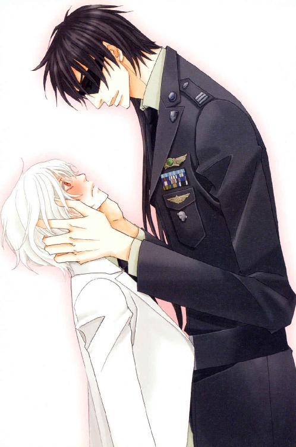

| 三千世界の鴉を殺し(15) (ウィングス・ノヴェル) | |
| 津守時生 | |
| 新書館 (2010) | |


１
カーマイン軍病院院長のグエン・ヴァン・ユー大佐は、サイコ・ドクターズをはじめとする病院の職員たちに等しく嫌われていたが、本来階級至上主義の軍隊にあって、異例の存在であることはほとんど知られていなかった。
彼と外科主任医師のサラディン・アラムートは同じ階級の大佐だった。
軍隊では同じ階級の場合、軍歴が長いもののほうが上位になる。
そして、専門職の医官の階級は佐官が上限だった。よって、原則に従えば主任のサラディンより役職が上の病院長には、彼以上に軍歴が長い大佐が就くことになる。
だが、今年で八十歳の定年を迎え、退役をするヴァン・ユー大佐は勤続三十年。サラディンより十年も軍歴が短い。
医師のように高度な知識と技能を必要とする専門職の場合、最初から軍医として任官するのではなく、普通の医師として他で経験を積み、キャリアの途中から何らかの事情で宇宙軍の軍医として任官するものが多く、サラディンは後者だった。
医療科の軍医たちは、職務に励んでいる限り勤続年数や状況に応じて順調に昇格できる。
戦闘集団としての軍隊で、作戦行動の指揮権が与えられていない彼らは、基本兵科の将校のように作戦の失敗などで降格されたり、左遷の憂き目に遭うこともなかった。
当然のことながら、経験豊富な医師は除隊しても再就職先に困らないので、軍としても貴重な人材である軍医たちが民間病院に引き抜かれないよう、待遇面ではかなり優遇している。
それでも、バーミリオン星のような辺境惑星の基地に好んで軍医として長期間任官しているのは、キャリアの長い医師ほど変わり者なのも確かだった。
変わり者といっても人命を扱う仕事なので、あまりに性格や能力に問題がある医師は、上官の勧告で半ば強制的に名誉除隊の措置をとられるため、辺境惑星とはいえ民間病院の医師とレベルは変わらない。
それどころか、バーミリオン星では医学の研究と医師や看護師の教育育成機関として、軍病院は高く評価されていた。
何故、軍歴の短いヴァン・ユーがサラディンより上位の役職に就いているのか――。
それは、前病院長が退任し、その地位が空席になった時、その後任として打診されたサラディンが、就任を拒絶したからだった。
『私から病理解剖を取り上げるつもりでしたら、ここにいるメリットなどありません。民間病院に移ります』
難しい手術は今まで通り担当できても、病院長の仕事との兼任では手術室に入る時間は激減する。
病理解剖も今後の病気の研究に役立つ大事な仕事だが、病院長の仕事を優先すれば、今までのようにサラディンが執刀する機会はほとんどなくなるだろう。
出世にまったく興味のない優秀な外科医のサラディンにとっては、極めて迷惑な話だった。
軍も彼を無理に病院長にした結果、除隊されてしまっては本末転倒もはなはだしい。
当時の基地司令官は早々に説得を断念し、サラディンと同じか近い階級の軍医で、病院経営に秀でたものの着任を上層部に求めた。
結局、そう都合良く辺境惑星の着任を了承するワケあり軍医などがいるはずもなく、代わりに派遣されてきたのが、軍に入隊するまでは民間会社を経営していたという経歴の財務科のヴァン・ユーだった。
とある事業の失敗から犯罪組織に命を狙われる羽目になり、自己保身のため宇宙軍に逃げ込んだ彼は、コスト意識が希薄な軍隊内において民間会社の経営で培った手腕を余すことなく発揮し、すぐに経理の能力を高く評価されるようになった。
そんな彼を膨大な予算を垂れ流し同然に食い潰している艦隊や地上基地に送り込み、一通りコスト削減を果たした銀河連邦宇宙軍だったが、硬直化した巨大組織にありがちな話で、能力を認めても生え抜きでない人間は重用されない。
最終的にヴァン・ユーには、組織の論理によって便利に使われたあげく、使い捨てられる運命が待っていた。
定年まで惑星バーミリオンの軍病院で院長を務めることを条件に、残してきた家族の保護と退任後の別人の人生を用意すると言われ、このあたりが潮時かと承諾したのがまずかった。
ヴァン・ユーは着任以来、かなりの額の退役軍人年金がつく定年まで、残された歳月を指折り数え、ただひたすら忍耐する日々を送る羽目になった。
腕はいいが、病院経営には無関心な変わり者ぞろいの各科主任医師たちとの攻防は、定年による退任の日を目の前にした今も、現在進行形で続いている。
その筆頭が病院長のポストを蹴った外科主任サラディン・アラムートだった。自分が就くはずだったポストに対し未練のない彼は、自分の代わりにその重責をになうことになった人間に対し、敬意も持っていないのは、ヴァン・ユーにとって大変腹立たしい限りだった。
だが、現在生じている重大な問題の当事者は、目の前に立つ外科医ではない。
絶世の美貌と言って過言ではない外科医と並び立ちながら、勝るとも劣らない美貌の持ち主であり、病院以外のことにはほとんど関心がないヴァン・ユーですら噂は聞いているルシファード・オスカーシュタイン大尉。
ヴァン・ユー病院長は、二メートル近い長身に加え、美貌にまで恵まれた黒髪の士官が院長室に入ってきた瞬間、その男が大嫌いになった。
秘書に案内されたルシファードは、サラディンと共に執務時間が始まったばかりの病院長室へと足を踏み入れた。
昨日、超能力を使った空間移動により自分が破壊した内科の外壁と廊下の一部は、連絡を受けた工兵たちが応急処置的な補修をしている。
事前に内科に寄って、状況を確認してきた。
外気を遮断し階下に落下する危険がない程度のことはできても、元通り通行に何も支障のない状態に戻すには本格的な補修が必要であり、早急に民間の業者に連絡して補修工事を行わねばならない。
本格的な補修には、病院長の許可が必要だった。
病院施設に損害を与えたのみならず、病院関係者と入院患者に精神的な苦痛を生じさせた謝罪を病院長にし、速やかに補修工事の許可を取る。
全面的に非があるのはこちらであり、工事の許可は絶対に必要だったので、ルシファードは潔く謝罪し相手の非難は甘んじて受ける覚悟だった。余計なことを言うほどに話がこじれるのは、経験でよく知っている。
一方、家具や絨毯などの調度品に金を掛けているのが一目でわかる病院長室に入り、物珍しげに室内を見回す大尉の横で、外科主任は警戒を怠らない。
病院の健全経営という名目で、あらゆることに強欲さを発揮する病院長グエン・ヴァン・ユーの人となりを知るサラディンは、ルシファードの潔さを逆に危惧していた。
他人の弱みにつけ込んで、どんな理不尽な要求を突きつけられるかわかったものではない。
――うーわー、この貧乏基地にきて、初めて贅沢品で埋め尽くされた成金趣味の部屋を見るなぁ。
ルシファードは、一般的な人間が考える豪華な部屋のイメージを体現した病院長室に半ば感心する。
着任して一ヵ月半。店舗以外の室内で、室内装飾品やそれを兼ねた調度品の置かれた部屋を見たのは四回目だった。
司令官室には惑星政府から何かの記念に贈られたらしい彫刻や、権威を高める雰囲気を作るように選ばれた重厚な家具が置かれていた。機能も重視して上品にまとめられた部屋には、司令官の個性は反映されていない。
制服の採寸に使われていた需品科の女の園は、ドミニク・バンカーの私物のソファ以外は安物で、天使や薔薇の意匠で埋め尽くされた過剰に華美な少女趣味の部屋だった。
サラディンが使用している外科主任室の一角は、洗練された異国趣味の持ち主に選び抜かれた高級な家具が置かれ、独特な雰囲気の美しい空間を構築していたが、そこのスペース以外は優秀な科学者の研究室然としている。
この病院長室は、一見重厚な印象を与える高価な調度品をいたるところに並べただけで、調和を一切考えていないために乱雑な印象がある。
医師ではないヴァン・ユーは、病院に対する信頼より、病院長である自分の権威を強調したかったらしい。
彼が内心に抱いている劣等感と虚勢が透けて見えるような、威圧的で訪れる人間を不安にさせる雰囲気の部屋だった。
一通り見て取った黒髪の大尉は、視線を巨大な執務机の向こうに座る病院長に向ける。
黒い革張りの椅子の、高い背もたれが目に入った。
――......アレ？ どこにいるんだ？
視線を下げていくと、子供のような小柄で頭の大きなシルエット。
ルシファードはスクリーン・グラスの奥で目をしばたたく。
内臓を痛めているのか、肌が灰色がかった黒っぽい黄色をしている小柄な男が、大きな目でこちらをにらみつけている。
頰がこけ、鋭角的にとがった細い顎が目立つ顔は初老の男のそれで、華奢で小柄な体型でも子供と間違えられる恐れはないだろう。
黒髪がわずかに混ざった白髪は薄くなり、頭頂部を中心として縦に細く柔らかな巻き毛が生え残っている。本人は不本意だろうが、モヒカン・スタイルに酷似していた。
体重管理ができないのかとは思われても、太って肌に張りとつやがあり血色が良い大男のほうが、はるかに病院長としてはイメージがいい。
これでは治る病気も治らないと思い込まれそうな、貧相で不健康な外見だった。
ヴァン・ユーは医師の資格を持たず、病院経営に徹しているため診療の現場にまったく出ない。おかげで、病院の評判に傷をつけずにすんでいることまで、ルシファードは知らない。
「............っ」
黒髪の大尉は自分の当惑を表現する言葉を見つけられず、ちんまりと椅子に座った病院長を指差したまま、思わずサラディンを顧みた。
外科主任が非常に不本意そうにうなずく。
「そうです。アレが我がカーマイン軍病院病院長グエン・ヴァン・ユー氏です。医師ではないため、ドクターとは呼ばないで下さいね。死神に取り憑かれたようなご面相の人間が、医師だなどと呼ばれていたら、患者や家族たちに何と思われるか」
「アレなどと人を呼ぶな。人並みの礼儀も知らないのか、白衣を着た解剖マニアがっ！」
キイキイと高くきしむような声でヴァン・ユーが怒鳴る。
天才外科医は軽く鼻で笑い、傲然と見下して言う。
「外科医が解剖好きで何が悪いのです。手術室で生きたまま解剖しても、格段に健康になって出て行くのですから、非難されるいわれはありませんよ」
「医師としての崇高な使命感のない貴様のような技術屋が、人間の命を弄ぶなど偉大なる創造主に対する冒瀆だっ」
「あなたが寝言で口にする宗教など、私の小指の先程も患者を救う役に立ちませんから。私が技術屋なら、貴方は事務屋でしょう。眠気覚ましに紅茶でも飲みながら、帳簿データでも眺めていなさい」
「うるさいうるさいっ。今は貴様などに用はないっ。部外者は出て行けっ」
「病院関係者ですよ、立派な。この病院に従事する技術屋を代表して、あなたが私腹を肥やさないように監視に来ました」
「無礼なっ！ 何を根拠にそんな妄言を吐く！」
「飲料ディスペンサーの納入業者と裏取引して、飲料の質を落とした差額をリベートとして不正に受け取っていたでしょう。それと同じ方法で、各科のさまざまな納入業者からリベートを受け取っていたことはわかっています」
「悪質な言いがかりはやめてもらおう。どこに証拠がある？」
外科主任は凄みのある笑みを浮かべ、貧相な小男の病院長をねめつける。
つややかな毛並みの大型肉食獣が、栄養失調で死ぬ寸前の猿をどう嬲り殺そうかと舌なめずりしつつ考えているようなようすに、唾液を飛ばして叫んでいた猿もといヴァン・ユー病院長が挙動不審に陥った。
「今朝早く、各科の主任医師に緊急招集をかけました。そして、業者のサンプルを見て発注したはずなのに、明らかにレベルの落ちた物品が納入されていないか、総点検して頂きました。日頃から不審に思っていたのでしょうねえ。たちまち百五十品目以上の名前が並ぶリストができ上がりましたよ」
メスを持てば魔術師と呼ばれる長い指を頤に軽く当てて、外科医は語りながら室内をゆっくりと歩く。
毛足の長い絨毯は、その足音を完全に吸収するため、彼の姿はよけいに猫科の大型肉食獣めいて見える。
指を組んだおのれの手に視線を落として話を聞く病院長の顔色は、青黒く変わっていた。
眉間に深い皺の刻まれた額が妙な具合に光を弾いて見えるのは、脂汗でもかいているのだろうか。
「それらを扱う業者を確認すると四社に絞られましたので、朝一番に四社の担当者を呼びつけ、主任医師全員で問いただした結果――」
歩き回るのを止めたサラディンは意図的に言葉を切って、ソファの一つに深く腰を下ろし、優雅に長い足を組む。
瞳孔が縦に長い琥珀色の目を残酷な笑いできらめかせる。
「自白は音声付きの映像で記録致しました。彼らの署名入りの文書もあります」
「......たっ......頼む、見逃してくれっ！ あと半年足らずで満期除隊なのに......っ。やっと、やっと家族と暮らせるんだっ。年金をもらって、長く待たせてしまった妻とのんびり旅行に行こうと――」
「あなたの老後設計など興味ありません。これは明らかに犯罪です。あなたはおのれの犯した罪によって裁かれ、相応の刑罰を受けるべきです」
美貌の即席捜査官は、眉一筋も動かさず非情に断罪した。
病院長は大きく顔を歪めた次の瞬間、声を放って号泣する。
「お前たちのような......っ、お前たちのような、傲慢で自分勝手な連中......に私がどれだけ、苦しめられたと......っ！ 耐え続けてきたストレスの代償として、そのくらいもらっても......許されるというものだっ」
「ストレスに耐えたのはお互い様でしょうが。軍病院は赤字になっても、どうせ宇宙軍が補塡するのです。そもそも本来ここは、基地の兵士と家族のための福利厚生施設として存在する病院なのですから、戦争でも起こらない限り入院病棟は満床になり得ませんし、有事における負傷兵の治療は業務ではなく義務です。紹介のない民間人でも受け入れる救急外来は、職員の意識と技能向上を目指して導入されたもので、最初から利益を目的としていません。カーマイン市の援助は有難く受け取りますがね。軍からの予算を使い切らないことが黒字だなどと称するのは、滑稽な言葉のすり替えであり、無意味な欺瞞です」
妙ななりゆきですっかり部外者にされたルシファードは、病院長に初対面の挨拶をすることすらできず、仕方がないので勝手に背後に手を回した休めの姿勢を取り、二人の争いが終結するのを待っている。
外科医が昨日の飲料ディスペンサーをきっかけにして、病院長の不正を糾弾するまでの一連の作業を電光石火の早業でこなした裏にある意図も、見当はついていた。
それに関して、ルシファードにはルシファードの考えがあったが、邪魔をするのはサラディンの好意に背くことになるので、こちらが言葉をはさめるまで辛抱強く待つ。
サラディンが語る軍病院の内情を軽く聞き流しながら、部屋の隅に置かれた巨大な花瓶の鑑賞を始めた。
カジャが完全に入ってしまいそうな丈の高い花瓶は、手描きで描かれた花鳥風月の絵柄に重ねて、金の縁取りが施された鑑賞用のものだった。
瓶つながりで、野菜や果物を瓶に入れて酢漬けにしたピクルスを連想する。
――今度酒のつまみ用にピクルスを漬けておこうかなー。ライラのために甘い果実酒なんかも作ると、喜びそうだよなー。
無用の長物一歩手前の美術工芸品を眺めながら、ピクルス用の空きボトルは大型販売店に行けば手に入るだろうかと考える。
病院長は涙に濡れた顔で甲高く叫ぶ。
「こ、こんな辺境惑星の病院で......よ、予算がついた分は使い切ってもいいと考えるようなっ......そんな低いコスト意識でいたら、いずれ民間に委託されるぞ！ お前たちが好き勝手できるのは誰のおかげだと思っている......っ」
「あなたの言葉にも一理あるとは認めましょう。ですが、余らせた分の予算が毎年削られている事実は問題です。健全な経営をする以上にコストにこだわるあなたのせいで、節約も限界にきている現場は、明らかに医療の質が低下しています。そして、経理に問いただしたところ、新年度早々あなたには毎回特別賞与が支給されているそうですね。内訳はコスト削減の報酬とか。そうなると、自分の賞与のために現場にコスト削減を強制していると言われても否定はできませんよ。そして、そっくりだと思いませんか？ 今回の業者との関係。サンプルと質が違うという、気づきにくいところで差額を造り不正蓄財するなど、悪質の極みです」
「その程度の報酬を受けても......いいだろうがっ」
「百歩譲って、あなたがここの病院長を引き受けた際、宇宙軍との密約で特別賞与の話があったのなら、それはあなたと宇宙軍との契約なのだと主張できます。しかし、サンプルと実物の差額を受け取るのは明らかに贈収賄です。憲兵隊に告発すれば逮捕されるでしょう」
「やめてくれっ。何でも言うとおりにするから......っ」
美貌の外科医が、全面降伏の言葉を待っていたのは間違いなかった。
毒のない爽やかな微笑みを浮かべてうなずく。
「結構。あなたの不正蓄財は、病院のためにすべて放出して頂きましょう。早急に内科病棟の補修工事を行わねばならないので、ちょうど良い機会です」
「その使い道に異議あり」
即座に反対したのは、サラディンがかばおうとしていたルシファードだった。
驚いて顔を上げた病院長に敬礼し、言いそびれていた挨拶から始める。
「初めてお目にかかります、ヴァン・ユー病院長殿。機動歩兵科第六連隊所属ルシファード・オスカーシュタイン大尉であります。このたびは任務中の事故により、軍病院及び関係者の皆様に対し、多大な精神的苦痛と損害を与えてしまったことを深くおわび申し上げます。軍病院の建物に対し与えた損害は、すべて私に起因することなので、責任を持って原状回復に努めます。つきましては、こちらの手配した民間業者による補修作業の許可を頂きたくお願いに参りました。許可を頂き次第、本日からでも補修作業を開始するようになっております」
「......それで、その費用を私に持たせようと、そこにいる男と共謀したわけか。......よく考えたものだな、まったく」
憎々しげに吐き捨てる病院長に対し、ルシファードはかぶりを振って否定した。
「ノー・サー。逼迫している基地の財政事情にご配慮下さったドクター・アラムートのお気持ちは大変有難いのですが、筋が違います。病院の建物に補修が必要な損害を与えたのは病院関係者でなく、任務中の兵士である私ですから、補修費用は宇宙軍が支払わねばなりません。しかし、その任務中の損害は私の特殊能力によるものであり、私と宇宙軍とのあいだにかわされた最新の取り決めにより、任務中の私の特殊能力による損害に関し、宇宙軍は損害賠償を免責されることになっております。従って、今回の補修費用の全額は私の個人負担となります」
「ならば、なおのこと――......っ！」
立ち上がって言いかけたサラディンの言葉の先を、ルシファードは軽く手を上げて制する。
「一連の経緯はすでに基地副司令官殿に報告し、了承を得ています。工兵科の責任者にも事情を話し、補修工事に携わる民間業者の選定と交渉、作業の監督を依頼しました。その支払いに出所不明金を当てるわけにはいきませんし、経理も納得せず事務手続きに多大な支障をきたします。私の個人的負担を憂慮なさってのお気遣いに対し、大変有難く存じますが、支払い能力はありますのでご懸念には及びません」
「そうか。すべて手はずが整っているなら任せよう。早急に補修を行ってくれ。許可する」
嬉々とした病院長は、外科主任に口をはさまれてはならじとばかりに、早口で補修開始の許可を与えた。
「有難うございます、サー」
「それから今、この室内で話し合われた私とアラムート医師との会話は、一切他言無用だぞ」
「アイ・サー」
収まらないのは、サラディンだった。
ルシファードの負担をなくし、かつ病院長に痛手を与える一石二鳥の妙案と思い、早朝から各科の主任に緊急招集をかけてまで動いたことが、すべて当の本人の拒絶によって無駄に終わったという結果は承服しがたい。
だが、ルシファードにも曲げられない組織の理屈があり、彼はそれを病院長に説明する形で丁寧に教えてくれた。
打ち合わせもせず勝手に行動した自分に非があるのはわかっている。それでも徒労感から八つ当たり先を探してしまう。
細い眉をつり上げ、憤然とにらみつけても彼の華やかな美貌は少しも損なわれないが、地球人なら一目見るなり失神しそうな迫力があった。
黒髪の大尉は怒れる蓬萊人と平然と対峙し、ことさら明るく付け加える。
「お二人の会話にあった余剰金は、今後病院の老朽化にともなう修繕費用として温存なさることをお勧めいたします。宇宙軍からの予算では、充分まかなえない場合もあるかと」
「そう......ですね。各科から集めたものですから、全体のために還元するのが一番理にかなった使い道でしょうね」
サラディンは怒りを押し殺し、無理に作った笑顔で聞こえよがしに言った。
結局、不正にため込んだ金を全部吐き出させられるとわかった病院長は、醜悪に顔を歪めてうなる。
「お忙しい中、時間を割いて頂き有難うございました。――失礼いたします」
ルシファードは再度敬礼し、病院長室を辞去する。
勝ったはずなのに敗北感に似たものを感じつつ、外科医も彼のあとに続いて部屋を出た。
秘書室の前を通り抜けて人気のない廊下に出たところで、ルシファードは足を止めた。
改めて抗議しようと口を開きかけたサラディンに真剣な面持ちで頼む。
「あんたの気持ちはわかっているよ、ドクター。だけど、ゴメン。先に至急仕事の指示を出さなきゃいけないんで、少し待っていてくれ」
「......どうぞ」
はぐらかされた心地で渋々うなずく医師のそばで、黒髪の大尉は携帯端末を取り出し、文章を考えながら打っているとは思えない速さでメールの作成を始めた。
彼が支給されている携帯端末で通話する姿は何度も見たが、メールを打っているのを目にするのは初めてだった。
こんな静かな場所で通話を躊躇するのはわかるものの、どことなく奇異な印象がある。
その原因を考えているうちにルシファードはメールを送信して、携帯端末を上着の隠しに収めた。
「お待たせ。――俺のために有難う、ドクター。病院長を追い詰めている姿がカッコよくて、ウットリしたぜ」
「余計なお世話だったようですね。ほかの科のドクターたちに首尾を聞かれた時に、何と言い訳したらいいのやら。業者の担当者たちには、二度とこんな真似はしないと誓わせたので、多少現場にも還元されますが、大山鳴動鼠一匹と言いますか......不完全燃焼気味ですね」
「その担当者のことだけど――」
彼らが話しながら歩く廊下の先の曲がり角から、白い羽毛のような髪のカジャ・ニザリが顔をのぞかせた。
二人の姿を認めて、手で差し招く。
格別足を急がせるわけでもなく、病院長室から続く短い通路から、吹き抜けの明るい玄関ホールの一角に至る。
午前中の診察を受ける外来患者たちが目的の科を目指して行き交っているが、受付開始時間は過ぎているので、ピーク時ほどの数ではない。
「こんなところで何ですか？」
「結果が気になって仕事が手につかないんだ。ほかのドクターたちも集まっている」
内科主任が振り返って指差す方向には、診療した後に処方される薬を患者に渡す薬局の待合所がある。診察が始まったばかりの時間なので、待合所のベンチに薬の処方を待つ患者はまだ誰もいない。
空席の目立つそこに白衣を着た男女が数人、飲料の入ったカップを手に談笑している。
「仕方がないことですが、物見高いですね」
「君が早朝に招集をかけたんだろうが」
「えーと、つまり俺は二日連続でつるし上げコースなわけ？」
半ばひとりごちて顔をしかめた男の片腕をつかみ、外科医はにこやかに命令した。
「あなたに逃げられると私がつるし上げられますので、一緒に来て下さいね」
「何？ 不首尾に終わったのか？」
「あちらで話します」
何度も説明するのは面倒なので、サラディンはルシファードを引きずって医師の一団が待つ薬局の待合所へと向かう。
個性派ぞろいの各科主任だったが、病院長の不正を知って一致団結した彼らは、勝利を確信して待っていた。
なので事の顚末をサラディンから聞かされると、一様に表情を険しく変える。
責められる前にひとこと言っておかねばと、黒髪の大尉が急いで弁明した。
「事前の打ち合わせがあれば、皆さんのご厚意を無にするようなことは致しませんでしたが、一度済ませた手続きを取り消してやり直すとなると、全部事情を説明しなければなりません。病院長の不正が明るみに出たら、もはや余剰金ではなく犯罪に関係した証拠の金として、全額差し押さえられますよ。余剰金として有効に使うほうが得でしょう」
「余計な工作はせず、不正を告発したほうが面倒がない」
神経質そうな若い医師は合理主義者らしい。
それに対し、年配の女性医師が両拳を握って主張する。
「復讐を面倒だなんて言う人は黙って見ていればいいわ。私は今まで苦労してきた分、ヴァン・ユーをじわじわ苦しめてやらなきゃ気が済まないのよ」
「外聞が悪いことは、なるべく内々に処理したい――」
「満期除隊の彼の年金を奪うのは後味が――」
医師たちが口を開くと、個々に違う意見が飛び出す。最初は時間切れを理由にして、外科主任が強引に一同の意見をまとめたのか、一任を取り付けたのだろう。
腕組みをしたサラディンが軽く眉間に皺を寄せてため息をつき、カジャはお手上げとばかりに肩をすくめる。
すぐに今後の方針を決めるのは、むずかしそうだった。
「あんまり追い詰めると、妖精さんに呪いをかけられますよ」
口々に自分の意見を主張していた医師たちは、同時に口を閉ざし、恐ろしく場違いな単語を口にした軍服姿の男を振り返った。
「なぜ、さん付け？」
「そこじゃないでしょ」
「妖精などという非科学的なものは存在しない」
「どういう脈絡で妖精という概念が出てくるんだ」
「妖精って誰のこと？」
個性的な突っ込みが一巡したあと、精緻な顔の造作と同じくらい思考回路も常人の及ばない領域に達している男の言動に、多少なりとも免疫のあるカジャ・ニザリが尋ねる。
「まさかとは思うが、貴様の言った〝妖精さん〟に該当する人物はグエン・ヴァン・ユー病院長か？」
「ああ、そうだ。病院長って俺がガキの頃、地球人には有名なファンタジーの古典だからと、幼稚園で見せられた映画に出ていた妖精にそっくりだなぁと思ったんだ。先生が、妖精はいたずら好きだから恨みを買うと呪いをかけられますよって言ったから――」
「何というタイトルの映画でしたの？」
美貌の男と直接話したくて、女性医師がどうでもいいことを聞く。
「その時は、子供心にあまりにもワケのわからない話だったので混乱して、タイトルさえ覚えられなかったのですが、後日、士官学校の教養科目で強制的にそれのシナリオを読まされました。――古代の地球人は大らかだったというか......あまりの不道徳さに啞然としたと読書感想文を書いたら、担当教官の怒りを買ってレポートの評価は不可。悪口を書いたせいで妖精に呪われたのだと思いましたよ」
サイコ・ドクターズ以外は全員地球人の医師たちは互いに顔を見合わせ、それが何という物語なのか目顔で尋ね合う。
誰もが心当たりがないと首を横に振ったため、再び女性医師がルシファードに話しかける。
「よろしければ、内容をかいつまんで話して頂けます？」
「......バイ・セクシュアルの妖精王が、幼児性愛者の妻の愛玩している少年を取り上げようとして、配下の妖精に秘密工作を命じたものの、妖精があまりにも無能だったため無関係な人間の男女数名が巻き込まれ、大混乱するという話でした。人間の男女に恋人交換させるのはともかく、自分の妻に暗示をかけて獣×に走らせるのは、さすがにいかがなものかと――」
「何という不道徳な話だっ！ けしからんっ、耳の穢れだっ」
美少年の外見を裏切らず、その方面に関してはやや潔癖なきらいのあるカジャが怒り出した。
快楽に対して大変大らかな蓬萊人の外科医は、話の細部に興味を持つ。
「恋人交換というのは全員で一斉にですか？ それとも組み合わせ？」
「うーん。確か乱×じゃなくて――」
「病院ですから......っ！ ここは老若男女が利用する病院ですから、朝からそのようなきわどい会話はおやめくださいっ」
真っ赤になった初老の医師が、超絶美形の男たちのあいだで交わされる過激な会話に割って入った。
合理主義者の若い医師は軽くうなずく。
「確かにあらすじはおおむね間違っていないし、先入観なしで聞くと古典的名作とは到底思えない内容だな」
「映画で見たその無能な妖精さんが、病院長にそっくりだったんだよ。ついでに言えば、病院長をいたぶっている時のドクターが、妖精王の雰囲気そのままだったなー。綺麗で残酷で優雅で尊大で、変態」
「変態だけ余分です。しかも、いたぶるだなどと人聞きの悪い言い方はやめて下さい。ヴァン・ユー相手にそんな真似をするほど、相手に困ってはいません」
「じゃあ、言葉責め？」
憤然としたサラディンが言い返す前に、再び初老の医師が割って入る。
「ハイ、そこまでっ！ そこまでにして下さい～。ここは病院ですからぁ」
「しかし、これからヴァン・ユーをどうする？」
カジャが最初の話題に戻す。
主任たちのあいだで全員不一致の論争が再燃するより早く、ルシファードがさきほど言いかけた話を思い出した。
「そういえば取引先の担当者たちに釘を刺しておいたほうがいいぞ。この問題が公になっても司法取引があるから、病院長の甘言に乗るなってな。贈収賄で罪に問われる前に口裏を合わせようとヴァン・ユー病院長に持ちかけられたら、逆に各科の主任たちに脅されて病院長を陥れる協力をするよう、強制されたなんぞと、連中は言い出しかねないぜ」
「は？ ばかばかしい。彼らが証言した映像もサイン入りの書類も手元にあります」
「あちら側も同じ証拠を作って提出することは可能だ。――一応、病院長の経歴と仕事ぶりを調べられる限り調査してみたが、コストカット面でかなり辣腕を振るってきた人物だな。ただ宇宙軍の監査の厳しさを考慮すると、この惑星に着任するまでは不正をする余地がなかっただろう。辺境惑星の軍病院の監査の甘さに対する慣れと油断で、ドクターたちに尻尾を摑まれるようなやり方をしたんだと思う。今頃病院長室で自分の迂闊ぶりに腹を立てて荒れ狂っているぜ、きっと」
医師たちは、ルシファードの思いがけない指摘に動揺する。
最初にヴァン・ユーの年金を心配する温情主義の発言をしていた医師が、青ざめた顔でおそるおそる質問する。
「えーと、つまり......私たちが逆に告発されるとか......そういう可能性もあると？」
「アイ・サー。あくまで可能性の段階ですがね。あの病院長の性格から考えて、逆恨みの逆襲コースもありそうだと思いませんか？ 追い詰められた妖精に呪いをかけられる前に、魔除けをしておいたほうが無難でしょう」
サラディンは人差し指で眼鏡のフレームを軽く押し上げ、不機嫌につぶやいた。
「私たちは詰めが甘かったということですか？ 担当者たちには、どこの口座に振り込んでいるか、白状させましたが......」
「残高の確認は？」
「そこまではしていません」
くやしげな外科医に慰めるような笑顔を向け、ルシファードがメールで指示を出した相手について語る。
「時間がなかったんだろう？ ドクターはお医者さんなんだから、完璧にできなくてもしようがねえさ。そこからどこに移されているか、今、俺の部下に探させている。取引先のコンピュータをハッキングして、二重帳簿や資金の流れの証拠を発見次第、消去できないようにパスワードを変更するように命じた」
「......結局、私はあなたの仕事を増やしただけですか」
「いや、とんでもない。部下を鍛える機会をくれただけさ」
女性医師が、余裕の答えを返す黒髪の大尉をうっとりと見上げるそばで、中年の男性医師が複雑な面持ちで言う。
「我が軍病院始まって以来の大スキャンダルだな。不正蓄財は没収されて、騒ぎだけが大きくなる。仕方がないとはいえ、病院内がうるさくなるのは困る。治療が難しい患者に悪影響が出なければいいんだが......」
「申し上げた通り、私が部下に命じた調査は魔除けですよ、ドクター。私も部下も憲兵隊ではありませんからね。病院長の出方次第では、ドクターたちが当初目指していた内々に処理することも可能です。ですが、不埒にもドクターたちに害を及ぼすようなら、即座に憲兵隊に通報いたします。証拠として口座を凍結された不正蓄財に関して確約は致しかねますが、軍事裁判終了後、請求があれば軍病院の口座に返還措置がとられると思います。不正蓄財について、業者側の詐欺行為によりだまし取られた軍病院の金という解釈も成り立つのでは？ そのような場合は、病院側で弁護士を立てて、法務科と話し合うことをお勧めします」
カジャが苦笑した。
「さすが、この手のことに慣れている奴は違うな」
「おかげさまで。ジェットコースター人生、何度法務科のお世話になったことか」
ルシファードは冗談めかして明るく言ったが、サラディンの愁眉は晴れない。
「あなたが工兵科と事前に打ち合わせをしていなかったら、友人であるあなたの負担すべき補修費用を捻出するために、ヴァン・ユー病院長を恐喝したということになる可能性もあったわけですね」
「ん？ 事実、恐喝していなかったか？」
「ああ、贈収賄を見逃す引き替えに不正蓄財を吐き出させることは交換条件であって、恐喝とは言いませんよ」
外科主任の言葉にほかの科の主任たちも即座に同意する。
腕組みをしたルシファードはわははと大口を開けて笑い、混ぜ返す。
「マルっちだったら、そういう考え方はしないと思うなー」
「病院関係者ではないものは口出し無用です」
合理主義者の若い医師が冷ややかに言えば、中年の医師がいかめしい顔でうなずく。
「そう。我が軍病院には軍病院のやり方や掟というものが厳然としてあります。それに背いたものは、合法的に霊安室の宿泊客になって頂くこともあり得る――などと言われているのは冗談ですがね」
「いわゆる都市伝説と呼ばれる類のものですわ、おほほ......」
女性医師がいたずらっぽく笑えば、温情主義の医師も隣で一緒に笑った。
――でも、みんな目が笑っていないのは、な～ぜ～？
サイコ・ドクターズと仲良しの将校は、主任医師たちとの会話が次第に楽しくなってくる。
拳を握ったカジャが、サラディンの不快感に共感した。
「危うく、ヴァン・ユーに濡れ衣を着せられるかもしれなかったとは。ヴァン・ユーのくせに生意気な......っ！」
あの病院長の性格ならやるだろうという、仮定もしくは推測を事実として誤認した上、何やら一部大変理不尽な発言も含まれている。
どこから突っ込めばいいのか迷ったあげく、ルシファードはサラディンの発言にまで戻って告白した。
「ごめん、ドクター・アラムート。実は病院長室で俺が言ったこと、一部分ウソなんだ」
「ほら見なさい。尉官クラスの給与などたかが知れています。見栄を張らず、今からでもヴァン・ユー病院長を締め上げて補修費を払わせましょう」
「いや。そっちは大丈夫。時々趣味で書いているパソコン・ソフトの著作権料が手つかずで、結構貯まっているから楽勝で払えるよ。ウソは俺の超能力による損害に対し、宇宙軍は賠償を免責されるというくだりだ。任務遂行によって生じた損害に対し、俺に賠償義務はない。俺の判断と行動が正しかったか否かは問題にされるが、自分の部下だけでなく、中央本部の情報将校の命がかかっていた今回のケースにおいて、判断ミスだと断罪される可能性は限りなくゼロに近いと思う。――それでも、俺が払うけどな。司令官殿に逆上されたら面倒なことになりそうだし、ＰＣリングをはめていなかったことがバレるのが、何よりまずい」
「......なるほど。あなたの側にも事情があるのでは、好意の押しつけはご迷惑ですね。各科主任たちの総意として、定年除隊の日まで夜も眠れないほど不安な日々を送らせてやりたかったのですが、ヴァン・ユーの分際で生意気にも反撃してくる危険があるというのでは、しようがありません。かくなる上は、あの強欲でドス黒い性格の悪さを遺憾なく発揮して、破滅に突き進んでくれるのを心より願うばかりです」
ルシファードが妖精の王になぞらえたほどの威厳と妖しい美貌を有する天才外科医は、物憂く目を伏せて優雅に品良く大変ひどいことを言う。
内科主任も童顔に似合わない皮肉な笑いに片頰を歪めた。
「窮鼠猫を嚙むとも言うからな。あのドブネズミそっくりな男に嚙まれたら、相当深刻な感染症にかかりそうだ。初対面の大尉が即座に警戒したように、追い詰めたこちらも奴の今後の行動に充分注意を払う必要があるだろう」
「えー？ ドブネズミにそっくりだなんて、ひでえなぁ。俺はあんたにちょっと似ているなって思ったんだぜ？」
「はぁ？」
ルシファードの抗議を聞いた瞬間、その場にいる医師たち全員が異口同音に問い返す。
当然ながら、カジャは激怒する。
「どこがだっ！ 身長が同じくらいだというだけで、似ているだなどと言うな」
「いや、見た瞬間に思ったんだけど。病院長ってあんたをミイラにしたら、そっくりになるんじゃねえ？」
「......っ！」
あっけにとられたカジャ以外の医師たちが同時に吹き出し、腹を抱えて笑いころげる。
何故、わざわざミイラにしてまで比べる必要があるのか。その思考が理解できない。
しかし、ルシファードはカジャに納得してもらおうと、自分が似ていると思った理由の説明を始める。
「ほら、ミイラにすると水分が蒸発して、全体的に細くなって縮むだろ？ 髪の毛も程よく抜けて、頭のてっぺんにポヨポヨの白い毛の塊がちょっと残っているあたりとか、いかにもソレっぽくねえ？」
「ソレっぽいとは何だ。私らしい感じになるとでも言うつもりか？ 想像で勝手に私のミイラを作るなっ！ そもそもミイラ化すれば、みんな似たり寄ったりの姿になるだろうがっ」
「いやいやいや。あんたと病院長を比較すると、体と頭のバランスとか輪郭の相似が絶妙だぜ。ほら、広告によくあるだろ。二人の姿をならべて使用前・使用後って違いを見せるやつ。アレみたいに生前・死後」
「いい加減にしろっ。無礼にもほどがあるっ！」
大尉がいくら丁寧に説明したところで、彼の感覚に共感するものは現れない。
真っ赤になってわなないているカジャの背後に立つサラディンは、友人のためにルシファードの暴走を止めなければと思うのだが、自身の笑いを止められず何もできない。
ほかの医師たちも外科主任と同じような状態だった。
しかし、携帯端末の呼び出し音が三つ前後して鳴ると、その持ち主たちは即座に笑うのをやめ、白衣や上着のポケットから取り出したそれと真剣な表情で応答する。
職場から戻ってこいコールのかかった彼らは、短い状況報告を受けてすぐに戻ると答えた。
「残念だが、さすがに仕事に戻らないといけないようだ」
「ああ、久しぶりにすごく楽しかったわ。有難う、大尉」
温情主義の医師と女性医師の二人が笑顔で別れを告げると、合理主義の若い医師も意外に柔和な笑顔を見せて言う。
「実に有意義な時間だった。機会があったら、是非また君に会いたいものだ。病院内部の問題に巻き込んですまなかった」
「とんでもない。今回の結果が、皆さんのご期待に添えるものになるよう私も祈っております」
「それでは私も職場に戻るよ、ドクター・アラムート。君は忙しいだろうから、この場に来られなかった主任たちに今回の経緯をメールに書いて、私が一斉送信しておく」
「有難うございます。皆さんによろしく」
中年医師の申し出を受けて、各科主任たちの代表を務めていたサラディンが礼を言う。
カジャはまだ怒っていた。
「どうして私が、あの貧相なヴァン・ユーのためにミイラ化されねばならんのだ......！」
「別にミイラにしたら似ているって思っただけの話で、あんたが死んだらミイラになんかしねえよ。もったいないだろ」
「んあ？」
今度は何を言い出すつもりかと、胡散臭げな表情で顔を上げたカジャの頰を両手ではさみ、長身のルシファードが真上からのぞき込む。
「こんなに綺麗で可愛いあんたを、どうしてわざわざ黒くしなびたミイラに変える必要があるんだよ。俺だったら完璧に防腐処理して、透明保護ケースの中に入れて飾るな。プリザーブド・フラワーって言ったっけ？ 永久不変処理した花のアレンジメントを硬化ガラス・ケースに入れて飾るヤツ。きっとあんな感じになる」
サラディンは素早く周囲をうかがった。
幸い、エレベーター・ホールの方向に去っていった主任たちの中で、こちらを顧みているものはいない。
近くを通りかかった外来患者にも、こちらを気にしているようすはなかった。
ルシファードは真っ赤になって硬直している白氏に向かって、甘く低い声で囁きかける。
「......あんたなら、一輪の白いバラの花を飾ったみたいに、清楚で可憐で綺麗だろうな......」
「......あ......う......」
ルシファードは純粋に、完璧な防腐処理をしたカジャの死体が展示されている光景を思い描いてうっとりしているだけなのだが、端から見ると口説いているようにしか見えない。
無意識のタラシ攻撃にさらされている友人を助けようともせず、外科主任は医師たちが去ったあとだったことを喜んだ。
超絶美形で優秀な士官だが、迂闊な天然ボケの人タラシでもあるこの男が、ゴシップ好きのナースのあいだで盛り上がる人気ネタの一つに納まっているうちは問題ない。
彼の話を耳にすることがあっても、医師たちはいつものゴシップ・ネタかと聞き流して終わりだった。
しかし一旦、科学者でもある医師たちの関心を引く事態になったら、彼らは好奇心と探求心の赴くがまま、ルシファードの観察に走るだろう。
今でさえ個性的な主任医師たちを一つにまとめるのが難しいのに、観察対象の争奪戦に突入したら、娯楽に飢えている各科のナースたちまで巻き込んで収拾がつかなくなる。
加えて、病院内でルシファードと過ごす時間に邪魔が入るようになるのは、大変面白くないサラディンだった。
「ん？」
今度はルシファードの携帯端末に連絡が入ったらしい。
硬直しているカジャを離して上着の隠しに片手を入れ、バイブ機能が働いたとおぼしき携帯端末を摑み出す。
メールに目を通しながら不敵な笑いを浮かべた彼は、二人の医師に話しかける。
「病院長の隠し口座を突き止めたぜ。過去の入出金記録もコピーを取った。業者側のデータも入手済みだから、突き合わせれば言い逃れ不可能な証拠だ。あんたたちにも転送しておく」
「今回のことでは、私たちも不満を漏らすだけでなく、その改善も含めてもう少し周囲のことに気を配るべきだと思いました」
「仕事でそれだけ忙しいんだから、しようがねえよ。業者の担当者が伝票を偽造して二重帳簿にしたら、財務科の監査で見抜くのは難しい。――よし、と。データを転送したぜ」
「医療機器などで金額の大きなものなら、抜き打ちで調査が入りますが、ヴァン・ユーは単価が小さく大量に消費するもので、こちらが指定したものより下のランクの似たような品を納入させていました。日々それらに接している現場の我々でも見過ごしたものを、財務科の兵士に気付けというのは無茶な話です」
「まったく狡猾極まりない......っ！ 思い出すと、また腹が立ってきた。ナースたちに今回の不正を話して、今後納入された品がこちらが注文した品かどうか、立ち会って確認するように義務づけよう」
思い返してまた憤りが甦ったカジャが、今後の不正対策を口にする。
「しかし、ナースたちも忙しいですからねぇ。こうして不正が発覚した以上、ヴァン・ユーが同じ方法で再び不正行為をするとも思えません」
「つか、注文書と納入品の突き合わせ確認は、本来しなきゃいけねえことだぜ？ 今回はリベートとして病院長の不正蓄財に回っていたけど、悪質な業者がランクを下げた品を定価より高い値段で売りつけて、自社の利益にする場合だってあるワケでさ」
「そうだ！ いいことを思いついたぞ、サラ。我々はかねてから医療事務を行う秘書を役職として置くよう、要求していただろう？ 今年度の残りはヴァン・ユーの違法行為でため込んだ金で給料をまかなうことにして、来年度予算から正規に医療秘書の人件費を各科で申請するというのはどうだ？ 業者への発注から納品の立ち会いと確認もしてもらう」
「名案ですよ、カジャ！ 有意義な還元だと思います。各科の主任たちも同意してくれるでしょう。もちろんヴァン・ユーに否とは言わせません」
「これで面倒な書類仕事が減るぞ！ 机の上に山積みの書類から、三十分もかけてサインの必要な申請書だの受領書だのを探さずに済む！」
「請求書に添付する必要のある紹介状も管理してもらえるんですよ！」
積年の問題も解決し、手を取り合わんばかりに喜び合う二人のそばで、有事に際し即座に移動可能なよう整理整頓を常とし、私物は最小限度と定められている職業軍人が首をかしげる。
「決裁の必要な書類や後日手放す書類は、所定の引き出しなり書類ケースに放り込んでおけばいいだろ。診療中に書類を持ってくる連中にもそれを言って――」
「甘い！」
ルシファードの提案は内科と外科の主任から異口同音に否定された。
「書類仕事をやりかけると、必ずと言っていいほど途中で邪魔が入るんだ！ 何度も中断した挙げ句、ナースに呼ばれて席を離れたら、そのまま半日戻れないことなど当たり前にある」
「ほとんど片付けられないで仕事に追われているうちに、色々なものが机の上に積み重なっていくのです。まるで地層のように」
「貴様には常に仕事でサポートしてくれる優秀な副官がいるだろうが！ 私たちは全部一人でやらねばならんのだ」
「書類を一括管理し、優先順位に従って提示してくれれば、どれほどストレスが軽減されることか。内容を要約した説明を聞きながらサインするのに大した時間はかかりません」
「ああ......！ 夢のようだ、そんな生活」
内科主任医師がうっとりとつぶやくと、外科主任はその両手をにぎり視線を合わせると、固い決意を込めて言った。
「そんな夢の職場環境を是非とも実現しましょう、ドクター・ニザリ」
「もちろんだとも、ドクター・アラムート。各科の主任たちの誰もが、この提案を熱狂的に支持してくれるに違いない」
自分たちの勤務状況も知らず、無神経な発言をしたルシファードを交互になじったあと、二人は夢の未来に向かって共闘を誓い合った。
利害が一致した場合、目的のためなら手段を選ばないという価値観を共有する彼らは、最強にして最凶の相棒になる。長年の付き合いで息も合う。
カジャは嫌がるが、サイコ・ドクターズと複数形で呼ばれる所以だった。
視覚的には美しいものの、本質的に禍々しい関係の二人にしては、今回労働環境の整備と向上という至極真っ当な目的を掲げているのが、かえって見るものに違和感を与える。
――何故だろう。この二人がさわやかだと妙に物足りない......
常人と感性の違う宇宙軍の英雄ですら、そう思った。
「極めて有意義な金の使い道を思いついてよかったな。俺が内科病棟の床と壁に開けた大穴を単純にふさぐより、そのほうがよっぽどあんたたちのために役立つ」
「......ですが、本当に支払いは大丈夫なのですか？ 請求書を見て、一桁違っていたと気付いてからでは遅いのですよ？」
まだ心配そうなサラディンの隣で腕組みをした内科医が、華やかな美少年の顔立ちに似合わない腹黒そうな笑みを浮かべて言い放つ。
「不足した場合は私が貸してやってもいいぞ。ただし利子はもらう。十日で一割」
「トイチの利子ですか！ 悪徳金融業者顔負けではありませんか。大尉、カジャに借りるくらいなら私のところにおいでなさい。無利子で貸して差し上げます」
「やめておけ。タダより高いモノはないぞ。利子の代わりに何を要求するつもりだ、サラ」
「私の秘密の楽しみのために、肉体で奉仕していただくだけですよ、ほんのひととき」
蓬萊人は妖艶な笑みを浮かべて、甘い声で囁く。
思わずあらぬことを想像してしまった白氏は赤面したが、ルシファードは笑った。
「盲腸を取られるくらいならまだいいけど、頭蓋骨まで抜かれそうだからヤダな、そんな秘密のご奉仕」
「内臓の写真を撮影するくらい、よろしいではありませんか。減るものでなし。別にヌードを撮らせろと言っているのではありませんよ？ 私の個人的な楽しみのために、その肌の下を見せろと言っているだけです」
「普通は肌の下じゃなく、服の下を見せろと言われたほうがマシだと思うけど？ 心配しなくても本当に大丈夫だよ。この病院全部を建て直せと言われても楽勝だから」
見栄を張ってくだらない噓をつくような男ではないと知っていたが、サラディンは半信半疑で尋ねる。
「......パソコン・ソフトとは、それほどまでに利益の出るものなのですか？」
「うん。色々特許も取っているらしいぜ。パソコンだけじゃなくて、宇宙船の航行システムのソフトやハッキング防止のファイアー・ウォール・ソフトとか、俺自身の必要に迫られて書いたソフトも渡したら、銀河系有数の企業体やどこかの軍にも正式採用されたって聞いた。そのあたりだと極秘扱いだから、機密保持料込みで結構いい金になったらしいし。案外、銀河連邦宇宙軍も俺の書いたソフトを使っていたりしてな」
本日の訓練メニューを話すような気軽さで言われたために、一瞬大したことではないような錯覚に陥った。
しかし、専門外の話を完全に理解し、概算した最小限の利益を数字として実感するまで多少の時間を要したカジャが、いきなり怒り出す。
「貴様......っ。どれほど適齢期の女性にとって、お買い得物件になれば気が済むんだっ！ 超絶美形かつ宇宙軍の英雄の分際で、大富豪だなどとふざけるなっ。恥を知れっ」
「はぁ。人目を忍んで、一応顔を隠して生きていますけど」
「カジャの言うとおりです。非常識過ぎて、もはや存在自体が許せません。話を聞いて思わず、あなたと結婚したくなるなんて、私としたことがどうした気の迷いでしょう」
忌まわしげにルシファードを見遣ったサラディンが眉をひそめると、カジャも渋面を作ってうなずく。
「君がそう思うのも無理はない。私も同情のあまり、嫁に行ってやろうかと思ってしまった」
「......すみません。身の程知らずと罵倒されることは覚悟の上ですが、子沢山の家庭が夢なので、男の嫁はちょっと......ご辞退させて頂きたく......誠に僭越ながら......」
「愛人でもかまいませんよ。こう見えても寛大な人間ですので。ちなみに私の特技は解剖、趣味の鍼で人体の急所は熟知しております」
「私の特技は細菌の培養かな？ 毒の研究は趣味でやっているが、現物も沢山持っているし、調合も得意だ。成分がすぐに分解し、専門機関の分析にも引っかからない毒薬で、自然死に見せかけるなど造作もない」
与太話は次第にサスペンス・ドラマの筋立てめいてきた。
ルシファードが笑いながら話の欠点を指摘する。
「共謀した美貌の愛人二人が、毒殺した男をバラバラにして、死体を痕跡も残らず処分するという話なら、真犯人は意外な人物じゃないとダメなんだぜ。ドクターたちは専門家の上に、最初から胡散臭くてミス・キャストだよ。そもそもその設定だと、愛人に殺される被害者は、金に物を言わせて女あさりをする脂ぎったスケベ親父か、年甲斐もなく若い女に手を出す金持ちの色ボケじじいだろ。あんたたちのほうが、俺よりずっと年上じゃねえか」
「そういうあなたこそ、女あさりをしてごらんなさい。いつも女性から、あさられるばかりのくせに。この甲斐性なし」
「う......っ。まさか、そこを見破られるとは――じゃなくて！ ドクターたちの設定だと最初からミス・キャストだと言っているんですっ」
与太話から現実に話を戻して、カジャが最初に感じた疑問を口にする。
「コンピュータ・ソフトでそれほど莫大な収入を得られるのなら、どうしてそちらを本業にしない？ お前のような性格で軍隊のような組織にいるのは、大きな軋轢を生むもとだ」
「趣味でやって楽しいことを本業にはしない主義なんでね。ドクター・アラムートには話したことがあるんだが、俺の超能力は個人で持っているには大き過ぎる。仕事で組織のために使っていれば、組織が守ってくれる。その点で銀河連邦宇宙軍は最適だろう」
「ねえ、カジャ。この人は一生遊んで暮らせるだけのお金を持っているくせに、我が身可愛さで宇宙軍に入って、規律を破るわ、超能力で物を破壊するわ、作戦行動でスペース・コロニーを一基使用不能にして賠償金で膨大な損害を与えるわ、そのくせちゃっかり最高勲章は三個も頂戴するわ、どこに行っても部下たちを虜にするわ――。銀河連邦宇宙軍にとって最悪の悪魔ではありませんか？」
「......え、えと......いいこともしてると思います......たぶん、ちょっとくらい......」
宇宙軍の英雄とあだ名される男は、天才外科医の鋭い指摘にしどろもどろで抗弁する。
しかし、サラディンは容赦なく追及した。
「昨夜など憲兵隊長と言葉もなく、男の会話をして互いにいたわり合っていましたからね」
「副司令官に憲兵隊長までもか。やりたい放題だな、この男殺し」
一番言われたくない言葉を言われたルシファードは逆襲に転じる。
「一生遊んで暮らせる金があると言うなら、ドクターたちだってそうだろ。軍医で佐官の上、勤続年数が相当長いんだ。独身で軍の宿舎住まいだから住居関係はタダ。食費にしたって、食いっぱぐれたり士官食堂や病院の食堂で済ませているから安い。多少金がかかる趣味があったにしても、忙しくて趣味に費やす暇がない。――高給取りのあんたらが、貯まる一方の生活をいったい何十年送っているんだよ？」
「だから貸してやるといったんだ。トイチで」
「やめてください、カジャ。その話題はもう終わりました。それにまるで私たちが、個人的に高利貸しを営んでいるように大尉に思われてしまうでしょう」
自分たちの言葉を誤解しかねないと言われた大尉は、片手を振って即座に否定した。
「思わない思わない。あんたたちに金を借りるくらいなら、遙かにマシなこと沢山あるから。生活費程度のことなら総務に相談しに行けばいいんだし、博打や薬に手を出して民間金融に額の大きな借金があるなら法務だ。兵士が自殺する気になれば、実弾入りの銃やナイフが身の回りにいくらでも転がっている環境で、周囲が自殺の巻き添えをくらったりしないよう、俺たち士官には部下の監督責任がある。あんたたちだって、そうだろ？」
「大尉......。それは、私にお金を借りて体で奉仕するのが死んでもイヤだという、婉曲なお断りですか？」
「その話も終わってます！ わざとらしく傷ついた顔をしても、俺には通用しません。今、俺が話していたのは、金銭面で問題をかかえた兵士に対する宇宙軍の組織的対策という全体論です。――俺が自分の都合で宇宙軍に多大な損害を与えながら居座っているというなら、あんたたちだって同じだろう」
「同じではありませんよ。私が軍病院で医師をしているのは、単なる趣味です」
「趣味......っ！」
「合法的に解剖をしたいなら外科医として勤務するしかありません」
「解剖マニアの趣味......っ。そ、それならベンはどうなんだ！」
天才外科医の趣味宣言に打ちのめされかけた男は、内科医に同じ質問をする。
腕組みをした白氏は、しばし考えた末に首をかしげつつ、答えらしきものを出す。
「......暇潰し......かな？」
「暇潰し......っ！ 自分のコト棚上げして言うけど、大丈夫か銀河連邦宇宙軍......」
「あなたを借金漬けにして体をもてあそぶことができないなら、そんなことはどうでもよろしいのです」
「嫁にもらってくれそうにないしな」
「パープル・ヘヴンの編集部員が聞いたら、狂喜乱舞しそうなネタを口にするのはやめてくれよ。あらぬほうに誤解されるぞ。――しかも、あらぬほうが、まだしもノーマルだってのは、どういうことなんだろう」
非常識の塊のような男ですら悩む。
「ホモ・セクシュアルの人間もそれだけ多いということでしょう。銀河連邦法では同性婚が認められているのですから、ヘテロ・セクシュアルのみがノーマルという考え方は差別です。外科にもパートナーが同性だという医師やナースが、何人もいますよ」
「内科にもいるぞ。だからどうということは全然ない」
「筋肉ダルマどもは拒絶反応が強いから、一般兵科はまだまだダメかな」
他人事としてパープル・ヘヴンを笑って読む男は、同性婚の話も他人事として話す。
「あなた自身はどうなのですか？」
「同性婚に対して？ 性的嗜好は個人の自由だから、部下や上司がそうでも全然構わないぜ。ただ俺を恋愛対象にされると、現時点で同性に性的興味はないんで困る――あ！ いけねえ、忘れてた。ドクターたち。すまないが、今回の件でちょっと部下にねぎらいの電話をかけさせてくれ」
「ああ、取引業者の口座をハッキングして下さった方ですね？ どうぞ」
「そういえば、ヴァン・ユーの奴、どれほど業者から差額を受け取っていたんだ？」
ルシファードが携帯端末でマコト・ミツガシラ少尉を呼び出す。
彼の通話の邪魔にならないよう、少し離れた場所に移動したドクターたちは、さきほど送ってもらったメールの添付ファイルを開いて、病院長が不正に蓄財した金額の大きさに驚く。
「これは......っ。塵も積もれば山となるとは言いますが......一件あたりの不正金額は少なくても、病院全体にするとかなりの大金になりますね......」
「すぐに処分する消耗品や飲み物のように使用してなくなるものの質を下げても、まず発覚することはないと考えたのだから悪辣極まる」
怒りを新たにしている医師たちの会話を背後に聞きながら、黒髪の大尉は呼び出しに応答した優秀な部下に名乗った。
「オスカーシュタイン大尉だ。連絡が遅れてすまない。送ってもらったデータは今確認した。助かった、有難う。急に依頼した仕事を短時間でよくやってくれた。取りあえず、この件は先方の出方待ちとなったので、君が待機する必要はない。作業に戻ってくれ。――ん？ ああ、何――......っ！」
スクリーン・グラスで目元を隠した端整な顔が歪む。
ルシファードはイヤフォンを引き抜き、通話口に向かって厳しく命じた。
「黙れっ！ 貴様、上官の鼓膜を破る気かっ」
痛みを覚えた片耳を軽く指先でマッサージしつつ、イヤフォンを顔に近づけ、相手が命令を守って沈黙しているのを確認したのち、再び装着する。
「貴様が今『ひどい、お兄さま』と大声で連呼するにいたった理由を、通常の音量の音声で感情を交えずに報告しろ」
しばし相手の言葉に耳を傾けたあと、彼は内心のやりきれなさが如実にうかがえるような深いため息をついた。
「経緯を説明してやるが、それを聞いてお前がどう思ったかには全く興味がないから何も言うな。わかったか？ 返事は許す。......昨夜、ＰＣリングの影響で自室で熟睡しているところを需品科のドミニク・バンカー少佐殿に寝込みを襲われたんだ。......俺は今、ドミニク・バンカー少佐殿と言ったぞ。貴様の耳には、変換装置がついているのか？」
部下と会話する魅惑の低音に剣呑な響きが加わる。
二人の医師は互いに示し合わせたわけでもなく、添付資料に記された不正の数値チェックに余念がないふりを装って、背後の一方的な会話に聞き耳を立てていた。
上官の不興にあわてた部下の謝罪を受けて、ルシファードは話を続けた。
「猛烈に眠くて体が動かず、ろくな抵抗ができなかったので、やむなく空間移動で憲兵隊長のマルチェロ・アリオーニ大尉の部屋に逃げた。ちょうどシャワーを浴びて半裸のままでいた彼が、突然部屋に出現した俺に驚いて抱き起こしているところを、予告なく部屋を訪問してきた彼の女友達に目撃されたというワケだ。......経緯を説明してやったぞ。貴様に何か弁明する必要を俺は感じないんだが？」
不機嫌な声音には、聞くものに身をすくませる危険なものがひそんでいる。
「二度とこの話題に触れるな。わかったな？」
乱暴に通信を切った男の漂わせる空気が、盗み聞きしていた二人の医師に話しかけることを許さない。
束の間、手にした携帯端末をにらんでいたルシファードは、短く舌打ちすると、今度は需品科の女少佐を呼び出した。
「オスカーシュタイン大尉です。......イエス・マム。怒っていますとも。俺が怒らないと考える根拠は何ですか？」
自身の言葉通り、確かに機嫌の悪い口調だったが、さきほど部下に向けた怒気はない。
憲兵隊に訴えるつもりもないらしく、相変わらず女には甘い男で困ったものだが、暴行未遂の加害者とはいえ上級者の少佐をいきなり怒鳴りつけるわけにもいかないだろう。
どんな理由で元凶のバンカー少佐に連絡を取ったのかと、二人の医師は興味津々で続く言葉を待った。
「ホモ疑惑を打ち消す話をわざわざ流して下さったのは有難いのですが、ご自分の名誉はよろしいのですか？ ......はぁ。あなたのご夫君を病院送りにして正解でしたね。でなければ、今日も決闘する羽目になったでしょう。......はい？ 相手は有名な女好きの憲兵隊長です。彼を直接知らなくても、男たちは誰も本気にしないでしょう。俺自身はどうせ、あるコトないコト言われ放題ですから別に気に病んでいませんが。......いいえ。俺が怒っているのは、あなたが俺の安眠を妨害したからですよ。それ以外の何だと――......少佐殿。ロマンが壊れたと責められましても何のことかさっぱり......」
医師たちはあきれて顔を見合わせた。
加害者になじられているらしい。男の寝込みを襲っておいて、ロマンを云々する女の身勝手さと図太い神経にあきれる。
この基地では噂が広がるのは恐ろしく早かった。まして、目の前にいる超絶美形の大尉にかかわる恋愛がらみの噂なら、ほとんどの女性が飛びつくだろう。
昨夜、この男に何が起こったのかは部下との会話でわかった。
憲兵隊隊長の彼女が目撃したと称する話を聞いて、ドミニクが意図的に真実を広めたというのが真相だとしても、対立する二つの説がある場合、人間は信じたいほうを信じる生きものだった。――もしくは面白くて衝撃的なほうを。
本人は拍子抜けするほど、事実も噂もまったく気にしていない。周囲が勝手に空回りしている構図はいつもと変わらなかった。
「ともかく二度と俺の安眠を妨害しないで下さい。任務に支障が出るのは困ります。..................結構です。それでは失礼、マム」
今後の安眠の保証を得たルシファードは、安堵しつつイヤフォンのコード巻き取りボタンを押した。
背を向けていた蓬萊人の外科医が振り返って、彼に声をかける。
「オスカーシュタイン大尉。おのれの立場をわきまえない図々しくて頭の悪い女性には、もう少しきつく言ってやるべきだと思いますが？ あなたができないなら、私が最後通牒を言い渡して差し上げますよ」
安堵したのも束の間、黒髪の大尉は携帯端末を手にした格好で凍り付く。
目の前に立つ美貌の外科医は優雅に微笑んでいるのに、全身から放つ気配が極寒。
氷のように冷たい手で背中を優しく愛撫されたら、こんな感じだろうか。
忠告ではなく最後通牒という物騒な単語を使ったサラディンに、ドミニクとの交渉を任せられるはずがない。とんでもないことになるのは火を見るより明らかだった。
先日の暴言の比ではないことを言うだろう。
そして、ドミニクから強烈な八つ当たりされるのは自分と相場が決まっている。その状況を考えると今から気が遠くなりそうだった。
たとえ友情から出た忠告でもサラディンには極力自重して欲しいのだが、それを言うと今度はドクターがへそを曲げそうだった。
――本当に人口密度が高い......。この頃、どこに行っても人間関係の軋轢に巻き込まれている気がするぞ、俺。
まだ今日の仕事は始まったばかりだった。
へこたれている余裕はないので、ここは率直に話して理解を求めることにする。
「女性を怒らせるのは感心しません、ドクター。何故か女性の報復は全部俺に集中する傾向がありますので、俺のためを思ってくださるのでしたら放置してください。お願いします。それに彼女は大事な作戦の指揮官です。優秀な人材は一人でも多く欲しい状況です」
本気でお願いする。私情で彼女が作戦から外れるような事態は絶対に避けたい。
縦長の瞳孔を持つ医師は、プロジェクト・リーダーの言葉の重みを計るように、しばらく沈黙した末に口を開く。
「わかりました。今後、彼女があなたの仕事の能率を落とすような真似をしない限り、私も口出ししません。あなたもつけ込まれる隙を作らないように」
「耳に痛いお言葉、胸にとめ置きます」
釘を刺すのを忘れないサラディンのもっともなセリフに対し、ルシファードもうなずく。
隙があるほうが悪いと責められても、避けられるものなら当然避けたいし、いつでも女性がからむトラブルには巻き込まれたくないと心から思っている。
外科医の気持ちを知るカジャは、よくぞ友人が自己抑制をきかせてこらえたものだと感心していた。
もちろん自分たち以上に多忙で過酷な毎日を送っている男から、仕事に支障をきたすと言われれば我慢するしかないのだが――。
結局、ルシファードに対して自由奔放に振る舞える女性は、その程度のことでは彼に切り捨てられないという傲慢な自信があるのだろう。
恋愛に限らず、自己嫌悪から人付き合いが消極的になりがちな人間には、うらやましいほどの自己肯定力だった。
ぼんやりとそんなことを思っていたカジャは聞き慣れた呼び出し音を耳にして、ほとんど無意識に近い動作で、白衣の胸ポケットからしまったばかりの携帯端末を取り出す。
一連の流れで応答し、ナースが報告した患者の名前で我に返った。
その時、ちらと彼が走らせた視線で、ルシファードは報告の内容を察したらしい。
すぐに戻ると告げて通話を終わったカジャに尋ねた。
「目覚めたのか？」
「ああ。君に会いたいと言っているそうだ」
「とは言っても、まだ集中治療室から出られないんだろう？ 大して時間も取れないのに有意義な話ができるとは思えねえな。マオ中佐殿が、午後の面会時間になったら見舞いに行くと言っていた。それで充分だろう」
「マーベリック少佐が集中治療室に入っているのですか？」
二人の会話を聞いたサラディンは、話題になっている人物の見当を付けて問いただす。
「ああ。昨夜高熱を出して危険な状態になった。感染症ではないので、被弾のショックだろう。ラフェール人の治療データがなくて苦労している」
「それについてはマオ中佐殿に頼んだ。中央本部と亜空間通信で連絡を取り合って、送ってもらう手はずになっている。そちらはすぐに転送してくれるだろう」
「気が利くな。助かる。......こんなに弱いとは思わなかった」
「温室育ちの花は、強い雨や風を受けただけでも枯れることがある。ニコルは露地栽培だからもう少し強いが、生まれ持った種族的体質自体はいかんともしがたい。――手間と心労ばかりかけさせて悪いな」
「それが私の仕事だ。優秀なスタッフが常時経過を見ているから、心配するな」
「ああ、ドクター・ニザリを信頼しているから、心配なんて全然してねえよ」
記憶を失い、白氏を不倶戴天の敵として憎悪していた時代に戻ってしまったラフェール人は、内科主任が同じ部屋にいることすら許さない。
仕方がないこととはいえ、手のひらを返したに等しい友人の苛烈な態度に、カジャは黙って耐えている。
ルシファードが手を伸ばす。
大きな手の重みを頭に感じて、白氏の内科医は吼えた。
「だから、年上の人間の頭を撫でるなと、何度も言わせるなあぁぁ......っっっ！」
「いい加減にあきらめなさい。ほんのひとときの我慢ではありませんか」
「だったら、君が撫でられてみろ。――ほら、ルシファード。やれ、今すぐ」
なだめる友人の態度が気にさわった白氏は、むきになって同じ行為を蓬萊人にもやってみろと強引に促す。
ルシファードは拳を口に当てて身をすくませ、おびえたふりをする。
「えー？ やだぁ、おっかねえ。そもそも何のプレイだよ？」
「幼児プレイだったのでは？」
「誰が幼児だ。プレイって言うな！」
黒髪の男は苦笑し、からかう友人に嚙みつくカジャをなだめて言った。
「スキンシップだって。――ベンは内科に戻らないといけないんだろう。俺も本部ビルに戻るよ。朝早くから二人ともお疲れさま。付き合ってくれて有難う」
「付き合ったわけではありません。ヴァン・ユーの不正を暴けて、我々は大変爽快です」
「そうだな。結果が気になって集まったのも、我々自身の問題だったからだ」
「見張っている暇がないんで任せるが、病院長に何か不審な動きがあったら、厄介なことになる前に知らせてくれ」
切り札は渡したものの、使い方を誤れば効果がないので、ルシファードは念を押す。
二人の医師も彼の申し出を受けて、同時にうなずいた。
「大変ご多忙のところを誠に心苦しく思いますが、お言葉に甘えてそうさせていただきます」
「頼りにしている。慣れている人間に任せたほうが、手際がよくて疎漏がないと今回のことでよくわかった」
「空間移動で派手にぶっ壊したからな。病院のみんなに迷惑をかけたおわびだ。お役に立てて嬉しいよ。――じゃあな」
軽い口調で言って片手を振ると、黒ずくめの長身は高い位置から光の差し込む玄関ホールを縦に横切って、出入り口へと歩いていく。
長く残した後ろ髪の揺れる背中を見送る外科主任は、不本意そうにつぶやいた。
「かえって私たちのほうが、彼のお世話になりましたよね」
「あいつが関わると、色々なものがすごい勢いで変化していくな..................。この病院も例外ではなかったということだ」
変化していくものの中に自分たちも含まれていることを、二人は無言で認めていた。
２
本部ビル五階に急造したプロジェクト・ルームに戻ったルシファードを、三人のメンバーが迎えた。
「おう、遅かったな」
住宅エリアに設けた分室のリーダーになったマコト・ミツガシラ少尉と、敵に撃たれて瀕死の重傷を負ったことが原因で記憶障害になったニコラルーンが抜け、憲兵隊隊長がリーダー補佐として加わっている。
美形の士官二人に代わってマルチェロが入っただけで、室内の視覚的むさ苦しさは三倍に跳ね上がった気がした。
そんな素直な感想を口にしたら、たちまち警察犬気質の男は気分を害して吼えるだろう。それを体験的にわかっているリーダーは、日頃何でも思ったことを口にすると副官に叱られている彼にしては珍しく、言葉にするのを控えた。
この部屋で最も重要なのは能力であり、憲兵隊隊長は文句なく有能な男だった。
椅子の背に上着をかけた席から立ち上がったマルチェロは、プリント・アウトした紙の束をルシファードの前にかざし、一つ一つ説明しながら手渡していく。
「これは惑星セラドンに関わりのある兵士たちを拾い上げたもの、キム中尉が調べたものと俺のリスト、そしてこれが俺のリストにあってキム中尉のにはない人間のリスト。――結構いるだろ」
「ああ、しかも要所要所に。調べておいて正解だな。ライラにも最後のリストを渡しておいてくれ」
「了解。――で、これがラングレー大尉から送られてきた、亜空間通信の使用記録。取りあえず一年分だが、俺が着任してきてからは全部データを残してある。六年前まではさかのぼれるので、必要な時は言ってくれ。セラドン関係者は赤く色分けしてある。そのほか、ちょっと気になるやつを青にしてある。理由は脇に書いた」
「有難う。――これは変死と思われる政府関係者のリストか」
「念のために病死者も加えたから、無関係な人間も混ざっているかもしれない。政治家と、官公庁の役人と政府職員、警察関係者。民間人は俺の勘」
ワイシャツを肘までまくり上げた憲兵隊隊長は、無精ヒゲの片頰を歪めた。
死者のリストには当時の地位と関係した仕事、死亡に至った状況が可能な限り詳細に調べられている。昨日今日調べて提出できる資料ではなかった。
マルチェロはそれらの調査を暇潰しを兼ねた趣味にしていたという。
辺境惑星で時折起こる奇妙な事件を知るたび、不審なものを感じた彼は、余暇を利用して一人で調べ続け、この惑星の地下に埋まる秘密までたどりついていた。
「すぐに目を通す。見たら処分していいか？」
「もちろん。元データは全部プロテクトをかけてあるから、問題ない」
机の端に浅く腰掛け、死者のリストを何枚かめくったルシファードは、束の間虚空を見つめて思いを巡らすと、すぐ憲兵隊隊長に向き直る。
「ガーディアン・レッドを分室から呼び寄せて、あんたの専従調査員にするから、できる限り過去に何が起こったのかを突き止めてくれ」
その指示はマルチェロには少し意外だったらしい。
「極力急ぐが、時間はかかるぞ。中央本部の協力を仰ぐためには、そんな遠回りなことをやっている暇はあるのか？」
「かまわない。アイボリー大陸の惑星軍はめどがついた。大陸間弾道ミサイルさえ封じれば、多少の時間は稼げる。地下宇宙船で俺が拾ってきたデータも早晩分析結果が出せるだろう。それはほかの人間でもできるが、分析から総合的に結論を導き出すのは、あんたの能力が不可欠だ。事態が複雑であればあるほど、高い能力に裏打ちされた経験と勘がものを言う。――そうだろ？ 憲兵隊長」
「おーお、随分おだててくれるじゃないか。だけど俺だって、仕事でなけりゃこんな面倒なことはやりたくないぞ」
文句は言うものの、能力を高く評価された点は満更でもないようすで苦笑する。
「官と民の調査をあんたに任せたい。ジャグの協力を仰ぐもよし、あんたの〝顔〟に期待する。流民街やマフィア方面はブルーが使えそうだから、連携が必要な時はレッドに仲介させろ。ほかに軍隊内で必要な人材は副司令官命令で招集してくれ。俺は取りあえず政界――大統領閣下から片付ける」
一番の難物で、かつ危険の高い部分を担当するというリーダーの言葉に、憲兵隊隊長は表情を険しくした。
「憲兵隊かお前の部下を護衛に連れて行け」
「いざとなれば空間移動で基地まで逃げられる。置き去りにされたと文句を言われたくねえから、俺一人で行くよ」
からかって当てこすりを言う男ににこりともせず、マルチェロは現実を突きつける。
「いきなり頭を一発撃たれたらおしまいなんだぞ」
「護衛がいたってそれは同じだろう。即死じゃなければ何とでもなる。――俺をなめるな」
傲慢なセリフを吐いて不敵に笑う男は、その気のない女好きの憲兵隊隊長ですら見惚れる美しきカリスマだった。
知り合って間もない五歳年下の男に、何度魅了されればいいのだろう。
――......俺が憧れていたのは、こいつの父親のほうなんだがな。
マルチェロは心中で思わずため息をつく。
「ダメでーすっっっ！ いけません、お兄さまぁ。そんな危険なところへ行かれるのでしたら、絶対にボクを連れて行って下さい！ ボクが自分の命に代えてでも大尉殿をお守りいたしまぁすぅ～っ」
突然叫んで立ち上がったパトリック・ラッセル中尉が、演技力のない役者のように大仰な物言いで歌い上げると、駆け寄ってくる。
ルシファードは右手を伸ばし、持った紙の束で相手の顔面を殴りつけた。紙の束を押しつけたまま、それ以上寄ってこられない位置に押しとどめる。
「俺も可能なら貴様を弾よけに使って、その場に捨てて戻りたいところだ。だが俺の頭部は、貴様のはるか頭上にあるんでな。弾よけの役にすら立たない貴様なんぞ、連れて行ってもただの足手まといだ」
「ひどい～っ。人一倍お兄さまの身を案じているのに～」
上官は、半泣きで身をくねらす美少年もどきの顔に押しつけたままの資料に気を取られながら、まったく誠意のない棒読み口調で感謝する。
「あー、わかったわかった、有難う。お前の気持ちはとても嬉しいぞー」
「うふっ。ボクはいつでもお兄さまのお役に立ちたいと願っています！」
「あっそう。だったら仕事しろ。続きをサクサクやれ。コレ、上官命令」
「アイアイ・サー」
冷淡を通り越して無関心としか思えないルシファードの言い方にもめげず、ライバルのミツガシラ少尉がいない今が自分の評価を上げるチャンスだと考えているパトリックは、明るく答えて敬礼する。
ラッセル中尉の奇行に慣れているボビー・ヘインズ軍曹は、リーダーの大尉が入室してきた時に敬礼したきり、あとは周囲のようすに目もくれず、ひたすら自分の仕事に励んでいた。
女性側の心の傷と名誉を慮って、関係者全員に箝口令が出ていたが、壮絶なまでに恥ずかしい失敗をした彼は、仕事で少しでも多くの成果を上げるしか失点を取り戻す術がない。
マルチェロは部屋の隅まで後じさっていた。
何とも言えない微妙に歪んだ嫌悪と好奇の表情で美少年もどきを観察している。
たとえこの世の女性すべてが死に絶えようと、そばにいる少女めいた容姿の同性をマスコットとして可愛がるなどという発想は絶対できない彼にとって、子供っぽい甘え声で男性の上官に媚びるパトリックは、気持ちの悪い奇妙な生きものにしか見えない。
女性的なゲイなら大勢見てきたが、目の前の生きものはそれとも違う。一番近い生きものは年上の女性に甘える妹気質の少女だろうか。
――そういえば、気色悪い甘え声でお兄さまと連呼していたな......。
そうなると妹気質の女性的ゲイなのだろうか。女性的ゲイたちは、確かに年長者をお姉さんと呼ぶ時がある。
しかし、ルシファードは女性的でもなければゲイでもない。
男性的なゲイは年長者を兄貴と呼ぶし、パトリック・ラッセルが男性的なゲイである確率は限りなくゼロに近いだろう。
頭の中がクエスチョン・マークで埋め尽くされ、思考がフリーズしている憲兵隊隊長の姿を目の端で捉えたルシファードは、書類から顔を上げて言った。
「マルっち。世の中に科学で解明できない謎はないと思うのは、素人の傲慢だよ。科学者たちは、宇宙の九十七パーセントが科学では解明できないもので構成されていると言っているんだから。おのれの無知を謙虚に認めることこそ、大いなる真実に至る第一歩だ」
科学者たちというのは、具体的に誰のことを言っているのかとか、九十七パーセントというのは、どこから持ってきた数字なのかとか、新たな疑問符がまた発生する。
憲兵隊隊長はプロジェクト・リーダーに何かコメントしたいのだが、何を言っていいのかもわからず口を開けたり閉じたりした。
ライラが得た情報のリストにはない惑星セラドン関係者のリストを暗記し終わったところで、ルシファードはマルチェロに助け船を出す。
「俺の仮説でよければ、あとで教えるよ。とりあえず保留にしてくれ。――それから、昨夜の件で二種類の噂が流れている事実が判明したので、報告しておく。一つはあの状況から判断した、あんたのガールフレンドが出所の噂」
「......ああ。やっぱり俺に限って絶対そんなことがあるわけないと、思い直してくれなかったのか。派手に浮き名を流してきたつもりだったが、俺もまだまだだな......」
「何故そこで遠い目になる。サンバでルンバもやり過ぎると死ぬぞ」
「うるせえ、ヘタレ間男。――で、もう一つの噂は？」
「噂というより、昨夜の赤裸々な真実だな。あんたの彼女が流した噂を聞いて、ドミニク・バンカー少佐殿がそれを打ち消そうと思い、あの晩どうして俺があんたの部屋にいたのかという理由を需品科の連中に話したそうだ。襲った上に逃げられたということで、彼女にとっては不名誉な話をあえて公開したワケだが、あんたのトコに逃げた俺が、あんたとどうにかなっていたというのが噂なんだから、ホモ疑惑解消にはあんまり役に立っていない気もするけど」
憲兵隊隊長は獰猛なうなり声を上げた。
「男がそう簡単に性別の境界線を踏み越えられるかっ。女だって、自分を例にして考えればわかるだろうがっ。理屈じゃなく、体が生理的に受け付けないんだからなっ」
「すごい勢いで噂を広めた彼女たちは、事実も理屈もどうでもいいんだって。単に設定と見た目が面白いかどうかが大事なの」
「設定って何だ？」
「んーと。パープル・ヘヴン的に言うなら、女しか興味のなかった憲兵隊長を目覚めさせた魔性の男ってヤツ？ それだと受と攻、どっちでもアリだな」
声なく悲鳴を上げたマルチェロは両腕で自分の体をかき抱く。
「......き......気色悪いことを言うなっ......！ 鳥肌が立つっ」
「用例を申し上げている私も、決して愉快なわけではございませんので、悪しからずご了承下さい。――極端な話、ＰＨの愛読者は脳内変換して楽しめれば噂が事実かどうかなんて、どうでもいいのさ。あんたのガールフレンドが嬉々としてばらまいたお楽しみネタで、しばらく盛り上がるだろうけど、飽きるまで好きに遊ばせておけよ。どうせ、連中が俺の新しい恋人ネタを見つけるまでの辛抱だ。それまでガールフレンドには不自由するかもしれないけど、仕事を恋人にしていればいいじゃねえか。事実、忙しいんだし」
憲兵隊隊長は眉間にしわを寄せて、不機嫌につぶやく。
「......お前の新しい恋人ネタ？ 架空の男の？」
「そう。いもしない男の。次のホモ疑惑の犠牲者とも言うな」
「つまり何か？ 俺はお前がそいつに乗り換えたせいで、飽きられて捨てられたってことになるのか？ ......何だか架空の話でも腹立つな」
ルシファードは、不満を漏らすマルチェロの複雑な面持ちを見て吹き出した。
「ぎゃはは、やだな、マルっち！ ナニその無意味な負けず嫌い！ 架空の色恋沙汰までライバル心燃やしてどーすんだよ！ しかも相手が俺って不毛過ぎるぜ」
「たとえ架空の話でも、お前のような天然ボケに俺がコケにされるなど断じて許せんっ」
「そーゆーコト言うなら、いい加減サンバでルンバはやめろよ。もっと真面目な人間関係を築かないと、時間の浪費にしかならねえぞ。男の名誉を傷つける噂をばらまく女と、男のために自分の名誉を犠牲にする女、どっちがいい女だと思う？」
「ヘタレ男のお前から、女について意見される覚えはねーぞ」
基地で一、二を争うプレイボーイとしては、それが同意できる事実であっても、自分の親しい女友達がほかの女性と比較して低く評価されては面白いはずがない。
半ば本気で怒り、冷ややかに拒絶する。
「ふーん。あくまでもあんたが今の生活を続けるって言うなら、俺がリンゼイ・コールドマン中尉を口説いても文句はないな？」
副官から無神経だと時々非難される超絶美形は、地雷と知りながら平気で踏んだ。
マルチェロは顔色を変えて、ルシファードの胸ぐらを摑む。
「......この野郎......っ。リンジーにふざけて手を出しやがったらブチ殺すっ」
「ふざけてなんかいねーよ。俺はあんたと違って、女性に交際を申し込むなら結婚が前提だ。彼女は華奢で守ってやりたいタイプだよな。頭もいいし、面倒見もよさそうだ」
「本気で、あんな真面目で堅い女と自分が釣り合うとでも思っているのか？」
「なるほど、あんたが自分でそう決めているわけか。だけど選ぶのは彼女だぜ。俺は相当お買い得な独身男だとドクター・ニザリにも認定してもらったし、俺自身を知ってもらうためにも彼女に交際を申し込んで――......マルチ。鏡で今の自分の顔を見てみろよ。憲兵隊長がそんな風に全部感情を顔に出したらまずいぞ」
手強い猟犬体質の憲兵隊隊長が、あまりにも簡単に自分の計略にはまってくれたおかげで、やる気をなくしたルシファードは早々に作戦を放棄した。
「うるさい。プライベートでどういう顔をしようと俺の勝手だろう」
「基地の二大プレイボーイの看板を下ろすのは、どっちが早いかな？ ワルターは逃げずに挑戦を始めたぜ。あんたはどうする？ このまま逃げ続けたあげく、ある日突然真面目で堅い男が現れて、あんたの目の前から彼女をさらっていくのを、指をくわえて見ているのか？」
「お前に何の関係がある」
「関係あるよ。俺だって嫁さん欲しいもん。メリッサはワルターのが早かったから潔くあきらめたけど、コールドマン中尉はまだフリーだろ。こういうことは早い者勝ちだって、あんただってわかっているはずだ」
「お前にだって、エキゾチックな美人で優秀な副官がいるだろうがっ。しかも白ゴリラに決闘を申し込むほどお前を愛している勇敢な女がっ」
ルシファードは深いため息をつき、指を二本立てて告白した。
「二度だ。俺は本気でライラに二回プロポーズをした。だが、プライベートでまで俺の面倒を見るのはイヤだと言われて断られた。お互いを助けるためには命懸けになっても全然かまわない仲だが、俺と彼女のあいだにあるのは友愛であって、恋愛じゃない。セックスはできても結婚はできないって、どういう理屈なんだ？ 恋愛ってそこまで大事なモンなのか？ あんたにわかるなら俺にも理解できるように説明してくれよ。俺を鼻で笑うくらい女にくわしいあんたなんだからさ」
半分自暴自棄になった年下の男がふてくされ気味に尋ねると、女好きの憲兵隊隊長はうろたえて視線を泳がせる。
「......いや、その。お、女にくわしいと言っても、何を考えているかはよく......」
「つまり、女の体にはくわしくても、心にはくわしくないと？」
「いやそんな、身も蓋もないことをあからさまに言わなくても......」
「マルっち、サイテー！ コールドマン中尉にふさわしくないのはどっちだよっ！ どう考えたって俺のが百倍マシじゃん。――ということで交際申し込もうっと」
「待て待て待てっ。俺のが先だっ。早い者勝ちの法則を守れ、コラ」
「ふーん？ それじゃ、十日後に中尉に連絡して、あんたと付き合う気がないとわかったら、今度は俺と付き合ってくれって言うことにするよ。いいだろ？」
「......お、おう。わかった」
今更引っ込みがつかなくなったマルチェロは、ためらいつつ相手の提案に応じた。
顔を伏せて仕事をするふりをしながら、ずっと二人の会話に聞き耳を立てていたパトリック・ラッセルとボビー・ヘインズは、気付かれないように小さく吹き出す。
有名なプレイボーイの憲兵隊隊長が宇宙軍の英雄に追い詰められ、片思いしている女性副官に告白する羽目になった経緯は、そばで聞いていて実に微笑ましいものだった。
職務柄、時に腹立たしいほど強面にふるまうアリオーニ大尉が、ルシファードと一緒だと平凡な一人の愛すべき男に思えてくる。
バーミリオン星に潜む巨悪を暴きながら友人たちの恋の後押しもする男は、憲兵隊隊長の尻を蹴飛ばしたあと、ようやく目の前にある仕事に話を戻した。
「俺はこれから、フェアファックス大統領とヴァンサン・ロメール氏に連絡を取ってみる。特にロメール氏には会わないと話にならねえ」
「ああ。マーベリック少佐殿が記憶喪失になって、ベル軍曹が意識不明じゃ、結局彼が何を話したのかもわからんしな」
マルチェロはとんだ二重手間だと、苦々しげに言う。
ベル軍曹の分隊に所属する兵士たちから聞き取りをした彼は、ニコラルーンがロメール氏と孫の二人に面会していた時、護衛として同席していたのが女軍曹だけだったことを知った。
外出した成果がなかったどころか、大きなマイナスの結果になり、昨夜食事をしながらその話を聞いたルシファードも、やりきれない思いをした。
最初から自分が行けば、もう少し被害を軽くできたのではないか――。
そんなことを考えても無意味なのはわかっている。同じ後悔をしたくなくて、大統領と孫のロメール氏への面会は、自分一人で行くと決めた。
プロジェクト・リーダーは憲兵隊隊長に席に戻るように促し、自分も椅子を引いて座るとパソコンを起動し、二通のメールを書き始めた。
大統領には簡潔な用件だけのメールだったが、ロメールへのメールは職場のアドレスということもあり、誰かに盗み見られても深刻な内容に思われないように、しかし相手が重大な事実に気づくようにと細心の注意を払って書き上げた。
メールを送信してから、左腕にはめたＰＣリングに組み込まれている時計を見ると、早くも正午になっていた。
軍病院に立ち寄ったことで、午前中の大半が潰れたのは想定外だったが、補修費の金銭的負担を軽くしようというサラディンの好意には本当に感謝している。
あの医師が他人の利益のためにあそこまで努力するのは稀有のことだろう。自分ばかりではなく、彼もそれだけルシファードを特別に思ってくれているというのは嬉しい。
加えて、個性的な各科の主任医師たちと会えたのも愉快な経験だった。
仕事に没頭していると時間を忘れるメンバーに昼食の時間を知らせ、プロジェクト・ルームから追い出す。
ルシファード自身も休憩室に移動し、コーヒーを飲みながらアリオーニ大尉から渡された資料の残りを読んだ。
有能な憲兵隊隊長が作成した資料だけに、彼が何を意図して作成したのか、思考のあとまでたどれて面白い。彼なら第三者機関に提示しても価値のある証拠資料を作るだろう。
検証は銀河連邦宇宙軍中央本部の有能な連中がやってくれる。
いまだ、この惑星にどう関わっているのか不明だが、父親のＯ２も彼の目的に従って介入してくるだろうから、後始末は丸投げできるはずだ。とりあえずは中央本部を引っ張り出したあと、文句を言われない程度の証拠資料集めは手配した。
惑星軍の隠し武器庫と大陸間弾道ミサイルを無力化すれば時間を稼げる。そちらはドミニクとライラに任せたので、何も心配していない。彼女たちの後方支援は、マコトやガーディアンたちにもできる。
その稼いだ時間で政財界まで調査しようというのは、欲が深いかもしれないが、連中が油断しきっている今ならまだ、証拠が残っている可能性がある。中央本部が乗り出してきた時、網の目から逃げる魚は少しでも少ないほうがいい。
自分に直接関わりのない連中など、どうでもいいと思っていたが、気が変わった。
最低でも倍返しはオスカーシュタイン家の家訓だった。
ニコラルーンとグラディウスという犠牲が出たからには、範囲は広く層は浅くという質より量の結果になったとしても、イヴルに関わっている連中に対し、二人が受けた苦痛の仕返しをしてやらずにはいられない。
もちろん張本人のアル・ジャアファル教授には、今までたまりにたまったツケも込みで、ルシファード自ら仕返しをしてやるつもりだった。
――お互い、基地とアジトに引きこもっていたら、会えるワケねえしな。
自分に万が一のことがあっても、マルチェロがプロジェクトはやり遂げるだろう。
中央本部とのパイプはマオ中佐がいることで残っている。
そして、自分の仇討ちは親友のライラか、彼女の手に余るようなら家訓を作った父親自らがやってくれるだろう。
ということで、ルシファードは自身が遊撃隊として動くことに決めていた。
アル・ジャアファルの言葉で、基地内にはルシファードの行動や周囲の人間関係まで報告する内通者がいることがわかった。
それは予想していたことで、内通者はおそらく一人や二人ではないだろう。
昨日の夜にあった私的な出来事が、次の日の午前中には住宅エリアで特別任務中の部下の耳にまで届くほど、プライバシーのない環境では、特定の人間に絞りようがない。
意図的にセラドンとの関係を隠蔽したと思われる人間のリストは暗記したので、重要な情報がその連中のいる周辺に流れないよう気をつける程度の防護策は講じるつもりだった。
資料を読み終わったルシファードは、プロジェクト・ルームに戻って、渡された書類を書類廃棄専用の機械に投入する。プリンターの特殊インクが消去され、白紙に戻った紙がさらに細かく裁断されるまでを確認してから、その場を離れる。
軍の書類の処分方法には厳格な規定があり、すべて同一規格の機械を使用していた。
カーマイン基地にその規定を必要とする機密がどれほどあるか不明だが、このリストの存在を知られたくない人間たちがいるのは確かなので、規定の恩恵に浴して有難く機械を使わせてもらう。
食事に行くことを考えて、すぐに思いとどまる。
同じ本部ビル内にある士官食堂は、まだ昨夜の憲兵隊隊長との噂が新しいニュースとして巡っている最中だろう、顔を出さないほうが無難だった。
面白い噂ほど早く伝播し、不快な真実ほど遅くなる。そして噂には尾ひれがつく。
食事のために遠出をする気にもなれず、食事の時間をずらすことにした。
デスクワークや練兵場で訓練中の士官たちが昼食をすませ職場に戻ったあとなら、食堂も閑散としている。そんな時間に食事をしているのは、非番か、やむを得ない事情で時間がずれたか、睡眠時間を調節して行動する夜勤の士官たちだった。
――そういえばマルっち、食事はドコに行ったんだろう。買い出し頼めば良かったな。
朝食を抜いたので、さすがに空腹を覚える。
明け方、憲兵隊隊長の部屋のソファの上で目が覚め、自室に戻って寝直したら寝坊した。シャワーを浴びて身繕いをする時間があったのは幸いだったが、自分の現在の立場と状況で許される失態ではない。
睡眠不足と疲労が蓄積していたところにＰＣリングの影響がかなり強く作用した。
今回、外していた時間が長かったために、いかに自分がこの腕輪によって精神と肉体の両面から抑圧されているかがわかる。一つでこれほどわずらわしいなら、もはや元通りに二つ装着するなど我慢できないだろう。
これの装着を命じられた当時、アル・ジャアファルに薬を投与された人体実験の後遺症で、いつ念動力を暴走させるかわからないという状態だったから仕方がない、当然のことだと思って受け入れた。
この腕輪をはめなければ、ライラたちの待つ士官学校へは戻れなかった。
ルシファードにこの腕輪をはめさせる原因を作った男が現在この惑星にいて、ルシファードが大切にしている人間を、だからこそ殺すつもりだったと言った。
あの男が生きている限り、ルシファードが大切に思っている人々の命は狙われるだろう。
不思議だった。
この基地に来るまでは、大抵のことがどうでもよかった。
そういうものなら仕方がないという考え方で、受け流してきた。自分がやってしまったことは仕方がない。やらなかった時点まで遡るのは不可能なのだから。
戦闘になれば部下の誰かは死ぬだろうし、転任になれば親しくなった人たちとも別れなければならないのは仕方がない。軍人なら当然のことだから。
そんな生活のくり返しに耐えられず心を病むような人間は、軍人に向いていない。
執着するほど強い思いを抱くこともなく、従ってそれを失う痛みもない。誰もが折り合いをつけて生きていく。
そんな環境が、ルシファードが生来持っていた非人間的な面を助長したのかもしれない。
自分は空間に漂う電気信号のような、一つの現象でしかないという感覚を持っていたルシファードに対し、ライラが時々彼に与える叱責と痛みが、肉体と感覚の乖離を防いでいた。
そんな自分が今、失いたくないと思うものがたくさんある。
それはアル・ジャアファルという怪物に狙われる彼の弱点であると同時に、守らねばならないという強い思いがより戦う力を高める存在――おそらくルシファードまで怪物にならないための必要な光でもあった。
すべてがあらかじめ定まっているという運命は信じないが、多くの偶然が組み合わさって一つの必然を生み出した――としか表現できない多くのものも見てきた。
自分の今の状態は、偶然の連鎖が用意した必然なのだろう。
変わりたいと思ったことはなかったが、変わりたくないと思ったこともない。
だから、必然に向かって物事が動いていく中、自分はただなすべきこと、おのれが望むことをするだけだった。
「......それにしても、このクソ輪っか。本当に鬱陶しくてムカつく。どうにかして無力化できねーかな」
左腕にはめたそれを見下ろして暗くつぶやく。
こちらの体力が著しく落ちている特別な場合をのぞき、監視者の暗示を発動させない絶対条件は、ライラの前で腕輪をはめていることだった。
彼女のいない場所で仕事をする時には、こっそり勝手に外せばいいと思っても、さまざまな事情で外したままの姿を彼女に見られる危険がある。
一番やりそうでまずいのが、腕輪の再装着をうっかり忘れて部屋を出るという失敗だった。
自分で勝手に外せると彼女に知られた瞬間、死の制裁の暗示が発動するだろう。
腕輪を外す方法を応用し、内蔵された超能力精神波検知装置を破壊して、機能を無力化することは簡単だったが、手首のところに組み込まれた腕時計の表示が消滅するので、正常に機能していないのは一目でわかる。
「......ヒマな時にダミー作っておけばよかったなぁ」
いまさら言ってもしようがないと思いつつ、思わずぼやきが出る。
憲兵隊隊長がこの場にいたら、違法行為をさらっと口に出すなと注意しただろう。
ダミーをはめている時に念動力を暴走させたり、保管しているダミーをライラに発見される可能性が高かったので、以前ダミーの制作を考えた時には無意味だと判断した。
自分の机に浅く腰掛け、ＰＣリングを恨みがましく見つめながら今後の対策を考えていると、パソコンからメールの着信音がした。
――早速反応が返ってきたか。どっちだ？
おそらくフェアファックス大統領ではないだろうと思いつつ、パソコンを起動し受信したメールをチェックする。
やはりヴァンサン・ロメールからだった。
盗聴防止専用回線で通話したいので、通話可能な時間を連絡するようにと書いてある。
現在通話可能と返信すると、即座に暗号解読テンプレートを送信すると返ってきた。有無を言わせぬ調子で、用件のみの短文から受ける印象が妙に気ぜわしい。
自分の身に危険が迫っていると感じての危機感か、単に同僚が出払った昼休みを有効に使って、内密の用事を早急に片付けたいというのか――。
コンピュータのセキュリティが、ロメールから送られてきたデータはウイルスではないと判断して読み込みを開始する。
数秒もせずに通話可能状態になった。
コンピュータ・ディスプレイにオフィスの室内らしい場所を背景にした一人の男の上半身が映し出される。
三十代半ばの、官僚らしくない精悍な顔つきの男だった。
暗い栗色の髪は一筋の乱れもなく整えられ、明るい灰色の目に冷ややかで威圧的な光をたたえている。
男性的な面立ちは美貌というほど整った印象はないが、自信に溢れた雰囲気と隙のない身なりとあいまって、充分ハンサムで通用する魅力があった。
外見だけなら職場結婚を考えている女性たちから人気があるだろう。加えて彼には、相続することになる母親と母方の財産が相当あるのも大きなポイントだ。
しかし、性格の不一致が離婚原因の第一位であるように、容姿や財産が結婚を長続きさせる秘訣ではない。このタイプの男が、妻に合わせて何かを妥協したり我慢したりするとは、到底思えなかった。
ルシファードは、相手の外見と今までの対応を総合して、それだけのことを判断する。
同様に先方もやや驚きながら、スクリーン・グラスをかけた異色の宇宙軍士官を鋭い目つきで観察していた。
愛想笑いさえ浮かべず、確認の問いをぶつけてくる。
『君が私にメールをくれたルシファード・オスカーシュタイン大尉か？』
「そうです。あなたがヴァンサン・ロメール氏ですね？」
『そうだ。先程は要領を得ないメールを送ってよこして何の用件だ。私は忙しい。手短に』
互いの肩書きを抜きにして、初対面の人間に対し、自分がこんな口をきいていいと思う根拠は何なのだろうと正面から聞いてみたい気がした。
だが、勘違いした愚か者をからかって遊んでいる暇はない。手短に用件を済ませてしまいたいのはこちらも同様なので簡潔に言う。
「昨日、宇宙軍の士官にあなたが手渡したものが、時限爆弾にすり替えられていました。基地への帰路途中で気づいた彼が、同乗者全員を下ろしたあと、装甲車ごと爆発させて事なきを得ましたが、直後に敵に襲撃され二名が重傷を負いました。あなたと面会した中央本部所属の少佐本人と少佐の護衛をしていた私の部下です。従って、あなたとのあいだで交わされた話は一切こちらに伝わっていません」
『私ではない！ 私は爆弾など渡していないっ』
男は驚愕もあらわに叫んだが、周囲を気にしてか声量を抑え気味にして訴える。
「こちらも現時点では、あなたを犯人だとみなしていません。つきましては、この件の捜査協力をお願いしたいのと、マーベリック少佐に伝えた話の内容をもう一度お話し頂きたいのですが――」
『やめてくれっ。もう得体の知れないことに巻き込まれるのは真っ平だ。中央本部の将校だと聞いたから信頼して打ち明けたのに......。しょせん宇宙軍は宇宙軍、無能な連中を当てにした私が悪かったということか』
舌打ちし、苛立たしげに吐き出すようすから判断して、聞こえよがしに言っているのではなく、本音が独白となって漏れているという感じだった。
相手を完全に下に見ているから、うっかり侮蔑的なひとりごとを口走っても、問題はないという認識ゆえの本音だった。
何か勘違いをしている男の寝言でも、ニコラルーンたちの犠牲があるので釘は刺す。
「あなたの手渡した荷物が爆発したのですが？」
『私は無実だと言っただろうが！ 同じ話をくり返させるな』
「その無実はあくまで自己申告のものですし、たとえ本当に無実であっても、本件と無関係ではありませんので念のため。衝撃で混乱されているようですが、あなたの事情に我々が巻き込まれたのであって、あなたが現在陥っている苦境は我々のせいではありません。あなたの周囲で官僚や政治家たちが何人不審な死を遂げていようと、首都防衛を任務として駐屯している我々カーマイン基地の銀河連邦宇宙軍には、本来何の関わりもないことです」
冷ややかに淡々と述べるルシファードを見返すうち、冷静さを取り戻した男は、注意深くうかがうように口を開く。
『......なるほど。まったく無能というわけでもなさそうだな。いいだろう。私の知っていることはすべて話す。今日退庁後、六時にパープル・タウンのドーン通り三番街、サムスンという喫茶店で待ち合わせよう。くれぐれも目立たないよう私服で来るように』
「ちょっと待ってくれ。目立たないようと言われても――」
『言ったように私は忙しい。時間を無駄にするのはきらいなので、十五分以上は待たない』
一方的に言い渡された挙げ句、通信を切られた。
通常の画面に戻ったディスプレイを眺め、あきれたルシファードは半分感心する。
忙しい人間というと一番先に思い浮かぶ父親のＯ２ですら、情報を引き出すために相手とのコミュニケーションは尊重する。
見下し、一片の関心も持たない相手が、自分の意向に逆らうことなど思いも寄らないということか。
当然のことながら、ルシファードの都合など聞く必要もないという態度だった。
別に珍しい人種ではない。階級社会の軍隊では、将軍の階級章をつけた爺さまたちが部下に似たような態度を取っている。
ただあの若さで、官僚とはいえトップというわけでもない男という点に意外感があった。
――いずれ政界進出を狙う、田舎の財閥御曹司か――。
ルシファードは肩をすくめて立ち上がる。
たとえ兵士のゴミ捨て場と呼ばれるカーマイン基地であっても、現在、銀河系の三分の二を勢力下におく銀河連邦軍の一部だった。
組織の外から攻撃を受けた場合、組織は構成員をかばう。加えて軍人は企業のように利益ではなく、名誉を重んじる。名誉のために命を賭けて戦っていると言ってもいい。
軍という専門的な戦闘集団の中で、自分のさまざまな戦闘能力を評価され、その結果が勲章であり昇進につながる。
上位者ほど、おのれの地位と評価にふさわしい人間であろうと努力する――必ずしも努力で本質を変えられるわけではなく、それどころか上辺だけというケースはままあるが――し、プライドが高くなるのも当然だった。
民間人から銀河連邦宇宙軍を誹謗中傷されて、寛大な態度で耳を傾ける将軍などいない。
時限爆弾について追及したルシファードへのいわれなき侮辱は、彼が上官に報告した時点で宇宙軍に対する侮辱として問題視されるだろう。今後の展開次第では、さらに大事になる。
巨大な組織と事を構えるなら相応の覚悟が必要だった。よほどの準備をしておかないと、個人など簡単にひねり潰される。
ヴァンサン・ロメールは自分の属する組織が守ってくれると思っているかもしれないが、惑星政府であれ祖父の財閥であれ、銀河連邦宇宙軍相手に戦う愚がわからないほど、自分たちを過大評価しているとは思わない。
ルシファードは母親と賞金稼ぎをしている頃、いやと言うほど組織の横暴や暴力を目撃したり自身も経験し、立場の弱いフリーランスの悲哀を味わわされた。
だからこそ強大な念動力を有する息子に向かい、銀河連邦宇宙軍に入隊して組織に守ってもらえという母親の言葉には説得力があり、本来到底組織人になり得ない性格の息子もその言葉に従ったのだ。
――まぁ、ンなくだらねえことまで報告するつもりはねえがな。
個人的に会うのだから、他人には礼儀正しくするようにルシファードが教えてやればいいだけのことだった。
本格的に腹が減ってきた。
普段なら鼻で笑って受け流すヴァンサン・ロメールの言動に、色々考えたのは明らかに空腹が原因だった。
プロジェクト・ルームを出たところで、憲兵隊隊長がかなりの大荷物を提げて戻ってきた。
「お疲れ。昼飯にパスタ六種類とサラダを買ってきたぜ。一緒に食おう。昨日の夜に飲んだほどのレベルじゃないが、赤ワインもある」
「マルっち......後光が差して見えるっ。大好きっ。こだわりのセレクトから察するにあんたってグルメなワケ？」
「同じ金出して食べるからには、美味いものを選ぶのは当然だろう」
何を当たり前のことをという調子で返しながら、マルチェロは休憩室のテーブルに買い物袋の中身を並べていく。
取り分ける小皿まで現れるに及んで、現在飢餓状態の宇宙軍の英雄は感動に打ち震える。
「マルっちとだったら、すべてがうまくいく気がしてきたよ、俺......」
「そう思うなら、先に手を洗ってワインの栓を抜いてくれ。――何かあったのか？ ちょっと変だぞ、お前」
観察力抜群の憲兵隊隊長は、一人で居残っていたはずのルシファードが、いつもと雰囲気が違うことに気づいた。
ライラと違って付き合いは極めて短いが、密度は濃い。事態が深刻になるほどポーカー・フェイスになっていく超絶美形が相手でも、その時の機嫌くらいはわかるようになった。
「んー。ヴァンサン・ロメールとパソコン通信で話をした。今日の夕方、パープル・タウンで待ち合わせすることになった――というか、一方的にされた」
「好きなものを適当に皿に取って食べろ。ドレッシングは好みがあるだろうから、先に皿に少し垂らして、味を見てからかけたほうがいいぞ。――どうやら、あまり好感が持てない人物だったようだな」
ルシファードはソファに腰を下ろし、自分がカップにつぎ分けたワインに手を伸ばす。
飲料ディスペンサーに付属する洗い場で、手を洗う憲兵隊隊長の背中に答える。
「わりとよくいるタイプだけどな。あの若さで、あそこまで偉そうなのは珍しい。辺境惑星のエリートで、将来政治家になることを期待されている田舎の財閥御曹司。属性でいうと俺さま系バリ攻？」
「何だ、その最後の属性というのは。当然のように色眼鏡で判別した妙な情報まで混ぜるんじゃない。――今のお前の説明で見当はつく。そんな態度が許される環境で生きられるのは、本人にとっては幸せだろう。扱いは結構簡単だぞ。おだてて威張らせておけば、いい気持ちで色々情報をくれる」
「わかってるけどさー。間接的にあいつのせいでニコルやグラディが、こんなコトになったのかと思うと、いい気分にさせてやるのに抵抗があるんだよ」
「シメるのはいいが、民間人相手にやり過ぎるんじゃないぞ」
普段から無頼を演じることで、油断した相手の周辺から多くの情報を得るのが得意技のマルチェロは、面白くなさそうな年下の男のようすに苦笑した。
空腹で気が立っているとろくなコトを考えないものだった。
ルシファードは低くセクシーな声でつぶやく。
「俺あーゆーやつ見るとさぁ。ムラムラするんだよね......」
「一応聞くが、それは昼間にしていい話題なのか？」
「こう......なんというか......泣かせてやりたくなるんだよ。トコトンおちょくって......！」
黒髪の超絶美形は、もう我慢できなーいとばかりに狂おしく告白する。
マルチェロは少し遠い目をして、少々自分にはつらい出来事を思い出していた。
そういえば、ルシファードに最初タチの悪いからみ方をしたどこかの憲兵隊隊長さんは、本部ビルの壁に押しつけられてセクハラ的仕返しをされていた気がする。
自分の体験やマッチョな兵士たちへの妙な懲罰から判断して、この男におちょくられるより単純に脅しつけられて震え上がったほうが、ヴァンサン・ロメールにとって幸せだろう。
「うわ、このアラビアータのペンネ、激ウマッ」
「......よかったな」
マルチェロこだわりの店で調達してきた昼食を一口味見して、美味なのを知った男は、とたんに機嫌を直し夢中で食べ始める。
放っておくと自分の分まで侵食されかねないと危惧したマルチェロも、自分の食べる分の確保に走った。
しばし、双方共にひたすら口を動かして咀嚼するだけの時間が続いたあと、不意に携帯端末の呼び出し音が鳴り響き、幸せな静寂を破る。
スパゲティ・ボンゴレに未練を残しつつも渋々応答したルシファードは、取り次ぎをする通信科の兵士が言った言葉を、オウム返しにつぶやいた。
「......大統領官邸？」
そろそろ食後のドルチェを用意しようかと、テイク・アウトしてきたティラミスのケースに手を伸ばしていたマルチェロも、思わず居住まいを正す。
さすがにすぐメールに反応があるとは思っていなかった上、二人の血液は現在、個々に優秀な頭ではなく胃袋に集まっているため、戸惑いの方が先に立つ。
二人は当惑の面持ちで見つめ合った。
カーマイン基地で二大プレイボーイと呼ばれているワルター・シュミットとマルチェロ・アリオーニだったが、共に女性に対してマメでありながらも対照的な二人は、女性兵士たちからエレガント系とセクシー系に分類されていた。
当然、彼らと付き合う女性たちもその分類に該当するタイプが多い。
相手の気持ちを敏感に察して気配りを忘れず、紳士的で優しく、デートで入る店はおいしくて落ち着けて、ほどほどにオシャレ。
女性たちのあいだで流行していることにも早耳で、話題は豊富かつ話し上手の聞き上手。
相手の趣味に合わせた観劇や映画鑑賞、自分たちでやるスポーツなどの選択は的確。等々。
実は二人に共通しているものは多く、違う部分を挙げたほうが早い。
ワルターは二枚目半で繊細なところがあり、母性本能をくすぐるタイプだった。世話好きの年上や自立心の強い女性に人気がある。
情熱的だが、一見粗野で自分勝手なタイプに見えるマルチェロは、意外に鷹揚で礼儀正しく職業柄か危機管理能力も高い。わがままを言って甘えたいファザコン気味の女性に好かれた。
「――というワケで、あの二人の彼女が重なることはあまりないわね。憲兵隊長は、女性と見れば満遍なく口説くのが礼儀だと思っている節があるけれど、選ぶのは女性のほうだから。あなたはどちらがタイプだったのかしら？」
惑星バーミリオンに進行中の陰謀を暴くために発足した特別プロジェクト・チーム初顔合わせのあと、惑星軍による大陸間弾道ミサイル封じを任されたドミニク・バンカー少佐は、コンピュータで後方支援するマコト・ミツガシラ少尉たちと打ち合わせを行なった。
それも終わり、後方支援組は住宅エリアにあるプロジェクト・ルーム別室と本部ビルへと引き揚げて行った。
一人残されたのが、本来宇宙港警備を担当中のライラ・キム中尉。
本来、上官であるルシファード・オスカーシュタイン大尉に代わって指揮をすべき中隊を小隊長に任せ、打ち合わせに来ている。
迷彩服姿の彼女もすぐ隊に戻ろうとしたところをドミニクに引き留められた。
夫であるブライアン・バンカー中佐のライラに対する暴言のお詫びに、昼食をおごらせて欲しいと言われ、魅力的な年上の女性将校に一目で好感を持っていた彼女は快く誘いを受けた。
第二本部ビル近くにあるレストランでの食事が終わった頃には、旧知の仲のように二人はすっかり打ち解けていた。
デザートとお茶を前にしてガールズ・トークの花が咲く。
「シュミット大尉殿がいい感じだなぁと最初思ったのですが、バツニになるところだと聞いてやめました。離婚のゴタゴタを抱えている人はお断りです。アリオーニ大尉はちょっと......。私はそこまで快楽主義ではありませんし」
「憲兵隊長の本命は別にいると思うわよ。ああいうタイプは遊ぶ女と結婚する女をしっかり分けるわね」
「最っ低～！ 彼と初めて顔を合わせた時、ルシファが牽制したわけが今わかりました」
「まぁ、彼と付き合う女たちも楽しい遊び相手としか思っていないようだから、お互い様というものでしょう。結婚をちらつかせたことは一度もないそうだから」
パープル・ヘヴン編集部のある総務科は、需品科と同じ第二本部ビルに入っている。総務科と需品科は共に女性兵士が多く、日頃から交流が盛んだった。
よって、需品科の最高責任者のもとには、あらゆるゴシップが労せずして集まってくる。
総務科と需品科に所属する男性兵士たちは、多少偏向はあるものの女性たちの凄まじい情報収集能力に恐れをなしていた。
女友達と見に行った映画や入ったレストランくらいは、目撃者がいたのだと思えばいいが、二人きりで過ごしたベッドの中の話となると、それを第三者に告げたのはもはや自分の彼女以外にいない。
彼らの大半は決してゴシップ好きではない真面目な女性と、結婚を前提とした交際しかすまいと堅く心に誓っていた。――そして、残りわずかな男たちは完全な女性不信に陥り、女とつくものはたとえ雌猫にさえ近づくまいと思う有様だった。
だが、非は女性だけにあるのではない。
総務科はともなく、需品科の女性たちの大半は、かつて恋人や夫たちからひどい目に遭わされた経験が一度以上ある女性たちばかりで、彼女たちの行動の原動力は男という生物に対する抑えがたい復讐心だった。
需品科トップのドミニクも例外ではない。
ルシファード・オスカーシュタインが現れたお陰で、カーマイン基地に着任して以来続いていた彼女と夫との膠着状態は脱したものの、さらに複雑なことになってしまった。
それはまだ心に秘め、ドミニクはストッキングに包まれた長い足を優雅に組み替える。
「タチが悪いのはワルター・シュミットのほうね」
「結婚しているのに浮気をしたところですか？」
「浮気をした挙げ句、本気になって妻と離婚したくせに、また浮気するところよ」
「ですが、本人は後悔しているようですよ？」
ドミニクはライラの言葉に何かを感じたらしく、美しく整えた細い眉の片方を女優のように上げて妖艶に微笑んだ。
「あらまぁ、そうなの？」
「あ、いいえ。私は別に何も言ってません」
うっかりワルターの復縁計画を漏らしそうになったライラは、あわてて否定する。
隻眼の女少佐は手の甲を口元に当てて笑う。
「ワルター・シュミットがメリッサ・ラングレーに未練タラタラだという話は有名よ。公衆の面前で彼女を口説いているし、目撃者も大勢いるわ。確かあなたやルシファたちもいる場でも言っていたはずよ。バトルボールの時とか」
「......そう言えば......。ラングレー大尉殿はけんもほろろでしたが」
「とっくに夫婦仲が冷めているにも関わらず、二人目のワルター夫人であるノーラが、それを大変不愉快に思っていることもね。メリッサからワルターを奪ったはずなのに、やっぱりメリッサのほうが良かったなんて言われたら、女のプライドにヒビが入るんでしょう」
メリッサの友人であるライラは、会ったことのないノーラという女性に怒りを覚えた。
「そんなものをプライドと呼んでよろしいのですか？ 一番悪いのは別れても心を残すほどの妻がいたにもかかわらず、ノーラという人に心を移したシュミット大尉殿ですが、ラングレー大尉殿という妻がいるのを知りながら略奪婚をしたその方は、ラングレー大尉殿に対して罪悪感を持つべきではありませんか！」
「ノーラは略奪婚をして、メリッサより自分のほうが魅力的な女だと証明できたと勝ち誇るような女だもの。浮気にとどめておけばいいものを、あんな女に乗り換えるなんておバカさんだと、当時は思ったものよ。後悔してよりを戻したいだなんて、もっとおバカさんだったわね。でも後悔しないで、また別の女に浮気をしているだけの救いがたいクズ男で終わるよりはマシだと思ってあげましょう」
アイパッチの女傑は辛辣だったが、ワルターのしでかしたことを聞くと、当然の感想だとライラも思う。
それだけのことをして、よりを戻せるとワルターは本当に思っているのだろうか。
復縁の後押しをするルシファードは、精神構造が常人と異なるから仕方がないとしても、自分がメリッサだったら撃ち殺しても飽き足りない。
ライラはテーブルの上で拳を握ってうなる。
「......図々しいというか、虫が良すぎます。私だったら絶対に許せない......！」
「同感。でも、女の顔色を読むことが上手いワルターが食い下がるからには、メリッサにまったく脈がないというわけでもないんじゃない？」
「あ......！ でも、ラングレー大尉殿は公衆の面前で取り乱したり言葉を荒らげるような方ではありませんし、充分邪険にしていたようには思います」
日々部下たちから基地内のゴシップをＢＧＭ代わりに聞かされているだけあって、ドミニクの読みは鋭い。
レストランで交わされた元夫婦のやり取りを知るライラは、危うくそういえば......と口走りそうになった。
別れたあとになって、お互いの胸の内を知りたいと思うのは、結婚当時、日々の生活に流されて日常会話しか交わさなくなっていたからだろう。
恋愛中は自分のいい面しか見せようとしないものだし、相手のいい面しか見ないように自分自身をごまかす。
傍から見ると自分も不可解な関係の夫婦であるドミニクは、自嘲気味に笑って言った。
「恋人時代ならちょっとしたケンカで別れることもあるけれど、結婚すると心の傷になるような深刻なケンカをしても、なかなか別れられないのはなぜかしらね」
「それだけ結婚は重いものだということなのでは？」
「はは～ん。そんな真面目なことを考えるから、ルシファードと結婚しないのね？」
話が自分に向くとは思っていなかったライラは、焦って両手を横に振る。
「いえいえ。私、ルシファードに恋愛感情を持ったことがないんです。何よりも私生活まで、彼が引き起こしたトラブルの後始末をするのはごめんですから」
「若いわねぇ。まぁ、恋愛という甘美な思い出があれば、そのあとの地味な結婚生活を耐えられる気がするのもわかるけれど。彼との結婚生活が地味かどうかはさておき、現実の結婚生活は我慢と妥協のくり返しなのよ。彼にいやな部分があっても、自分が注意したら直してくれるだろうなんて、甘い考えは最初から持たないほうがいいわ。人間は自分自身が変わろうと思わなければ変わらないし、今までの生き方でこうなった現在の彼は、誰かに言われたからって簡単に直せない。直したくない場合は生返事だけして放置。だから不満を抱いた側があきらめるしかないの。どうしても我慢できない時は相手に伝えて本気で直してもらうか、別れる」
「別れちゃうんですか？」
「だって、妻にはどうしても我慢できないことなのよ？ 妻と引き替えになっても直したくないと夫が言うなら仕方がないじゃない？ それが性格の不一致というもの......いいえ、性格というより価値観の不一致と呼ぶべきね。最終的に何が大事で、何が許せないか。それさえ同じなら多少の我慢や妥協はできるでしょう」
人生の先輩の意見は大変参考になった。
「お話を聞いて、やっぱりルシファと結婚なんて絶対に無理だと思います。許せないことだらけで、いくら言っても彼は直さないし。そもそも人間として許せないレベルなんです」
「それなのに友人として付き合えるのはどうして？」
もっともなことを質問されたのに、即答できないライラは当惑する。
食べかけのチョコレートケーキを眺めながら考え込んでしまった彼女に対し、ドミニクは強いて答えを促さず、二杯目の紅茶の香りを愉しみながら優雅な仕草でカップを傾ける。
やがて、ためらいがちにルシファード・オスカーシュタインの副官は口を開いた。
「......たぶん気が済むまで彼を怒れるからではないかと。必要な時には、やったことの理由として言い訳をしますが、基本的に自分が悪いことを認めていますし、私が言いすぎなほど怒っても、さえぎらず最後まで大人しく聞いています。その場でストレスを発散してしまうから、私も根に持たないのでしょう。――その代わり、何度怒っても彼は悪さをやめませんけど」
「それが相性というものよ。自分に非があると認め、女に何を言われても大人しく聞く男と、取りあえず自分の怒りを発散したあとは冷静な女。どちらも根に持たず、切り替えが早いから続く関係ね。もっとも、結婚生活では最後に破局がくるわ、きっと」
「わかります。いくら言っても直さないところが日常的な部分だと、そのたびにイラッとするのが積み重なって、ある日限界を超えてブツッといきそう」
「私の部下に、何度注意しても旦那に使ったコップを家の至るところに置き去りにされて、ある日コップを旦那に叩きつけて離婚した子がいるの。コップの底にわずかに残った液体が乾くと、輪になった汚れになるじゃない？ なかなか落ちないそれをいつも一生懸命落としているうちに、残りの人生これをくり返すのかと思ったら、浮気されるより許せないと思ったのですって」
ライラは大きくうなずいた。
「ああ......わかります、その気持ち！ ふざけんな、私は召使いじゃないんだぞって」
「ねぇ？ 女のその気持ちを死んでも理解できない男は多いと思うけど、積み重なっていくソレが最後は絶望に変わって、愛は終わるのよ。怒る気力があるうちに離婚して正解」
もちろん男性側にも言い分はあるのは、二人ともわかっている。
有事に集中力を発揮する分、日常はリラックスしたい男性と、日常を快適に過ごすために細部にもこだわる女性の違いだろう。
さらに個体差や相性もあるので普遍的な法則ではないが、お互いに結婚生活は我慢と妥協のくり返しだというのは、既婚者たちに共通する意見だった。
「さすがに召し使いとまではいかなくても、かつては愛し合った女性を同居人のように感じるから、浮気に走るんでしょうか？」
「パートナーと同居人感覚で暮らす人間は、緊張感が足りないわね。絶えず失う可能性がある存在だと思えば、大切にするのでしょうけど。――ただ、ワルター・シュミットは違うんじゃないかしら？」
「違う......とは？」
「わざわざ同居人とよりを戻そうとは思わないでしょう。ノーラや他の女にはなくて、メリッサだけにあったもの......。ライラは何だと思う？」
自分の名前を呼んで微笑んだ女性のあでやかさにうっとりしつつ、ライラは元夫婦の人となりを考える。
「......母性的な包容力があるところ......？」
「たぶん、そうだと私も思う。ヘタレな浮気男なんてどうでもいいけれど、あんなに綺麗で魅力的な子がこんな辺境まで流されてきて可哀想。幸せになって欲しいわ」
「私も心からそう思います。――そう言えば、ラングレー大尉殿はどんな理由でこの基地に配属になったのか、ご存じですか？」
「いいえ。いくら最低ランクの辺境基地でも、さすがにそんな重大な個人情報は流出しないわよ。管理責任者の司令官と副司令官以外に兵士個人の全情報開示請求をできるのは、憲兵隊と法務科の人間だけど、請求の規定条件を満たさない場合はメイン・コンピュータに拒否されるはず。自分から口にしない限り、左遷理由を他人に知られる恐れはないと思う」
「ですが、いくら親しい仲でも、好奇心から教えて欲しいとは言えません」
「ええ。知らなくても付き合えるもの」
兵士のゴミ溜めだのゴミ捨て場だなどと言われるカーマイン基地に左遷されるのは、明白な懲罰人事だった。
処分が受け入れ難ければ、軍人恩給のつかない不名誉除隊というコースもある。
ドミニクに指摘されなければ思い至らなかったが、あのメリッサがそこまでの何をしたというのだろう。
通信科所属兵士の深刻な失態となれば、機密情報の漏洩か重要な情報の伝達ミスで味方に多大な損害を与えたという程度しか思いつかない。
ただ前者だと意図的に行なったら宇宙軍刑務所行きの可能性が高いので、上官の犯罪に巻き込まれた結果の口封じや部下の犯罪の監督責任を問われたという場合もある。
ただ、メリッサが自ら語っていない以上、ライラは心の傷に指を突っ込むような真似をする気はなかった。
健やかな成長が望めなかったり、生存がおびやかされる環境で育つ子供は、おのれが生き延びるために子供ではいられなくなる。
ワルターが物心ついた頃には、もう父親はいなかった。
息子の目から見ても若すぎる母親にできる仕事は限られている。
交通の要所に発達した地方都市で小さなレストランのウエートレスとして、母は朝から晩まで働きづめだった。
それでも母子二人で楽に暮らしていけるほどの収入は得られない。
似たような境遇の人間たちが集まって住む老朽化したアパートメントは、貧しいながらも懸命に働いて日々の暮らしを営む活気と明るさがあった。
いつも疲れて不機嫌な母親は、ささいなことで息子に当たり散らす。
その代わりのように近所の小母さんや子供たちが優しく接してくれるので、幼い子供は充分幸せだった。
蓄積していく疲労と大きくなっていく息子。
限界を感じた母親が、短い時間にもう少し稼げる仕事に転職しなければ、早晩自分は過労で倒れて生活が行き詰まると考えたのは想像に難くない。
ある日を境に母親は変わった。
夕方、化粧をして華やかな服を着た母親は仕事に行き、息子が眠ったあとに帰宅する。昼過ぎまで寝ている母親との会話は極端に減った。
大人になって考えれば、母親が幼い息子を捨てたのは至極当然のなりゆきだと思う。
十代で望まぬ妊娠をした娘が家族にも見放され男に去られ、一人で子供を育てる生活苦から水商売に就くと、まだ若い娘は客の一人と恋仲になった。
男が彼女の幼い息子を邪魔だと考えたのか、母親が男と暮らすために息子の存在を隠したのかわからないが、彼女は恋人を選んで息子を捨てに行った。――それだけのこと。
だが、まだ五歳だった当時のワルターにそれを気づけと言っても無理だろう。
仕事が休みの日も着飾って出かけていた母親は、息子を連れて小旅行に出た。
宇宙港のある都会は見るものすべてが華やかで大きく、人も数え切れないほど大勢いる。迷子にならないように母親の手をしっかり握ってついていった。
初めて入った百貨店は金色と赤を多用した内装で、照明に使われているクリスタル越しの光が溢れた王宮のような場所だった。
自宅で一人、冷凍食品の夕飯を食べながら留守番をしていた子供は、テレビでさまざまな場所の映像を見ていたが、小さな画面の中の映像と現実の光景とでは臨場感が全く違う。
通路の果てが遙か遠くにある広大な空間ときらめくクリスタル、並べられた色とりどりの商品、真新しいものの匂い、靴音や足の負担を吸収する赤いカーペット。
物腰が柔らかで、うやうやしく客に接する店員たちが、あからさまに初めて来店したことがわかるほど緊張した面持ちの子供に優しく微笑みかけてくれる。
母親は香水売り場でいくつかの香りを試したあと、キャンディのような甘い匂いのするスミレのオードトワレを買い、アクセサリー売り場で紫の人工石をはめ込んだピアスを買った。
大人の男でも女の買い物に付き合うのはかなり疲れるものだが、まして五歳の子供にとって長時間のそれは拷問に近い。
疲労も限界に近づいた子供の状態に気付いたのは、バッグ売り場の店員だった。
あれこれといくつものバッグを見て悩む母親に対し、お子さまが大変お疲れのようなので、よろしければ一度どこかのティーサロンで品物の検討を兼ねて、ご休憩をなさってはいかがでしょうか――と、至極丁寧ながら否と言わせない雰囲気を漂わせつつ、カタログと喫茶利用券を差し出した。
百貨店の一角にある喫茶室で出されたサンドイッチとパフェで人心地がつくと、子供が疲労から眠気を催し、うつらうつらと舟を漕ぎ出すのは自然の流れだった。
母親が椅子を引き、席を立つ気配で目を覚ます。
あわてて顔を上げたワルターは、自分を見下ろした母親と目が合い、仮面のような無表情の奥にある何かを感じ取って身を硬くした。
母親の無表情は一瞬のもので、すぐに優しい微笑みが取って代わる。
息子の手を引いて喫茶室を出た母親は、カタログを渡されたバッグのブランドには行かず、エスカレーターで上の階に移動した。
そこはさまざまなオモチャが棚を埋め尽くす玩具売り場だった。
たちまち目を輝かせ、周囲を見回す息子にかがみ込んだ母親が笑顔で囁く。
お土産に大きなクマさんのぬいぐるみを買ってきてあげるから、戻ってくるまでここにいてね。オモチャもいっぱいあるし飽きないでしょう？――と。
いくら初めて入った百貨店でも、売り物で勝手に遊んでいいかどうかもわからない子供ではなかった。
駄目押しに余計な一言を付け加えた母親を見上げた息子は、笑顔の母親の秘めた意図に気付き、蒼白になって震え出す。
そのようすを見て、絶えず母親の顔色をうかがい機嫌を損ねないように振る舞う子供だったことを、遅まきながら思い出した母親の笑顔が歪む。
それでも、わかったわねと強い語調で言い捨てて立ち上がる。
息子は、長い金髪が揺れる母親の後ろ姿を絶望の思いで見送りながら、母親が翻意してくれることを祈った。
その身に泣いてすがりつけば、この場は引きとめられたと思う。
だが、すでに決心していた母親は、次に人目のない場所で同じことをするだろう。
置き去りにされたワルターは、待てと言われた場所が視界に入る売り場の片隅に移動した。
オモチャ一個分の価値もない自分の姿を誰にも見られたくなかった。
みじめで悲しくて苦しくて、何よりも奈落の底に落下し続けているような恐怖で震えが止まらない。
閉店のアナウンスが音楽と共に店内に流れるまで、ずっとその場に立ち続けたワルターは母親との生活を思い出しながら、どうしてこうなってしまったのかを考える。
働く店を変えた母親は美しく明るくなったが、リボンのついたプレゼントの箱をいくつも家に持って帰り始めた頃から家事をほとんどしなくなった。
母親が電話の相手に甘え声で話しかけたり、はしゃいだ笑い声を上げる後ろで、買い置きの冷凍食品を温めて食べながら、ワルターはかつて母親が作ってくれた野菜スープを思い出す。
勤め先のレストランで出る野菜のクズをもらってきて作ったそれは、見場は良くないものの結構具だくさんで、母子にとってはご馳走だった。
旅行に行くからと買ってくれた真新しい上着の裾を握って、溢れそうになる涙をこらえる。母親が古着で作ってくれた上着のほうが、優しい肌触りで好きだった。
売り場の商品にホコリよけのシートを掛けて回る女性の店員が、売り場の隅に立っている子供に気付いて驚きに目を見張った。
作業を中断し、心配顔で足早にやってくる。
母親よりは年長だが、品のいい優しそうな女性だった。
置き去りにされた子供を見つけたことで、不要品として母親に捨てられたゴミだと自分を決定づけたその店員を、ワルターは心の底から憎んだ――。
ルシファードたちと会食したあと、ワルターはメリッサを落ち着いた雰囲気の小さなバーに誘った。
この店は最近のお気に入りで、ガールフレンドを連れてきたことは一度もない。従って、誰かと遭遇する危険もなかった。
十席しかないカウンターに座って、それぞれに好きなカクテルを注文する。
あまりアルコールに強くないメリッサはヴァイオレット・フィズを頼む。
彼女の前に置かれたスミレ色のカクテルは、ワルターに苦い記憶を呼び起こした。
「どうしたの？ このカクテルは苦手？ 別にあなたのじゃないけれど」
「......いや。そうじゃないんだ」
「ははぁん。誰かと失敗したいやーな記憶が、このカクテルを見ると甦るのね？ 枚挙に暇がなさそうな記憶に縛られていると、飲めるカクテルがなくなっちゃうわよ」
皮肉を言ったメリッサは意地悪そうに笑って、カクテルグラスに手を伸ばす。
ワルターは元妻の誤解を解こうと焦った。
「いや、以前に美しいなと思った格言を思い出したんだよ。――赦しとは、踏みにじった踵に漂うスミレの花の香り、っていうんだ」
「ふ～ん。その格言にこう付け加えると面白いんじゃないかしら。――復讐とは、踏みにじった踵にまとわりつく犬の糞の臭い」
カウンターの端に一人で座り、ハリケーンを飲んでいた男が吹き出す。二人の会話に聞き耳を立てていたと思われたくなくて、あわてて小声で弁明した。
「失礼。ここは静かなものだから聞こえてしまったんだ」
「今日はまだ、常連の皆さんがお見えになっていませんねえ」
壮年のバーテンダーが静かに相槌を打つ。
痛烈なイヤミを放ったメリッサは、素知らぬ顔でカクテルに口を付ける。
格言にかこつけて自分を許せといっているのだろうと誤解され、手ひどい報復を受けたワルターはカウンターに突っ伏した。
彼は男にしてはかなりなめらかに舌は回るほうだが、それでも口で女性にはかなわない。 腕に載せた顔を少し上げ、ダイナスティのグラスに入っているマラスキーノ・チェリーを見るとはなしに見つめながら、本当のことを話す。
「五歳の時、初めて入ったデパートで母親が買った香水のことを思い出したんだよ。綺麗な形の瓶に入ったスミレの香水だった。次に買ったピアスも紫の人工石がはめ込んであったっけ」
「お母さまはスミレがお好きなのね」
「さあ、どうだろう？ 香りが気に入って衝動買いした香水に、新しいアクセサリーの色を合わせただけかもしれない。事実はわからないな。彼女はそのデパートに俺を置き去りにして、いなくなった。もう顔も名前も覚えていない」
隣のメリッサが身を強張らせたのが、気配でわかった。
少し間を置いて囁くように謝罪の言葉を口にする。
「ごめんなさい。ヴァイオレット・フィズを見た時のあなたの表情は、とてもつらそうだったのに......無神経だったわ」
「いいよ。本当はこういう話をするために時間を作ったんだよな。それを俺はとっさに誤魔化そうとした。君が正しい」
「その......事故に遭われたとか......何か事情があった可能性はないの？」
昔、五歳の子供が心に負った深い傷を思い、沈んだ声音で赤毛の女性士官が尋ねる。
ワルターは赤いチェリーに視線を据えたまま答えた。
「俺は母親の顔色を読むのに長けた子供だったよ。機嫌が悪い時は極力音を立てないように一日中でも静かにしていた。だから、自分が戻るまでここで待っていろと俺に言った時、戻る気がないんだなって、俺にはすぐわかったよ。――あれは自分の子供を見る目じゃなかった。汚物の詰まったゴミ袋を見るような冷たい目だ」
「......ひどい話だわ......っ！」
平坦な声で語るワルターとは反対に、うめいたメリッサの短い言葉には強い怒りと深い憐れみが込められていた。
ワルターは身を起こしてダイナスティに手を伸ばす。
「どうだろう？ 施設にいた俺を養子にしたシュミット夫妻はとてもいい人たちだった。宇宙軍士官の親父の仕事で転校は多かったけど、いい暮らしができたし、いい教育も受けられた。実の母親に育てられていたら、ヒゲも生えそろわないうちに刑務所行きか、寂しい女性たちを食い物にして遊び暮らすヒモか、裏路地で転がっていたチンピラの死体が俺だった......な～んてコトになっていたんじゃないかな？」
「そう......。お二人に結婚式で直接お会いできなかったのは残念だったわ。まぁ、結局離婚したわけだから、こんな辺境惑星まで来て頂いたとしたら、かえって今は申し訳なさがつのって、いたたまれない思いをしていたかもしれないわね」
メリッサは自嘲した。彼女の母親も仕事を長期間休めずに、お祝いのディスクレターを送ってきた。
ことほど左様に惑星バーミリオンの位置は、銀河系の端すぎる。
「どちらかというと俺のほうが合わせる顔がないって言うか......。俺が同じ銀河連邦宇宙軍に入隊して、凄く喜んでくれたのに、俺は思いっきり期待を裏切っちゃったしね」
「そうね。通称・兵士のゴミ捨て場にただ左遷されただけでも論外なのに、その原因が上官の妻との不倫関係だなんて知られたら、お父さまに絶縁を言い渡されそう」
「メリィ......。気にしているんだから、そーゆーことを笑って言うのはやめて」
「あなた、まさか人生の節目をみんな女で失敗しているんじゃないでしょうね？」
「いくら......っ、女好きでも......っ、そこまでは......っ」
ワルターは飲みかけの酒を気管に入れてむせた。左手で口を覆い右手を横に振って、元妻の疑惑を否定する。
メリッサは二杯目のカクテルにベリーニを注文してから、まだ軽く咳払いしている男を横目で見遣った。
「あなたが女好きだなんてウソ。女を信じていないじゃない。......実のお母さまの話を聞いて無理からぬことだとは思ったけど、正直八つ当たりされて迷惑だわ」
「八つ当たりって？」
「復讐と言い換えましょうか？ 結婚するまで、あなたは女の気持ちにも敏感な優しくて繊細な人だと誤解していたわ。でも違った。私の顔色を読んで機嫌を察するのは上手いけど、私がどうしてそんな気持ちになったのか、全然考えてくれない人だった。子供みたいなわがままを言って私を振り回したのは、私を試していたの？」
「違う！ 甘えすぎたのは確かだけど......君の愛情を試したりはしていない」
「あなたは、私を含めて大勢の女の人たちに何を求めているの？ どうして大勢付き合った中で私にだけ執着するの？ 最初はノーラのほうが私よりいいって思ったから浮気したあげく、離婚してまであっちと結婚したのでしょう？ 言っておくけれど、またノーラは運命の恋だったなんて寝言をくり返したら、せっかく作ってもらったベリーニをあなたの顔にぶちまけて、即座に帰るわよ」
低い声でおどしたメリッサは本気だった。
彼女が自分と別れる理由に『ノーラとは運命の恋だった』と、ワルターが言ったセリフを全然信じていないのは確かだった。
当然だろう。メリッサと別れたワルターは、ノーラと再婚して二ヵ月もたたないうちに別の女性と関係を持ってしまい、それがノーラに知られて大騒ぎになったのだから。
ワルターは空のカクテルグラスに視線を落とし、逃げようとする自分を心の中で叱咤しながら、隠しておきたい本音を吐露する。
「......いつだって......自信がなくて怖いんだ。望むように振る舞っているつもりだけど......本当に愛してくれているのか......結局、俺は要らないって判定を下されて捨てられるんじゃないかって......」
「あなたが私を捨てたんじゃないの。いいえ、私だけじゃない。いつだってあなたが心変わりをして女性を捨てている。......まさか、捨てられる前に捨ててやれってコト？」
「......相手の機嫌をうかがうのに疲れて、捨てられる恐怖にも耐えられなくて......優しくしてくれる女性にフラフラっと......。バカってののしってくれて構わないよ」
目を伏せて、親に自分の失敗を打ち明ける子供のように、おそるおそる告白するワルターの横顔をメリッサは啞然とした表情で見つめた。
やがて通信科の兵科章のついた軍服の肩を落とし、長く深いため息をつく。
「おバカさん」
あきれた響きは強かったが、つぶやきはとても優しくて、ワルターは泣きそうになる。
「......うん。ごめん......」
「それじゃ誰も幸せになれないわよ」
「......そうだよね。だけど、どうしたらいいのか、わからないんだ。カウンセリングも受けたんだけど、俺は打たれ弱くて快楽に弱いから、すぐにいつもの生活にもどっちゃうし」
「誰かに助けてもらおうと思ってもむだよ。あなた自身で変わろうと思わなければ、誰にもあなたを変えられない。幸せになるために自分を変える苦しさに耐えるより、今のまま安易に不幸でいたいなら、それもあなたの選択だから尊重するけれど、私は付き合えないわ」
「君を取り戻したいから、こうやって本音を打ち明けているんだ......！ こんなみっともないこと、誰にも言えないよ......っ」
ワルターがつらい告白に耐えているのは、メリッサに戻ってきて欲しい一心だった。
「みっともないとは思わないわ。時間が癒せない心の傷を負った人を誰が笑うというの？ 子供時代のあなたはとても痛ましいし可哀想。でも、顔も名前も覚えていないお母さまに今も支配されたままでいいの？ あなたはもう無力な子供じゃないでしょう？ 自分で自分を幸せにする力はあるはずよ」
「......だけど自分を産んでくれた母親は、この世でたった一人だ。大きな存在だよ」
「否定はしないけれど、それがすべてじゃないわ。母性信仰は妄想よ。私たちと同じ人間なんだから、親だけ完璧な人間であるわけないでしょう」
「わかってるよ......！」
「わかっているようには見えないけど？ 親がエゴイストなら、自分もエゴイストで何故悪いの？ 親が自分の幸せを優先して子供を捨てたのなら、子供だって自分の中に存在する親を捨てて自分の幸せを優先してもいいでしょ」
ワルターはカウンターにおいた自分の手を硬く握ってうなる。
「わかったような口をきかないでくれ。君に俺の気持ちの何がわかるっていうんだ......っ！」
一瞬で空気が冷たく変わる。
我に返ったワルターが赤毛の元妻のようすをうかがうと、彼女はとりつくしまのない冷たい横顔を見せてカクテルを飲み干したところだった。
「メリィ――」
「あなたの論法で言うと、私の気持ちもあなたはわからないわけね。理解し合う努力をしようと言うから、私はここに来たはずだったんだけど？ 美味しいカクテルに免じて、時間の無駄だったとまでは言わないでいてあげる」
「待ってくれ、メリィ！ ごめん、本当に今のはごめん。だけど男の精神構造は、自分の弱みを誰かに話すようにはできていないんだ。慣れないからいたたまれないほど居心地が悪いし、つらいし苦しいんだ。甘えるなって言われるかもしれないけど、気をつけるから......頼む、もう少しだけ付き合ってくれ」
座面が円形の椅子から優雅にすべりおりた女性大尉の片腕を摑んで、垂れ目の元夫は懸命に引きとめる。
その青い目を見下ろすメリッサは、憐れみと優しさを込めて言う。
「あなたは、私がかつて結婚までするほど愛した人よ。できれば一緒に幸せになりたかった。残念ながら私の努力だけでは無理だったけれど......。今だって決してあなたが不幸になることを望んではいないの。同じ失敗はくり返さないで」
「メリィ。頼むからもう一度だけ会ってくれ。俺は君の話を聞いていない」
彼女が答える前にバーの扉が開き、四人の士官たちが小声で談笑しながら入ってきた。
そのうち先頭の一人が顔なじみの客を見つけて気軽く声をかける。
「よう、ワルター。彼女連れとは珍し――おっと、失礼。元嫁さんか」
即座に後ろに続く兵士が、先頭の男に対し余計なことを言うなと囁いて小突く。口をすべらせた男は、ばつの悪そうな顔をした。
自分を知っているようだが、こちらは知らない相手にメリッサは微笑む。ワルターの飲み友達が自分を知っていることに何の不思議もなかった。
ここが男たちの隠れ家的存在のバーだとは、今の士官の言葉で簡単に想像がついた。そういう場所に集った男たちは口が堅いので、内緒の話が外に漏れる心配はない。
自分が属する集団に対する彼らの忠誠心と団結力を時々うらやましく思う。
「もう帰るところなの。男同士のくつろぎの場に長居はしないから安心して」
「メリッサ。お願いだ、約束してくれ」
「......わかったわ。宇宙港警備勤務の都合がいい時に連絡を頂戴」
「ありがとう」
食い下がった元夫に根負けして、赤毛の美女はため息混じりに承知する。
当然ながら自分の飲んだカクテル代は誘ったワルター持ちとして、カウンター席しかない、居心地のいいバーをあとにした。
娯楽エリアへのリニアカー乗り入れは、時間帯によって制限されている。飲食店の多い場所の周辺はランチタイムとディナータイムは利用できない。
ディナータイムはもうすぐ終わるが、メリッサは規制解除を待たずに歩く。
ワルターはもう一度やり直したいと言っているが、自分はどうしたいのだろうと歩きながら自問する。
ワルターを許せるはずがない――と思うのは、メリッサの理性だった。
当時の浮気騒動から離婚に至るまでのあまりにつらい記憶が、本来結論を下すべき感情を封印しているらしい。その部分に限って、壊死してしまったように何の感情もわいてこないのは不思議だった。
ワルターは自分の痛みばかりに気を取られていて、自分の裏切りが自殺を考えたほどメリッサを打ちのめしたことを想像さえしていない。
無意識か意識しているかに関係なく、自分の痛みが何よりも優先されるべき重大事になってしまう人間は時々いる。自意識過剰という言葉で片付けられないほど過剰な反応は、幼い頃の親との関係から生まれると何かで読んだ。
無力な子供の頃に絶対的存在である親から受けた傷は、他者との関係を築く上で深刻な影響を及ぼすという説には納得できる。
だが、それは個人の問題であって、自分が親に傷つけられたからといって、無条件で他者を傷つけていいという結論にはならない。
一人では生存できない人間は社会という集団を作り、その中で生活する。他者との関わりの中で、さまざまなことに傷つけられ、自分もまた他者を傷つけながら生きていく。
試行錯誤しながら、自分も他人も傷つけずにすむ距離感や付き合い方を学ぶ中で、価値観の違う人や似た人たちと知り合い、家族とは異なる関係を新たに作る。
そうして個人の世界が広がる中で、家族からは得られなかったものを、周囲の人々から受け取ることもできる。
だから、親が子供を愛しまなかったとしても、その子供が一生愛情を得られないわけではない。まったく同じものではなくとも、子供は周囲の人々からの好意や愛情に癒され、励まされながら成長し、幸せな人生を送ることは充分可能だった。
しかし、心の傷の痛みにばかり気を取られていては、周囲の人からの愛情を正しく受け止めて癒されるどころか、親に愛されなかった劣等感にがっちりと捉えられて、負のループから抜け出せなくなる。
幼い頃のワルターを思うと哀れで同情の涙が浮かんでくるが、今の彼は周囲に対して加害者の側に立っているという自覚はあるのだろうか。
子供が幼ければ、その親も大抵若くて人間的に未熟だった。メリッサとて今自分が母親になったとして、いかなる時でも子供に寛大で愛情深く接する完璧な母親になれる自信はない。
そもそも子供一人一人違うのだから、完璧な親もその子供によって違うはずだった。
メリッサは、生まれてきた我が子をありのまま受け止めて愛し、害を及ぼすものから心と体を守り、温かい食事と安らかな眠りを与えるという平凡な母親になるだろう。
ベストは尽くしても、パーフェクトにはなれそうにない。そのために子供が傷つき歪んでしまうとしたら、怖くて誰も親になれなくなる。
だから、子供を傷つけることを恐れるのではなく、傷ついても立ち直れる子供に育てたい。
世の中にはつらいことが沢山ある。そして良いことも沢山ある。傷つける人はいるが、愛してくれる人もいる。――それを子供に伝えたい。
世界はただそこにあり、人生はただ生きるだけ。それをどう美しく輝かせ、価値のあるものにするのか、それは自分自身の心一つだった。
相手を殺してやりたいほどの怒りや、自分を殺してしまいたいほどの絶望を経て、メリッサが得た答えだった。試練は人を強くするというが、大人にしてくれるのは確かだった。
有難い経験だったとは思わないが、無駄にはしていない。
自分が納得して初めて得られる答えは、人によって違うと思う。同じ人生はないのだから、どれが正解ということはなかった。
ワルターの心はどこか、まだ母親に置き去りにされた子供のままなのだろう。怒りと悲しみと自己嫌悪が、彼を百貨店のオモチャ売り場に縛り付けている。
おそらく彼自身は、心から納得しなければ幸せになれない。――母親は永久に戻ってこないが、それは決して自分が悪かったわけでなく、母親がそういう人間だっただけだという単純な事実を。
ほどなく空車のまま乗降地域に停車しているリニアカーを見つけて、メリッサは運転席に乗り込むと、コンピュータに自分の宿舎名を告げ、自動運転で行くように命じた。
バーのカウンターに残してきた元夫のことを考える。
正確に言えば、お互い理解し合う努力をしようと言ったのはワルターではなかった。
いつもスクリーン・グラスをかけている、非現実的なまでに美しい黒髪の男だった。
意気地のないワルターに代わって、子供のようなストレートな言い方で二人が話し合うことをすすめた。
『俺はあんたもワルターも好きだから、幸せになって欲しい』
今までメリッサのまわりにいた男たちはみんな、愛してる幸せにしたいと言いながらメリッサを不幸にした。
彼女の幸せを祈った心は本当なのに、自分の幸せを優先して噓に噓を重ねて傷つけた。
卑怯と同義の優しい噓をついても、その場しのぎでしかなく、破局を先延ばしにするだけだとわかっていながら、彼らは自分の弱さから噓をついた。
ルシファードは噓をつかない。無神経だと相手に憎まれようとも、残酷な真実を迷いなく告げる強さを持っている。
だが、彼はメリッサのものにならないだろう。おのれという存在で、彼の心に楔を打ち込むような強く烈しい人でなければ、彼は思いやり深い良い友人で通り過ぎてしまう。
娯楽エリアの華やかな明かりが、バックミラーの中で遠ざかっていく。
メリッサはルージュの落ちかけた唇を自嘲の笑いに歪める。
ワルターの弱さを非難する資格は自分にない。
自分が何故この基地に左遷されてきたのか、誰にも――夫だった当時のワルターにさえ話していないのは、冷静に話す自信がまったくないほどつらすぎる記憶だからだ。
話すことで追体験する自分もつらいが、聞かされた相手のほうが、そのあとメリッサとどう付き合えばいいのかわからなくなるだろう。
まして繊細なワルターにとって、百回罵倒されるよりショックを受ける話だった。
――あら、私ったら......。案外ルシファは鋭いのかもしれないわね。
自分がつらいからというのではなく、ワルターを傷つけたくないから話したくないと、そう思った自分にあまり腹は立たなかった。
二人の勤務や非番の都合で、ワルターから夕食の誘いのメールが来たのは、その月も終わる頃だった。
宇宙港警備の仕事の引き継ぎは、本来の申し送りを早々に済ませたあと、アイボリー大陸の惑星軍基地に隠されていた大量の武器の話題で持ち切りだったという。
攻撃対象の一つだったカーマイン基地の兵士たちが衝撃を受けるのは当然だった。
カフェに行ってもレストランに行っても、挨拶代わりにその話題が出る。
だが、二度目に訪れたワルターお気に入りのバーは静かで、寡黙なバーテンダーがかすかに会釈して、二人を迎えた。
彼は、あと五分で大陸間弾道ミサイルがこの基地を見舞うと聞いても、カウンターの向こう側でグラスを磨き続けるだろう。
前回同様カウンター右奥の席に座ったワルターはアフター・ディナーを頼む。
「私はキス・オブ・ファイア」
「メリィ、大丈夫かい？ あまり酒は強くないのに」
「お酒の勢いを借りなくても昔話はできるけれど、話したあとのイヤな気分は、アルコールでだいぶ軽くなるのよ。――あなたの顔なじみが来る前にささっと話しちゃいたいし」
「......う、う......ん......」
ワルターは複雑な表情でメリッサの言葉に生返事を返す。
後味の悪い話らしいのに、ささっと軽く話すという彼女の気持ちがわからない。
「私の両親が離婚しているのは話したわよね？」
「ああ。俺たちが結婚した時、君のお母さんだけがお祝いのディスク・レターをくれたね。優しい目元が君によく似ていた」
「赤毛は父譲りなの。同い年の異母妹も父似で、色合いまで同じだったわ。遺伝って面白い」
「同い年の母親違いの妹......？ それってつまり――」
現時点でどちらが正妻の娘か不明なため、ワルターはとっさに言葉を濁す。
「よくある話よ。手広く事業を営む資産家の一人娘を妻にした男が、別れたはずの恋人とも関係が続いていたというパターン。妻とのあいだには愛がないんだとか、妻とはうまくいっていないんだって言う浮気男に限って、その頃に奥さんを妊娠させちゃうのよ。ドラマだと不倫関係にある女がそれを知って行動を起こす......」
「こ、行動って......どんな？」
「推理小説なら銃を持ち出してきた愛人と夫がもみ合いになって、暴発した銃がどちらかを殺してしまう〈消えた死体〉や〈バラバラ猟奇殺人事件〉かしら。サスペンス・ドラマなら愛人が相手の妻の病院に忍びこんで自分の赤ちゃんとすり替えたり、誘拐して自分の子供と一緒に双子としてこっそり育てる......のは、さすがに二人も赤ちゃんを連れて逃亡できないから無理ね。メロドラマなら、美しく成長した異母姉妹がある日偶然に出会って、そっくりだから隠された双子なのかしらと思ったり、似ていないから異母姉妹と気付かないまま、同じ一人の男を愛してしまい、親子二代で同じ宿命が――」
「メリィ。一人の男が犯した罪から、色々ドラマチックな展開が生まれるのはわかったけど、君と君のお母さんが現実に演じた役はどれなんだい？」
「全部なし。事実はドラマより平凡よ。本の売り上げや視聴率に関係ないせいかも」
メリッサは軽く肩をすくめると、グラスの縁をレモンで濡らし砂糖の上に伏せたスノー・スタイルのカクテル・グラスに手を伸ばした。
浮気な元夫の途方に暮れた顔を横目で見ながら、甘さを加えた中口の酒を一口味わう。
おいしく作ってくれたバーテンダーに微笑んで謝意を表した。
「正妻はずっと我慢し続けたわ。娘のほうがそんな母親の弱腰と身勝手な父親の二重生活に我慢できず、家を出てしまった。それがきっかけで離婚したの」
両親は離婚していると聞きながら、メリッサのほうが愛人の娘かもしれないと思ってしまったワルターは、今まで推理ドラマを見て犯人を当てたためしがない。
メリッサの話したドラマのパターンが、愛人視点だったことも混乱の一因になっている。
「......決して、いい話だとは思わないけど......俺も君がいるのにノーラと浮気していたから、君のお父さんと重なってしまったんだろうけど......そこまで、後味の悪い話かな？」
「いいえ。後味の悪い話はこれからするのよ。あなたが子供時代のトラウマの話をしたのだから、私もするのが公平というものでしょう？ 私が自分に異母妹がいるのを知ったのは十二歳の誕生日だった。――一生忘れられない誕生日になったし、プレゼントだったわ」
「プ、プレゼントって......皮肉にしても、きつすぎるよ、メリィ」
「いやぁね！ 異母妹がプレゼントだなんて言ってないわよ、私」
「え？ え？ え？ ごめん。早とちりっていうか、被害妄想......もとい加害妄想？」
カウンターの逆端で誰かが吹き出す。
前回ここに来た時、ワルターの言ったスミレの花にまつわる格言を逆手にとって、メリッサが放った痛烈なイヤミを笑った男だった。
上着の肩章は彼が少佐であることを示している。大隊長か連隊副官を務める階級だった。
基地に六人いる連隊長はさすがに顔を覚えているので、常に彼らのそばにいる副官なら多少なりとも見覚えがある。
士官食堂ですれ違ったことくらいはあるだろうが、まったく面識がない相手となると、ワルターが所属する第六連隊以外の連隊の大隊長か、ドミニク・バンカー少佐のようにほかの兵科の指揮官ということになる。
「......すまない。毎晩ここに来ているわけじゃないんだが、ボクは間が悪いようだ。今マスターに作ってもらっているカクテルを飲んだら帰るよ」
「そんな必要はありませんわ。私たちのほうがあとから来たんですもの。ほかに人がいるのを承知で話しているこちらが、迷惑をおかけしている側です。聞き苦しい話をお聞かせして申し訳ありません」
「とんでもない。ボクやボクの周囲も、カーマイン基地に飛ばされただけあって色々あるから身につまされるよ。絶対に他言しないと誓う。――君は優しいね。ボクの別れた妻は、ボクが彼女の視界に入ったら容赦なく撃つと言ったよ。ここに左遷される前の話だが」
「それは大変お気の毒なことでした、サー」
返答に窮したメリッサに代わり、ワルターが心からの同情を込めて言う。
見知らぬ少佐は寂しげに笑って警句めいたことをつぶやいた。
「個人的な記念日は、時々人生における時限爆弾に変わるね」
その日、学校からの帰路の途中で、メリッサは運転手兼ボディガードのミズ・フォードに頼んで寄り道をしてもらった。
今、少女たちのあいだで流行っているキャラクターの限定商品の発売日ということで、店内をアミューズメント・パークにしている大型玩具店には、沢山の家族連れが押しかけていた。
カートからこぼれ落ちんばかりに限定商品を積み込んだ少女を見て、警備会社から派遣されている元軍人の女性は眉をひそめる。
「お嬢さま。いくらお母さまからお小遣いをもらっていらっしゃるからといって、一度にこれほどお買いになるのはいかがでしょう。体は一つなのですよ」
「ほとんど私のものじゃないわ。私の家が帰り道の途中だから買ってきて欲しいと、お友達のほとんどから頼まれたの。ネット予約は五分で完売ですって。明日渡してお金をもらわなければならないから、教室まで運ぶのを手伝って下さる？ ミズ・フォード」
「差し出たことを申して失礼しました。喜んで」
カートを押す女性を笑顔で見上げ、赤毛の少女は言った。
「差し出たことじゃないわ。子供に対する正しい大人の注意でしょう。多すぎるお小遣いをくださって甘やかすばかりのお母さまや、お仕事ばかりで滅多に家に戻らなくて、娘の成績にしか興味のないお父さまより、ずっと正しい大人だと思います。大好きよ、ミズ・フォード。私はあなたのような大人になりたいわ」
「ありがとうございます。私の立場でこのようなことを申すのは服務違反になりますが、私もお嬢さまが大好きです。これほどお守りしがいのある方の護衛ができて大変幸せに思っております。――ですが、お嬢さまはお父さまのお仕事の跡を継ぎ、お母さまから受け継ぐ財産をろくでもない男たちから守るために、しっかり勉強して立派なレディになりませんと。お嬢さまの戦いのほうが、私などよりよほど苦しく大変だと思います」
「ああ......。パーティでお母さまに群がり寄ってくる、ハンサムだけど全然目の笑っていない方々ね。あんな方々のお相手をするなんて時間の無駄だわ。ミズ・フォードのようにサブ・マシンガンでダダダダッて撃ち殺せれば、一瞬で済むのに」
実年齢より大人びた少女の勇ましくも辛辣な物言いに元軍人の女性は笑った。
「お嬢さま。レジ待ちの列がだいぶ長いので、よろしければ私が支払いを済ませて戻るまで、すぐそこにあるカフェテリアでお待ち下さい」
「わかりました。はい、私のプリペイド・カード。――それではお願いします」
メリッサはレジ待ちの列を離れ、ミズ・フォードの視界に入るように真っ直ぐ歩いて指示されたカフェテリアに向かう。
母親は、自分の娘が一般市民のように店に入って買い物をするのを好まなかった。
富裕層向けの会員制バーチャル・リアリティ・ショッピング・サイトで業者にメールで発注すれば、あらゆるものが即座に入手できる。決済もインターネットで行い、短時間で効率よく買い物をして誘拐される危険性もない。
だが、メリッサは現実に買い物をする楽しみは、母親が非効率だと切り捨てる部分にあると思っていた。
到着するまでの昂揚感から始まって、店の中に入った瞬間の匂いや音、光。客のざわめきや弾む声――。
いくら仮想空間に現実を再現する技術が発達しても、五感を使って感じる現実にはおよばない。その上、現実には常にハプニングの起きる可能性がある。
カフェテリアまで大した距離ではなかったが、中間に新製品を宣伝するワゴンが置かれ、キャラクターの扮装をした女性やコンピュータ制御の巨大なぬいぐるみが販売促進グッズを配っていた。
数人の子供たちに混ざってグッズをもらったメリッサは、密かに決意していた巨大ぬいぐるみに抱きつくという行動を実行する。
内側に堅い部分があるのは感じられたが、両腕を回して抱きついた胴体は充分弾力があり、全身を覆った毛も長くて柔らかい。
「あーん。やっぱりふかふか～」
赤毛の少女の笑顔を見て、子供たちも真似をして抱きつく。
ぬいぐるみは大きな口を開けて笑うと、メリッサに銀色の風船を渡して片頰に黒くて丸い鼻先を押しつけた。データにはアンドロイド技術が応用されているのだろうが、なかなか臨機応変の好ましい対応をする。
ぬいぐるみに似た巨大生物と共に旅をしている設定の女性が、赤いハートのシールをメリッサの頰に貼った。
「彼から幸運のキスをもらったしるしね。今日一日とってもいいことがあるわよ」
メリッサは礼を言って、限定商品を山のように積んであるワゴンに移動する。
買い漏らしはないかとチェックしていると、背後で聞き慣れた男の声がした。
「娘の誕生日プレゼントとして、これを送りたいんだ」
肩越しに振り返った先に、サービス・カウンターで店員と話す父親の姿があった。
この店は、送り先にもっとも近い支店から品物を迅速に配達するシステムで、客は一度レジで支払いを済ませた品物を見本として持っていく。顧客カードには買い物履歴と発送先の情報が蓄積され、検索で簡単にデータが利用できる。
メリッサの誕生日は五日後だった。仕事に追われて注文しそびれていたのだろうか。
父親に見つからないようにワゴンに視線を戻し、背中で彼と店員の会話に聞き耳を立てる。
「――それでは、手書きのメッセージ・カードをお預かりいたします」
娘のいる場所と反対の方向にある出口へと、父親は足早に去っていった。
見つかったらお互い決まり悪い思いをするのは間違いなかったので、メリッサは安堵に胸をなで下ろすと同時に、こみ上げてくる笑いを押し殺すことができなかった。
ワルターは元妻がお嬢さま育ちだった話は聞いていたが、誘拐を警戒してボディガードに送迎されていたほどの財産家の娘だとは初めて知った。
一生忘れられない誕生日プレゼントという意味がわかってきたワルターは、十二歳のメリッサを見舞った衝撃に思いをはせ、暗い声で尋ねる。
「それが異母妹さんへのプレゼントだったんだね？」
「ええ。誕生日当日に届けられた父からのプレゼントは中身が違ったの。別の家の荷物と間違えたのだと思って、店に問い合わせたら発送日がさらに半月後で宛先も違う、なのに送り主は父親だ――という回答を聞いて、おそまきながら気付いたわけ。自分に毎年届いていた父からのプレゼントは通販サイトの定番のラッピングで、今回のように全部印刷されたカードがついていたことに。――どちらの娘に愛情があったか明々白々でしょう？」
「......子供に罪はないじゃないか......っ。半月違いなら、一緒に手配すればいいのに」
「愛した女とのあいだに生まれた娘が、愛人の子供という身分だから、不憫でよけいに可愛がったのかもしれないわよ。正妻の娘はどうせ政略結婚の道具に使うんだし、下手に愛情を持ったらつらいからと割り切ったと考えることもできるし」
他人事のように淡々と可能性を語るメリッサは、かつてそう考えて自分を納得させようとしたのかもしれない。
「そのあと、どうしたんだ？ すんなり軍隊に入れてくれるご両親だとは思えないんだけど」
「三年間のクラブ活動でしっかり体力をつけて、課題の調べものをするついでに学校のコンピュータから銀河連邦宇宙軍士官学校の募集要項もしっかりチェック。ミズ・フォードの休みの日にちょっと家の庭の散歩をする風を装って抜け出し、外で車をひろって事前に調べた軍の募集事務所に直行よ」
「すごい騒ぎになったんじゃないのか？」
当時のことを思い出したメリッサは晴れやかに笑って言った。
「なったわよぅ～。父親は宇宙軍を誘拐罪で訴えると息巻いたけれど、連邦宇宙軍から私の契約書と入学希望の理由を書いたアンケートを突きつけられて、引き下がるしかなかったわ。このまま何もできない良家の子女に育てられて、愛人の家にいりびたりの父親に政略結婚の道具にされるのは業腹だから、経済的精神的に自立した人間になりたいと書いたの」
「きっつー......。無理に連れ戻そうとして裁判を起こしたら、連邦宇宙軍に法廷で醜聞を暴露されたあげく、裁判所からも子供の虐待の疑いもありという判断を下されるだろうな」
銀河連邦宇宙軍の正式な書類にサインした時点から、犯罪者以外の入隊及び士官学校入学希望者は、身柄の保護と個人の意思の尊重を確約される。
実際に女性の入隊希望理由には、結婚や売春の強要、暴力といった虐待から逃れることを目的としたものがかなりの割合を占めていた。
連邦宇宙軍で専門教育を受け、鍛えた肉体に戦闘技術を身につけた上、経済的に自立した女性兵士たちは、除隊後も周囲から虐げられる社会的弱者には戻らない。
そして、苦境を救ってくれた軍に対する彼女たちの忠誠心は厚かった。
「思春期の子供の潔癖さと正義感をナメちゃいけないわ。あなたたち男性だって、覚えがあるでしょう？」
「うー......あぁ、まぁ......思い出すと顔が赤くなるような......うわーっと叫んで転がり回りたくなるような......青～い季節だったなぁ......なんちゃって......」
いまだに痛む傷口をおそるおそる触るようなワルターの述懐に、カウンターの端と向こう側にいる男たちも渋い顔でうなずく。
「まして娘ですもの。不道徳な父親とそんな父親にすがりつく母親をどう思ったかわかるでしょう？」
「お父さまって不潔っ――て、なるよねぇ。俺も不潔なお父さまと同じことしちゃったわけかぁ......そりゃ、許せないよな」
「何言ってるのぉ。あなたなんて、アンディのやったことに比べれば可愛いほうよ～」
「アンディって誰？ っていうか酔っているだろ、メリィ。二杯目にイエロー・パロットを頼むなんて無謀だって言ったのに」
「軽めにお作りしたのですが......」と、バーテンダーが心配そうにワルターの隣を見遣る。
赤毛の美女はほがらかに笑って彼らの危惧を一蹴した。
「程よく酔いが回ってきたところよ。酔ってなければ、こんな話できるものですか。いい年して、やっぱり自分は父親に愛されたかったんだなんて思い知らされた時の屈辱......！ あの時ほど自分がみじめで、つらかった時はなかったわ......」
「その、アンディって奴のせいで？」
「そうよ～。アンドリュー・ブラッカーマン、元婚約者だった人で私がこの基地に左遷される原因になった人～」
陽気に酔っぱらっている元妻が、いざとなったら度肝を抜かれるほど思い切りがいいのを知っているワルターはたじろぐ。
「......聞くのが怖いんですけど......好奇心に負けちゃうダメな俺......。何があったの？」
「殺人未遂」
バーの空気が凍り付く。
予想通り後悔するはめになった元夫は、心の中で意志薄弱な自分を罵倒しつつ、尋ねた。
「えーと......誰が誰を？」
「私が左遷されたんだもの、私が相手を殺し損ねたに決まってるじゃな～い～」
「殺し、損ねた......」
殺す気満々だった模様。
しかし、そんな重大犯罪を犯した人間が、宇宙軍刑務所に送られず左遷処分で終わるのは、通常あり得ない。その事件において相手にも重大な過失があり、メリッサの行為には情状酌量の余地ありと認められたと解釈して、ほぼ間違いないだろう。
どういう経緯でそんなことになったのかと聞こうとしたところで、バーのドアが開く。
なじみの客たちが入ってきて、前回の再現になる。
メリッサは笑って、ワルターの背中を平手でバシバシと叩いた。
「おほほほほー、残念～っ！ 時間切れで、ここでおしま～い。......帰るわね」
「わっ、危ないよ、メリィ。酔いが足に来ているじゃないか。車が乗れるトコまで送っていくから、ちょっと待って」
椅子から降りたメリッサがよろけるのを見て、ワルターが素早く肘を摑む。
彼は席を立ちつつカードを出して読み取り機にかざし、今夜の支払いを済ませた。
元夫婦の二人が出て行ったあと、バーの客Ａの少佐はカウンターの端で携帯端末をいじっていたが、バーテンダーが新たな客の注文を一通りさばいたところを見計らって話しかける。
「マスター。さっきの続き、どうだと思う？」
「......話の流れから大体想像はつきますが......」
壮年のバーテンダーは言葉を濁し、軽く眉を寄せて頭を振った。
おそらく自分の想像と同じだろうと考えた少佐が、苦い笑いに唇を歪める。
「ボクの周囲はそんな人間ばかりだよ。そういう人間だから問題を起こして左遷されてきたのか、人間というのはほとんどそんなものなのか――どっちだろうね？」
「人それぞれ事情はございますし、幸せの形も色々ございます。皆さんはよく、この基地よりあとはないとおっしゃいます。ならば今までを振り返り、これからどうするかを考える良い機会ではないかと......」
あとから来た士官たちは、普段寡黙な男の珍しい饒舌に驚いているが、最初の話題がわからないので会話に参加できない。
「ここがどん底なら、あとは這い上がるだけ、か......。ここにいると考える時間は沢山あるが、果たしてその結果がいい方向に向かうものなのかどうか、わからないのが難だな」
「上に向かって歩かなければ、上には行けません」
「なるほど。努力をする前に結果を求める事なかれ、だね」
あとから来た士官の一人が肩をすくめて言う。
「とはいえ、この基地から出て行くために手柄を立てようにも、敵がいないんじゃ戦いのしようがない」
「わざわざ惑星軍にケンカを吹っかけてまで、無理矢理手柄を立てるのもどうかと思うな。ろくに戦い方も知らない惑星軍を相手に、かなり一方的な戦いだったんだろ？ ちょっとやり方があくどいというか、いやらしいよな」
「あれさ。例のオスカーシュタインが仕組んだって話だぜ」
「へ～。さすが宇宙軍の英雄サマは違うなぁ。今までその調子で勲章をもぎ取ってきたのか」
どん底の居心地が良くて動きたくないらしい連中の不快な噂話に対し、少佐は耳の穢れだとばかりに席から腰を浮かす。
すでにその手には、基地の士官が支払いに利用するＩＤカードが握られている。
この小さなバーにいるただ一人の従業員でありマスターでもある男が、常連客の中でもマナーのいい男に礼を述べて軽く会釈した。
一日のデスクワークを終えたワルター・シュミットは、浮かない表情で本部ビルの士官用昇降口から表に出た。
一時間ほど残業をしたので、大半の士官たちが帰ったあとの昇降口はあまり人がいない。
メリッサの衝撃の告白を聞いて以来、彼の中には迷いが生じていた。
彼女とよりを戻したいという自分の願いは身勝手なもので、彼女を一方的に苦しめるだけではないだろうか――。
だが、彼女と本音で話した二回のデートで、ワルターは以前よりずっとメリッサに惹かれていた。
充分男たちに傷つけられてきた彼女を、これ以上苦しめないように早くあきらめたほうがいいという理性と、あきらめたくない自分の身勝手な感情の狭間で思い悩む彼の肩を、背後から軽く叩くものがいた。
「どうしたの、浮かない顔をしちゃって」
「ジーナ......」
「ご無沙汰ね。この頃、全然誘ってくれなくなっちゃって寂しいわ。本命でもできたの？」
明るい口調でからかうのは、つややかな黒髪と小麦色の肌をした女友達のジーナ・カルロスだった。
「そういうわけでもないんだけど......」
「だったら決まり！ 久々にデートしましょ。一緒に観たい映画があるのよ～」
エキゾチックな美貌の彼女は、親しげにワルターの片腕に自分の腕をからめてくる。
長いまつげに縁取られた大きな黒い瞳が、彼の顔をのぞき込んで笑った。
甘い花の香りの香水がふわりと鼻先に立ち上り、腕に押しつけられた柔らかな胸の感触が心地いい。
「どんな映画？」
「恋と冒険の歴史ロマン。当ててみて」
「えー......。最近、そのあたりをチェックしていない――」
すっかりジーナとデートをする気になったワルターが、笑いながら言いかけた時、いきなり後ろから男の片腕が首に回され、半分つり上げられた。
背筋に快感が走る魅惑の低音が、耳元で甘く囁く。
「ダーリン、ダメだよん。ちょっと目を離すとすーぐ浮気して」
「はうわっ！ ル、ルシファード......」
「約束忘れちゃった？ それとも、もうあきらめた？」
「すみません、出来心です。許して......ぐるじい」
爪先立ちになったワルターは、自分をつり上げるルシファードの腕を摑んでうめく。
意志薄弱な友人を解放したスクリーン・グラスの男は、女性士官に微笑みかける。
半月ほど前、後ろだけ腰より長く残した不思議な髪型にした彼だが、今は肩より少し下あたりでそろえていた。一日一センチという恐るべき速さで髪が伸びるらしい。
「――ということなのでゴメンね。映画鑑賞は他を当たってくれるかな」
「どういうわけなのか知らないけれど、邪魔するのはやめてもらえるかしら、ルシファード・オスカーシュタイン。ワルターと私とは、あなたが転任してくる前からの付き合いなのよ」
「それじゃあ、俺とデートしない？ ワルターに今後ちょっかいかけないって誓ってくれたらディナーを奮発するぜ」
超絶美形が爽やかに笑って口説く。
大抵の女性ならよろめくところだったが、ジーナは踏みとどまった。腕組みした彼女は挑戦的な表情で、長身の男を見上げる。
「私はワルターがいいの。女なら誰でも思いのままだなんて、あなた勘違いしていない？ その気もないクセに甘い言葉を囁いたって乗るモンですか」
「ジーナ......」
超絶美形の誘いを蹴って自分を選んでくれた女友達の言葉に感激するワルター。
だが、ルシファードは皮肉っぽく唇の片端を上げて笑う。
「現シュミット夫人と仲がいいのは結構だが、そういう意地悪をすると女を下げるぜ。友情の名前の下に行なう嫌がらせは感心しねえな」
「な...んのことを言っているのか、全然わからないわっ」
きつい口調で否定しながらも視線が泳ぐあたりが怪しい。
何のことだかワケがわからないワルターを尻目に、友人は愉快なおどしをかけた。
「強情を張ると言っちゃうよぉ。――ブスって」
「あ、あら、私のどこがブスなのかしら。今まで、その反対のことを言われたことはあっても、ブスだなんて言われたことはないわよ」
強気で反論するも、その笑顔が若干引きつり気味なのは無理もない。
たとえ戯れでも女性が男性に言われて嬉しい単語ではない上に、相手は今までも、これから先もまずお目にかかれないだろうという美貌の男だった。
「他人の幸せの邪魔をしようとする性格を美人とは絶対に言わねえよなぁ。言っていい？ 心から――」
「わかったわよっ！ ノーラのプライドを何だと思っているの、サイテー男っ。一度捨てた女とどうなろうと勝手にすればいいんだわ。何さ、ホモッ」
ヒステリックにルシファードの言葉をさえぎったジーナは、ワルターを激しくののしったあと、矛盾した捨て台詞を吐いて踵を返した。
「ホモ？」
照明が照らす歩道に靴音を高く響かせて、憤然と去っていく後ろ姿を見送った二人は、思わず異口同音につぶやいたあと、顔を見合わせて互いに尋ねる。
「何で？」
残業帰りに通りすがり、足を止めて見物していた士官たちにも聞いてみる。
首をかしげるもの、肩をすくめて首を振るもの、俺にふるなと片手を振るもの。その中で一人だけが、たぶん......と前置きをして言う。
「ルシファが最初にダーリンって言ったからじゃないのか」
「ふざけて言ったんだけど？ なぁ、みんな。時々冗談で言わねえか？」
ああ、そのくらいのことは言う言うと、男たちは一様にうなずく。
「どっちにしてもあの捨てゼリフに大した意味はないと思うけど。――そんなことより、ルーちゃん！ ノーラの名前がどうして急に出てくるんだよっ。何を知っているんだ？」
「今の俺には憲兵隊と需品科に強力なコネクションがあってね。色々と情報が入ってくるんだよ。離婚調停中のあんたの女房が、女性特有の情報網で最近のダンナの行動を知って、お友達たちによからぬ依頼をしたそうだぜ。依頼をされたそのうちの一人が、さっきの彼女と違って性格も美人だったおかげで、巡り巡って俺の知るところとなったの」
「......それで、ノーラのプライドがどうとかって......。でも、それを言うならメリッサのプライドはどうなんだよ」
現在の妻の悪辣さに少し腹を立てたらしいワルターに対し、友人に甘いルシファードもさすがにチクリと注意する。
「あんたがそれを言う資格はないんじゃねえの？ 俺が止めなきゃどうなってたことやら。夕飯を誘いに執務室に行ったら、帰ったばかりだっていうんで、追いかけて来てよかったぜ」
「......面目ない」
「俺がメリッサの友達でもあるってコトを忘れてもらっちゃ困るぜ。っつーことで、お仕置き決定」
「お、お仕置きってナニ！ 君のやることだからハンパじゃないよねっ」
「ふふん。その時のお楽しみ。乞うご期待」
「期待なんかしないよ～ぅ。お願いやめて堪忍して～ぇ」
野次馬たちはにやにやしながら、青ざめて悲痛に叫ぶワルターと哀願されても笑って取り合わないルシファードの姿を眺めている。
ルシファード・オスカーシュタインのやることは、善し悪しはともかく、いつも彼らを愉しませてくれた。
翌日、憲兵隊隊長マルチェロ・アリオーニと共に士官食堂に現れたルシファードを遠目に見つけ、食事を終えたトレイを片付けるついでにワルターが抗議しに行く。
「ひどいよ、ルーちゃん！ いつから俺たち、メリッサ公認のホモダチになったのさっ」
「ああ？ なんだソレ」
「あれ？ 昨日言ってたお仕置きって、その噂を流すことじゃなかったのかい？」
「するか、くだらねえ。そもそも、あんたと俺がホモって噂自体何度目だよ？」
心底ウンザリした口調で投げやりに尋ねる脇から、無精ヒゲの憲兵隊隊長が皮肉っぽく言い添えた。
「シモのゆるい野郎には、そのくらいで丁度いいんじゃないのか？ 厳しく女断ちさせるには女たちが寄ってこない理由がいるだろう」
「それを言うのがマルチってトコに多少抵抗を覚えるが、悪くねえ案だな。が、相手が俺じゃ信憑性ゼロだ。何事もおのれの努力が大事だというのに、ワルターは快楽に流されやすくて、そっちもイマイチだし......。やっぱりお仕置きが一番！」
「気色悪いな。男相手にお仕置きだなんぞという言い方はよせ。一体何をするつもり――」
言いかけたマルチェロの両眼が驚きに見開かれ、彼らの周囲にいたものたちも凍り付く。
彼らのようすから背後に異変を感じたワルターだったが、振り返ろうとして果たせない。
「あれ？ どうしたんだろう。体が動かないよ！」
「私が鍼を打ち込んで、あなたの運動機能を麻痺させたからですよ」
「......っっっ！」
「こんなくだらないことに私たちを使うな、馬鹿者」
聞いたことがあるけれど本当は近くで絶対に聞きたくない、上品で物柔らかな声と辛辣で尊大な口調のコンビ。
周囲にいる士官たちが顔を引きつらせて、思わずあとずさった。
ななめ後ろから伸びた手が、蒼白になったワルターの手から空の食器の並んだトレイを取り上げる。
純白の髪をした小柄な内科医が、自分より頭二つ身長が高い黒髪の男に歩み寄り、横柄にトレイを突き出す。
「このくらいはお前が片付けてやれ」
「ああ。ありがとう、ドクターたち。ここで食事をしていく？」
「シュミット大尉をこの状態で放置して、ですか？」
姿の見えない背後の人物が呆れたように言うと、スクリーン・グラスをかけた超絶美形は恐るべき無神経さで答えた。
「オブジェだと思えば、さほど気にならないと思うけど」
「私はもともと気にしませんが、ほかの方々が気になさると思いますよ」
うんうんうん、すっごくイヤ！――と、無言でうなずく士官たち。
「だけど、こんな状態でリニアカーに積み込めるのか？」
「抵抗を封じたあとのことまで想定して、救急車両を借りてきた」
「......ルシファード。どういう成り行きで、こんな状況になっているのか、せめて本人に説明してやれよ」
友人の肩に手を置いて、憲兵隊隊長がこの場にいる人間の中で一番まともなことを言う。
ワルターはうっかりマルチェロに友情めいた感情まで抱いてしまった。
「ワルターは少し血の気が多いみたいだから、八百ミリリットルくらい血を抜いてもらえばいいんじゃないかなと思って」
「そのためにわざわざ、こんな......偉いドクターたちを直々に呼んだのか？」
本人たちを目の前にして、危うくこんなサイコ・ドクターズをと言いそうになったマルチェロは、辛うじて回避した。
カジャが真面目な顔でうなずく。
「まったくだ。内科と外科の双方に十日間連続で差し入れするという交換条件がなければ、直接我々が足を運ぶなどということはあり得なかったぞ」
「それで双方が満足したんだからいいじゃん」
ルシファードの言葉に再びマルチェロが異を唱える。
「ワルターは決して満足していないと思うが」
「双方というのは、頼んだ俺と頼まれたドクターたちのことだ。これはお仕置きなんだから、ワーくんの意思なんか関係ねえよ」
さわやかに笑って鬼畜なことを言う天然の悪魔。
ショックで声もなかったワルターは、このままでは世にも恐ろしいことになると思い、まだトレイを持っていた時のポーズで声を張り上げた。
「待ってくれ！ 心を入れ替えるから......っ。勝手に不安になったりしないで、きちんと結論が出るまで頑張るよ。だから......頼むから許してくれ！」
「そいつは俺に向かっていうセリフじゃねえな。あの時、俺があんたを止められたのは偶然に過ぎない。もしも、あのままあんたが誘惑に負けていたら、彼女はいい笑いものにされた。あんたは一度ならず二度までも同じコトをするところだったと、本当にわかっているのか？ 彼女の友達でもある俺としては、見過ごせるモンじゃねえよ」
「それは......」
「ほーら、わかってなかっただろ。ということで潔くお仕置きを受けるように。――救急車両まで運んでいこうか？」
最初から自分が運ぶことは考えていなかったカジャが、ルシファードの申し出に答えるべき外科医を見上げる。
サラディンは品良く微笑んで、周囲を恐怖のどん底に陥れることを言った。
「それには及びません。シュミット大尉の意志とは関係なく、勝手に歩いて車に乗り込むように調整できますから」
「へえ、面白いな。そんな不思議なツボがあるんだ」
「俺はそれを面白いと思えるお前のほうが不思議だ」
興味深そうに応じるルシファードのそばで、マルチェロが正直な感想を述べる。
「そういう応用のきく奥の手は、大勢の前で披露せずにこっそり使うもんだぜ」
「なるほど。それでは単純な運搬方法を選びましょう」
よく聞くと後ろ暗い忠告を受けた外科医は素直に従い、何を思ったかワルターのウエストに片腕を回す。
「うわわわわわっ」
視界がいきなり九十度回転したワルターは、パニックを起こして悲鳴を上げた。
周囲からも驚愕のどよめきが上がる。
士官たちの中で目立って長身というわけではないが、華奢や小柄という範疇には絶対に入らない男の体を、筒状に巻いた紙のように軽々と小脇に抱えたサラディンが、自分たちに頼み事をしてきた男に念押しした。
「これはひとまずお預かりして、ご希望通りに処置しておきます。あなたは差し入れの約束を忘れないで下さいね。本日からですよ」
「了解。わざわざありがとう、ドクター・アラムート」
「オプションで、しばらく下半身が役に立たなくなる薬を注射してやってもいいぞ」
内科医は公衆の面前で、どう聞いても正常な医療行為から逸脱したことを平然と言う。
「あ、そういう手があったのかぁ。ビタミン剤を入れた何本かの注射と混ぜて並べて、一本ワーくんに選ばせるっていうロシアン・ルーレット方式って面白――」
「ルシファード・オスカーシュタイン。それ以上先まで言うと、俺は憲兵隊長としてお前もちっこいほうのドクターも逮捕するぞ。本気だからな」
法の番人は犯罪行為を看過しなかった。
男たちの目にマルチェロは後光が差して見えた。
「アリオーニ大尉。君は冗談と本気の区別もつかんのか？」
「つくから警告したんです、ドクター・ニザリ」
職務となれば、ドクター・サイコの片割れと対決するのもいとわない勇敢な憲兵隊隊長が、基地の安全と男たちの心の平和を守ります。
白氏の内科医は舌打ちしてロシアン・ルーレットを断念し、悪魔の如き美貌と悪魔としか思えない閃きを口にする男にリクエストを出した。
「差し入れは個人的に腹持ちのいいものを希望する！ デザートも付いていると、なお良し」
「アイ・サー。そのように取りはからいます」
サラディンは彼らのやり取りに構わず、先に食堂の出口に向かって歩き出していた。
新たに入ってくる士官たちは、外科医の姿を認めた瞬間に体が反応し、何かを考えるより先に左右に跳んで逃げる。続いて医師の抱えたものが何かを知り、引きつった悲鳴を上げた。
その悲鳴を聞いたカジャが、自分が置き去りにされていることに気付き、急いでサラディンのあとを追っていった。
「ドクター・アラムートって外見に似合わず、とっても力持ちなんだな。気は優しくて力持ちというのはよくあるパターンだけど、冷酷非情で力持ちという掟破りとはさすがドクター・アラムート。格好いいなー」
「お前の思考が掟破りだ、アホタレ。冷酷非情で力持ちの白衣を着た魔人だなんて、子供番組のヒーロー物に出てくる悪役かよ。とっさに理解できない複雑な感心のしかたをするな」
マルチェロの指摘通り、ルシファードはサラディンのパターンではない点を評価しているのであって、冷酷非情自体はどうでもいい。
ちなみにルシファードはサラディンを白衣を着た魔人とまでは言っていなかった。マルチェロ・オリジナル。
「ああ、ドクターは子供が嫌いだそうだから、子供番組の悪役並みだと言われたら本望じゃねえのかな」
「あのドクターたちはいまさらだが、お前も相当ひどいぞ。白衣を見たら〈小さく前へならえ〉の姿勢で硬直するとか、ワルターのトラウマになったらどうするんだ」
「〈小さく前へならえ〉の姿勢？ ああ、似ていなくもない格好だな。――ワルターは懲りてくれないと困る。自分の弱さを自覚したり反省すれば許されると思うのは、とんだ甘えだ。今回のように逃げ道をふさいで追い込むまでは俺も手伝ってやれるが、自分の弱さを変えていくのはワルター自身にしかできねえ。同じ間違いでメリッサを泣かしたら、絶交してやる」
ビュッフェ形式になっている食堂に、いつもの落ち着きが戻ってきた。
ルシファードとマルチェロは話しながら、トレイを取って列の最後尾に並ぶ。
「けっ。何が絶交だ。大勢集まるこんな場所で、わざと派手に耳目を集めやがって。士官たちの総監視状態の中、あいつは女性士官とただ話しているだけで、ドクターたちにお仕置きされるぞ～とか冷やかされるんだぞ。おまけに、これで彼女に振られたら、今度笑いものにされるのは奴のほうだ。追い込むためにプレッシャーをかけるにもほどがある」
「んー。さすがマルっち。お見通しかぁ。他人の不幸は蜜の味という、意地悪なお姉さま方のちょっかいに対抗するには、人海戦術を採るのが一番だろ。おバカなお兄ちゃんたちは、何でも面白がって遊びにするからな」
「お前の暴走する友情は迷惑千万だ。さすがにワルター・シュミットに同情するぞ」
「俺のコト、嫌いになっちゃった？」
ルシファードはソーセージを皿に山盛りに載せながら、連れに笑いかける。
肯定が戻るとはまったく思っていない明るい声音と屈託のない笑顔は、その美貌故にスクリーン・グラスをした状態にもかかわらず強烈な魅力を放っていた。
それを間近で突きつけられた憲兵隊隊長だが、鋼鉄の意志で頑強に抵抗する。
「ああ、タチが悪くて嫌いだね。そもそも俺がいつ、お前を好きだと言った？」
「何だ、一方通行かぁ。俺はマルチのコト、すげえ好きなのにな」
「勝手に言ってろ、ボケ」
四種類のパスタを美しく皿に盛りつけながら、マルチェロは邪険にうなったが、少し顔を赤らめているあたりで、照れ隠しは成功していない。
彼らにとっては、男同士でよくやる他愛のないじゃれ合いだった。聞かれて困ることなど何もないので、周囲の反応より目の前の食料の山に注意が向く。
だが、二人の背後に続く女性士官たちは、口元に浮かびかける笑みを懸命に押さえ、顔を引きつらせつつも、笑いを隠せない目だけを半月型にして聞いている。
その翌月末に発売された月刊パープル・ヘヴンに、男タラシの超絶美形・某大尉とツンデレ憲兵隊隊長・某大尉の年下攻読み切り小説が掲載されるきっかけになったのが、その時の会話だと二人は最後まで気付かなかった。
バーに入ったとたん、ワルターの姿を認めた先客の士官たちから、同情と冷やかしの言葉が笑いと共に浴びせられた。
奥の席に着く頃にはすっかり落ち込んでしまったワルターに代わって、メリッサは彼にブラッディ・メアリーを注文し、自分はスティンガーを頼む。
注文されたカクテルの名前を聞いた士官たちは、彼に対してだけにしても揶揄するのを止めて、それ以降は一切かかわりを持たないようにする。
「......メリィ。今夜で最後ってこと？」
沈黙に耐えられず、ワルターがのろのろと口を開く。
このままフェード・アウトしたい気持ちを抑え、なけなしの勇気を振り絞ってメリッサを食事に誘った彼は、今夜の食事はライラとの先約があるので、そのあとのバーにだけ付き合うという返事をもらった。
〈血まみれメアリー〉と〈トゲ〉という名前のカクテルが、彼女の現在の心境だとしたら、待っているのは絶縁宣言しかない。
ちらりと彼を横目で見た赤毛の美女は、小さく吹き出した。
「ひどい顔ね。......本当にダメな人。誘惑に弱くて、打たれ弱いんだから」
「返す言葉もない」
「だけど、いい友達を持ったわね。ノーラの差し金であなたに近づいたジーナとの話を聞いた時は、心底呆れて愛想が尽きたけど、ルシファードのお陰で首の皮一枚でつながったわよ」
「ほ、本当......っ？」
息を詰めてこっそり聞き耳を立てていた他の客たちも、ワルターと一緒に胸をなで下ろす。
「飼い主に捨てられることを知っている犬みたいな顔をされたら、こっちが罪悪感を持っちゃうじゃないの。あなたを何とも思っていないなら、どれほど落ち込もうとも知ったことではないけれど......これ以上ダメになるあなたは見たくない」
「それって、少しは期待してもいいってことかな......っ」
「いい気にならないで頂戴。首の皮一枚って、さっき言ったでしょ」
ぴしゃりと言われ、再びうなだれる元夫の隣で、カウンターに頰杖をついたメリッサはため息をついた。
「ギリギリのところまで追い込まれて、自分の気持ちの深い部分と否応なく向き合う羽目になったのは、私も同じ。惰性で付き合わずに早く答えを出せってことなのよね。――容赦がなくて、本当に憎たらしい人」
「え？ 誰のこと？ 俺？」
「おバカさん。ルシファのことよ。気がついていないの？ ただのお仕置きなら、あんな衆目のある場所にドクターたちを呼ぶ必要はないでしょ」
「え？ どうせプライベートなんてないに等しい基地内だから、派手にやってダメージを大きくされたんだとばかり......」
「あらあら、友達甲斐のない。ミスター・宇宙軍の英雄は、そんな単純な男じゃないわ。ライラには、乱暴なやり方で申し訳ないって謝られたのよ。お互いに過去の傷をさらけ出すのも、それを聞いて受け止めるのもかなり負担が大きいから、時間を掛けるべきだと思ったのだけど......あなたが長期戦に耐えられないんじゃ、しようがないわね」
「面目ない。......でも」
ワルターは顔を上げ、メリッサの視線を正面から受け止めて言った。
「前の......ノーラと浮気をした時は君の目が怖くて逃げたけど、今回は逃げないで踏みとどまった。それだけでも、俺としては頑張ったって言うか......大きな前進だ、やればできるんだって自分に思えた」
「私の目が怖い？」
大きな前進というわりには、今までずっとうなだれていて、見捨てられないとわかってからメリッサの視線を受け止めたくせにと、メリッサは心の中で思わないでもなかったが、ワルターとしては大事なポイントらしいので、彼を傷つけるような指摘はせずに黙って話を聞く。
カクテルで舌を湿らせたあと、ワルターは手元に視線を落として恥ずかしそうに小声で打ち明けた。
「君の目というより、俺がまずいことをした時の女性の視線が怖いんだ。......昔、義理の母親から向けられた視線が忘れられなくて......それを思い出して......耐えられない」
母親に置き去りにされたワルターを、収容された施設から養子として引き取った義理の両親は、子供のない夫婦だった。
養子をもらったことを機に民間人の夫人は、夫と共に乗り組んでいた戦艦を下りて惑星での定住を選んだ。
定住とはいえ、夫の乗る戦艦の母港がある惑星での生活であり、昇進にともなう夫の転任で乗る艦が変更されたり、所属艦隊の再編成が行なわれると、母港の移動に従って別の惑星に引っ越さねばならない。
転校が多いことをのぞけば、衣食住に恵まれて養父母にも愛される日々は、実母との不幸な生活を遠い過去の出来事にした。
実際にワルターは、その暮らしの中で自分を捨てた実母に復讐するかのように、彼女の顔も名前も完全に忘れ去っていた。
彼が十歳の時に養父母には実子が生まれたが、明るく利発な養子の少年は変わらずに愛されて、幸せな生活はそのあともずっと続くかのように思えた。――あの日までは。
庭で犬と遊んでいた彼は、視界のすみに入った二歳になる弟の姿に驚いて、犬のためにボールを投げてやる手を止めた。
裸足で芝生を踏み、上機嫌で義兄のほうにやってくる弟は、どうやら家事をしている母親の目を盗んで家から抜け出してきたらしい。
歩き始めたとたん、勝手にどこにでも行ってしまう息子を義母が大慌てで探しているさまが目に浮かんで、ワルターは弟を送り届けてやろうと思い、笑いながら歩み寄っていった。
まだ頭の重い弟は転びやすい。案の定、何かに足を取られたらしく頭から転ぶ。芝生の上だから大丈夫だろうと思った彼の予想を裏切って、弟は火が付いたように激しく泣き出した。
急いで駆け寄る彼のすぐあとで、弟を捜して庭に出てきたらしい義母の悲鳴に近い叫びが聞こえる。
「どうしたの！」
芝生に倒れて泣く弟の額から血が出ていた。
すぐ脇に転がる四角い模造石を見て、ワルターは舌打ちをする。以前、父親と遊んだ時に目印として、花壇の囲いとして使っていた石の一部を外して使ったまま、忘れて放置していたものだった。
倒れ込んだ拍子に石の縁でこすったのだろう。
可哀想なことをしたと思いつつポケットからハンカチを出し、小さな体を抱き起こして手当てしようとした矢先、駆けつけた義母が凄い勢いでワルターの手から弟を引ったくった。
「何したの！」
息子を胸に抱きしめて怒鳴りつけるその形相の恐ろしさと、自分が幼い弟に危害を加えたと疑われたショックとで、ワルターは声も出ない。
義母は芝生に目を向け、模造石を見つけて蒼白になった。顔を上げてワルターを見る目には恐怖と怒り、義理の息子がそれを子供に投げつけたのだという確信がある。
泣き叫ぶ息子を抱いた義母は無言で立ち上がり、身を翻して駆け去っていった。
ハンカチを手にして硬直したワルターを残して。
義母の誤解は、義父が休暇で自宅に戻った時に晴れたが、その頃には決定的な溝がワルターと義母とのあいだにできてしまっていた。
義父をはさんでしか対峙できなくなった義母の視線をワルターは病的に恐れ、自分の愚かな思い込みが原因となり、子供の心に取り返しのつかない傷を付けてしまった罪悪感で、義母はワルターを腫れものに触るかのように扱う。
ワルターに実の息子と変わらない愛情を注いでくれた義父も、自分が毎日自宅に戻れない以上、寮のある学校に進学したいというワルターの希望をかなえてやるのが、一番良いことだと認めないわけにはいかなかった。
全寮制の学校から士官学校へと進み、義父のような立派な銀河連邦宇宙軍士官になるのだという夢を実現し、一時は順調に出世していったものの、女性関係の手痛い失敗が何度も続いた結果、今に至っている。
半分スティンガーの残ったグラスを見つめ、メリッサはやるせない思いでつぶやいた。
「実のお母さまの話は論外だけど、義理のお母さまのしたこともひどいわ。あなたが女性を憎むようになったのも無理ない話ね」
「ええっ？ とんでもない、憎んでなんかいないよ。優しくて綺麗でいい匂いがして、むしろ大好き――あ、あの、もちろん、君のことだからね......っ」
「そうやって笑って逃げるのは、同じことをくり返すだけよ。いい加減に認めなさい。あなたは女性を信じていない。女性不信で女嫌いだからこそのプレイボーイなのよ。大切に思う人ほど、いつかお母さまたちのように裏切って自分を深く傷つけるに違いない――と、心のどこかで身構えている。裏切られる予感をかかえて一緒にいるのはつらいから、相手が自分を裏切る前に別の女性に逃げてしまう」
責める調子のまったくない淡々とした口調で、横顔を向けたままメリッサが言う。
そのお陰でワルターも冷静に考えられた。
「そう......かも、しれない。幸せだと思う時ほど相手の顔が......目が見られなくなる。自分は幸せでも、相手は違うことを考えているのかもしれない。その感情が出ている目を見るのが怖かった。いたたまれなくて......」
「女性のほうも、あなたの上辺の優しさに安心しきって、あなたの心の傷が生み出す女性不信の闇に気付かない。安心しているところに裏切られたら――それも、自分より他の女のほうがいいだなんて、既成事実として突きつけられたら......そんな屈辱に耐えてあなたを愛し続けられる女はいないわね......普通」
最後に初めて皮肉っぽく笑った赤毛の女性士官は、目の前のカクテルグラスを取って、残りを一気にあおった。
ワルターはうなだれる。
「そうだよね。自分が招いた結果なのに、やり直そうとするなんて虫がいいよな、俺......」
「普通って言ったでしょ。私は最初、ノーラとのことは見逃すつもりだった」
「えっ？ そんなこと......初めて聞いた......」
驚きつつ早くも期待をにじませた甘い男に、元妻は冷たくピシャリと言った。
「それを、ノーラとは運命の恋だから別れてくれの一点張りだったのは、あなたのほうよ。一年もたっていないのだから、忘れたなんて言わないわよね？」
「......ごめん」
「ノーラは恋人がいる相手に横恋慕しては破局させる〈別れさせ屋〉で有名な女だった。彼女にも深い精神的外傷がありそうだけど、そんなことは私の知ったことじゃない。――妻帯者に横恋慕したのは初めてだったけれど、遅まきながら仕掛けてきたのだろうと思ったわ。......知らなかったでしょ？ 男の人に受けのいい女が、同性にも受けがいいとは限らないのよ。そんな女相手に運命の恋だなんて噓臭いったら。カーマイン基地一のプレイボーイを気取っていたなら、もう少しまともな女を連れてこなきゃ説得力ゼロよ。おまけにあなたは私の顔を見て話さないし。何を考えているのか、もうワケがわからなかったわ」
当時のゴタゴタを思い出したのか、メリッサの言葉に辛辣さが増していき、ワルターは浅はかな過去の自分の行ないに顔から火の出る思いをする。
まくし立てていたメリッサの声から不意に烈しさが消え、うつろな響きを帯びた。
「――だから、そんなに私が嫌になったのかと思うしかなかった......」
「違う......っ。いまさら言えることじゃないけど、逆だよ......っ」
「確かに恋人時代と違って、結婚すれば日常の生活になるぶん、つまらないことで軋轢は生まれるから......私のそんな姿を見てあなたは愛想を尽かしたんだと思った。幸せな家庭を築こうと思って結婚したのに......惨めで......自殺さえ考えたわ」
自分の所業が自殺を考えるほど彼女を打ちのめしたという告白に、今まで自分の問題にしか目を向けていなかったワルターは衝撃を受けた。もはや謝罪の言葉もない。
「だけど母親のことを思い出して、思いとどまった。私は十五歳で士官学校に入る時、両親も家も捨てたわ。そんな覚悟を決めた娘の行動に、母親は今までの人生を反省したそうよ。不実な夫と別れて事業を興し、怠惰な生活を一変させて別人のように活動的で魅力的な人になった。ダメな母親が大変な努力をして、娘の誇りになるような母親に変わろうとしたの。そんな彼女をもう一度捨てるような真似はできなかった。その努力が私への愛情だったからよ......！」
メリッサの母親は娘の愛情を取り戻そうと努力した。
人間は成長し、そして自らの意志でまったく違う自分に変わることができる。
ワルターは若くして自分を捨てた母親が、のちに自分の行ないを恥じて、ワルターとは父親の違う妹や弟にとって良い母親になっていたらいいのにと願う。
それなら幼い日の自分が、少し救われる気がした。
メリッサは丸椅子を回転させて、カウンター席から降りる。
「今夜は悪酔いしそうだから、一杯だけにしておく。ここでお別れしましょう。あなたはお友達と飲んで慰めてもらいなさいな。このまま一人になったら、気分が落ち込んで一晩中つらいわよ」
「君は......一人で大丈夫なのか？」
「女の気分転換の方法はおしゃべりだから。まだライラは宿舎に戻っていないと思う。連絡してどこかで合流するわ」
自然な態度で明るく答える彼女は気丈な女性だった。
彼女の言うとおりワルターのほうが、しばらく浮上できそうにない精神状態だった。それでもためらいがちに聞いてみる。
「......今夜で最後かな？」
「あなたがそれを希望するなら」
「いや、まだ君の話を全部聞いていない。君がそれを俺に話してもいいと思うなら......教えてくれないか。君にどんなことが起こったのか知りたい」
「了解。当然ながら楽しい話ではないから、聞く決心がついたら連絡を頂戴」
明るく笑って辞去の挨拶をし、店を出て行った彼女を無言で見送るカウンター席の男たちには、女性の精神的強さに対する感慨が一様にあった。
それから十日がたち、携帯端末にワルターからのメールが入っていないことを確認したメリッサは、少し考えてとある人物に夕食の誘いのメールを送った。
夕食は無理だが、そのあとなら少し付き合えるということで待ち合わせをして、くだんのバーに入る。
カウンターの端で一人、グリーン・ドラゴンを飲んでいる。そこが彼の定位置らしい。
「こんばんは。今日はシュミット大尉と一緒ではないんだね」
「こんばんは。ワルターからの連絡を待っているのに誘ってくれないんですもの。普通とは反対の意味で、このお店には女性一人では入れませんし、マスターの作るカクテルが飲みたいなら、男友達に頼んで付き合ってもらうしかありません」
「そうだね。今は士官クラブのバーでさえ、女性一人とみると声を掛ける不埒な輩が多いからな。この店の女性版があるといいんだけど」
いつも一人の少佐が苦笑して応じると、メリッサはかぶりを振って肩をすくめた。
「女はバーで漏れ聞いた他人の身の上話を、誰かに語らずにはいられない生きものですわ。現在進行形の深刻な話をするなら夜中の長電話、過去の話をするなら美味しいケーキとお茶を出してくれる、少し騒がしいくらいのティールームがくつろげて丁度いいんですの。――ちなみに着任した初日、士官クラブのバーで最初に声をかけてきたのがワルターでした」
「不埒な輩ナンバー１がワルターで、ナンバー２がマルチェロか」
メリッサの脇で二人の会話を聞いているうち吹き出したルシファードが、半分笑っているのを無理にこらえた声で尋ねる。
メリッサは話しながら彼を促して、カウンターの反対側の席につく。
「そうよ。口説いてきたのは憲兵隊長が先で、それに対抗してワルターが交際を申し込んできたの。どちらも今のところは結構って断ったけれど。男なんて当分雄犬にも触りたくない気分だったのに、空気の読めない人たち」
「美女を見たら口説くのが礼儀だと思っている連中だからなぁ。でも、俺がその場にいたら声くらいはかけたと思うぜ」
「それは嬉しいわ。あなたは下心のない人だもの」
「それは色気がないと同義なんだよな。最近独り身のわびしさをひしひしと感じるよ......」
ぼやく超絶美形はバーテンダーにゴッドマザーを注文し、隣に座る赤毛の美女はピンクレディを頼んだ。
「ライラから色々聞いているわよ。大変だったみたいね」
「俺が大変だったこと？ ライラたちが大変だったこと？」
「どっちもよ。あなたが倒れて目覚めないと聞いて本当に心配したわ。目が覚めたら、お見舞いに行く暇もないうちに退院しちゃって。もう少し入院していたら？」
「もう必要ないって。つまりが過労で倒れて、充分休んだワケだから。......もっとも強烈な目覚めの一撃は、俺でなければ永眠しちゃったかもしれないんだが。みんなには心配かけてすまなかった」
「あなたは一人で頑張りすぎなのよ。あなた個人の能力に頼っているところがあまりにも大きいにせよ、多少能率が落ちても任せられるところは任せてちょうだい。あなたを心から案じる人は決して少なくないわ」
メリッサは、カウンターに置かれたルシファードの手に自分の手を重ねて、スクリーン・グラスの奥に隠された漆黒の双眸をのぞき込むように言う。
心情のこもった言葉に見惚れるような爽やかな笑顔が返された。
「うん。ありがとう」
「......反則だわ～......っ。何なの、その周囲がキラキラして見える笑顔！ 私の言うことを全然聞く気がないくせに、ものすごく綺麗な顔で爽やかに笑ってお礼を言うなんて、どういう神経？ さては笑って丸め込むつもりなのね。何さ、こんな顔。たかが超絶美形じゃないの」
憤然とした女性兵士は隣の男に手を伸ばし、両手で顔をはさんで揺さぶる。
笑ってされるがままの男の態度にあきらめのため息を一つつき、手を離すついでに相手がかけたスクリーン・グラスをはずす。
彼女が自分の素顔を見ても硬直しないことを知っているので、彼も好きにさせる。
「......本......っ当に綺麗な顔ねえ～。誰もが目も心も奪われるこんな芸術品を四六時中顔につけて歩く気分ってどうなの？」
「普通。俺には見えねえし」
メリッサは、本当に何とも思っていないことが如実にわかる彼の即答にのけぞって笑った。
ネイルを塗った指先で涙をぬぐいながら言う。
「あなたのそういうところ、本当にたまらないわぁ。......大好きっ」
「お待たせ致しました」と、バーテンダーが二人にカクテルを出す。
「あら？ 水割りを頼んだわけじゃないわよね？ 確か......グランドマザー？」
「ゴッドマザーだ。アマレットとウォッカのカクテルだよ。――強いから一口だけだぞ」
ルシファードは口を付けていないオールド・ファッションド・グラスを、興味津々な女友達のほうに押しやった。
「優しい甘さで美味しい～......」
「こら。強いからダメだ。――ゴッドファーザーのほうにすれば良かったかな」
二口目を飲もうとする手からグラスを取り戻し、ルシファードが漏らしたひとりごとをメリッサが聞きとがめる。
「男女別になっているの？」
「ベースの違いだよ。マスターに聞くといい」
プロの前でうんちくを語る野暮を避けた士官に、カウンターの向こう側に姿勢良く立つ男は軽く会釈して答える。
「ゴッドマザーは無味無臭のウォッカ・ベース、ゴッドファーザーはウイスキー・ベース。その他、ブランデー・ベースにアーモンド・フレーバーのディサローノ・アマレットという組み合わせのフレンチ・コネクションというカクテルもございます。どれも甘口ですが、すべてアルコール度数は三十四度と高いので、あまりお強くない方にはおすすめ致しません」
「まぁ。さすがに一杯目からそんなに強いのは遠慮したいわ」
メリッサは軽く眉をしかめ、女性に人気のあるピンク色のカクテルが入ったシャンパン・グラスに手を伸ばす。
「二杯目だってダメだ」
「あら、どうして？ 私が酔っぱらっても送ってくれないの？」
「俺が酔って歩けなくなったあんたを抱いて、夜遅くリニアカーに乗る姿を見たなんて話がワルターの耳に入ったら、物凄くややこしいことになるだろ」
「......知るもんですか。十日も連絡してこないで。最後になって怖じ気づいたに決まっているわ。しょせん、ヘタレの魂百までもなのよ」
「待て待て。ワーくんがヘタレなのは否定しない。否定しないが、だからこそ最後の決戦に向かって士気を高めている最中だと、考えてやってくれないかな」
「最後の決戦だなんて大げさね」
「実際、剣が峰だろう。ワーくんの態度にヨリを戻せるかどうかが、かかっているわけなんだし。何を聞かされても動じない胆力がないと、今度こそあんたに愛想を尽かされると思えば、体調を万全に整えて――あれ？ 俺、ワルターの足を引っ張ってるか？」
友人をかばって力説しているうちに、かなり情けない男だと強調する結果になったと気付いたルシファードが自問自答する。
苦笑したメリッサは、カクテルの表面に浮かぶ卵白の白い泡を見つめ、静かに言った。
「いまさら言われなくても、あの人の弱さはわかっているつもり。優しくて繊細で弱虫。二人の母親からあんなに深く傷つけられたのだから、肝心なところで踏みとどまれないのもしようがないのだけれど。......私、正直言ってあの人の傷を癒せる自信がない」
「ライラから少し話を聞いたが、その問題でメリッサが責任を負う必要はないんじゃないのかな。お互いもう大人で、自分がやったまずいことは、自分で責任を取らされる年齢だ。精神的外傷をつけたのが親でも、行動してまずい結果をもたらしたのは自分だ。同じ失敗をくり返すことまで、親のせいばかりにできねえだろう」
「自分でもどうしようもないことはあるのよ」
男の公平で厳しい言葉にメリッサはつい反駁してしまう。
「十五歳のあんたが自分の状況を変えるために行動できたのに、ワルターはできないと？」
「......ワルターは私ほど強くないと思うし」
「本当に十五歳の女の子よりヘタレだったら、職業軍人なんて務まらないぜ。逃げるために弱さを口実にするのは、不幸なままでいたいと言っているのも同然だ。ワルターは自分の弱さの原因を直視した。そして、自分は大人になって、もう親の勝手で傷つけられた弱い子供じゃないという自覚もある。弱いままでいる根拠はないんだ。幸せになりたいんだったら、逃げないで強くなるしかないだろう。あんたに対してだけでなく、自分自身に対してもワルターは次が剣が峰だ。逃げないで頑張れば、あんたというご褒美がもらえるかもしれない。頑張ればそれが自分への自信になる。自分への自信や満足感が精神的外傷を癒すんだよ」
「そうなの？ 母親代わりの誰かに癒してもらうのではなく？」
「自分は無力ではないし、無価値でもない。代わりに何かをするのではなく、無条件で人に愛されるに足る存在だと信じられることが、自分を甦らせる最良の薬だと思う。――というのが俺の分析なんだが、あんたはどう思う？」
感心して聞いていたメリッサは二、三度目をしばたたかせたあと、素顔の相手をにらむ。
「なぁに？ 仮説なの？」
「実体験で得た結論じゃないのはしようがない。俺にワルターみたいな繊細さはない上、俺の両親の性格や行為は、規格外すぎて比較対象として使えないからな。色々観察し、さまざまなケースを集めて分析した結果だ」
この男自身規格外なので、自分の実体験から普遍的な結論を導き出せと要求するのは、確かに無理がある。
「体験した人間以外、それについて語ってはいけないことにしたら、お医者さまも小説家もいなくなってしまうわね。......でも、あなたの言葉だと私がワルターの申し出を断ったら、せっかく前向きに自分を立て直そうとしている彼を再び傷つけて、自信喪失させてしまうのではなくて？」
「あんたが断っても、それはワルターの自業自得であって、メリッサが責任を感じることは何一つねえよ。そもそも何の落ち度もないのに手ひどく傷つけられたのは、あんたのほうだ。あんたはそれに耐えて立ち直ったのに、ワルターができねえなんて甘えた話が通るか。これから先、傷つかないですむ人生なんて誰にもないワケで、本来は勝利した結果ではなく精一杯努力してやり遂げたことに満足感と誇りがあるんだ。失敗したって経験は残る」
「それは美しい理想よ。傷ついて苦しい時に、そんな理想は何のなぐさめにもならないわ」
「そのために友達がいる。家族は選べないが友達や恋人は、自分の意志で作るモンだ」
メリッサは理屈だけでなく感情面でも、ようやくルシファードの言葉に納得できた。
「ワルターにはお友達がいっぱいいるから、最悪の結果にはならないわね。同性の友達が沢山いるのは、いいことだと思うし」
「友達にもよるが、ワルターはいい奴だからいい友人も多いんだろう」
ルシファードはワルターの友人たちを個々によく知っているわけではなかったが、顔が広くてどこへ行っても気さくに声をかけられるのは、彼の人柄によるものだとわかる。
自分たちが知り合ったきっかけも、エルトン・グレッグにからまれていた自分をワルターが気遣ってのことだった。
そして、メリッサと知り合った経緯もワルターと似ている。
転任してまもない頃、ルシファードがらみで嫉妬した女性士官たちに副官のライラが嫌がらせされていた時、通りかかったメリッサがあいだに入ってライラをかばったことがきっかけだった。
「ワルターにはあなたがいるから大丈夫よねって、言っているのよ」
「俺以外の奴だってワルターの力には充分なれるさ。それに俺はあんたの友達でもあると、前に言っただろう？」
「ありがとう。......私、どうしたらいいのか本当に迷っているのよ。さっきも言ったとおり、ワルターの心の傷は深くて......自分で立ち直るしかないとあなたは言ったわね。彼が立ち直れると信じたいけれど、また裏切られたらと思うと......」
「自分の傷を直視して、その原因を自覚した点は大きいと思うがな。この場にいない親や過去の出来事に自分のこれからの人生を台無しにされているとわかれば怒りもわくし、怒りのエネルギーや反発心は苦痛に立ち向かう助けになるだろう」
話しながら少しずつカクテルを飲んでいた彼は、二杯目にラスティ・ネイルを頼む。
一杯目のゴッドマザー同様、女性的なカクテル名にかかわらず無骨なオールド・ファッションド・グラスに入れて出されたそれを指の長い大きな手が摑むさまは、とてもクールで男っぽくてセクシーだった。
足の長いカクテル・グラスを持つワルターの手を優雅で美しいと思って見たこともある。
当然だが、同じ男でも全然違う。――だからメリッサは、ワルターが一緒の時にはしたことのないことをする。
「ねえ。それも甘口？」
「甘いが、さっきより少し強いぞ」
「強いからって敬遠していると、味を知らずに終わるカクテルが多いのよね。ということで、また一口飲ませて」
黒髪の男は苦笑して、氷の入った寸胴のグラスを彼女の手元に置く。
洋酒の効いた食後のデザートを父親から少し分けてもらう子供のような、嬉しさとくすぐったさの入り交じった気分だった。
「......んんん。さすがにカッとくるわ。ウイスキー・ベースなのね。――お酒に強い人はアルコール度数を気にせず、好きなカクテルを頼めるでしょ。ライラも強くてうらやましい」
「強いが、悪酔いすると暴れる。あいつを担いで帰るのは大変なんだぜ」
辟易した口調で言うものの、本当は全然困っていないことをメリッサは知っている。
体も心も手も大きくて、身も心も安心して丸ごと預けられる男だった。
「......やっぱり理不尽だわ。ワルターの友達だからってあなたを選べないなんて」
「生きている限り、いくらだってやり直しはきくんだ。ワルターとまた失敗した時の予備ってことにすればいいだろ」
「同じ相手と同じ失敗はしたくないわ」
「ああ。だから、そんなに怖がらなくても大丈夫だよ。二人とも同じ失敗はしたくないって思っているんだから」
耳に心地よい低音が、不意に優しく言い聞かせる響きを帯びる。
泣きそうな表情になって見つめ返すメリッサに、ルシファードはすべてを承知している父親のような温かい笑みを浮かべて言った。
「もう決めたんだろう？ いつも女性は迷って相談しているつもりで、本当はもう心の中で決めているもんな。背中を押して欲しいだけなんだろう？ 大丈夫だよ。あんたもワルターも、俺やライラもみんなが幸せを願っている。心からの願いだ。必ずかなうさ」
「......意地悪。こんないい男が目の前にいるのに、あんなヘタレを選ぶ愚かな女だって思い知らせるのは、やめてちょうだい」
理由のわからない涙があふれて、メリッサは震える口元を両手で覆う。
ルシファードは手を伸ばして、隣の席の彼女を抱き寄せると、肩にもたれた赤毛の頭を子供にするように撫でる。
「あんたは充分頑張って、苦しんできた。そろそろご褒美をもらっていい頃だ」
年下のくせに――そう思いながらも、メリッサはその手の心地よさに浸った。
誰のためでもない。自分の人生だから自分のために頑張った。それでも誰かに認めてもらって、褒めてもらいたかったのは何故だろう。
時々、まわりがみんな楽に生きて幸せそうに見える時がある。自分ばかりが損をして苦しい思いをしている気がする時がある。
どうでもよくなって、全部投げ出してしまいたい虚しい気分に襲われた自分を、今までちゃんと見ていた誰かがそっとそばにきて、いたわりの言葉をかけてくれたら、どんなに癒されることだろう。
短い一言でいい。愛する人からその言葉がもらえたら、また長い道を一人で頑張って歩いていける。
ワルターから連絡があったのは、ルシファードと会った次の日だった。
仕事で色々予定外のことが起こって忙殺され、なかなかまとまった時間がとれなかったと話し、食事のあいだも妙に緊張してぎこちなかった。
会話を円滑に進めようと意識したメリッサのほうが疲れてしまい、レストランを出たところでワルターを振り返って言う。
「先日の話の続きは今夜でなくてもいいのよ。会話に気を遣ったせいで妙に疲れたわ。あなたも結構ワインを飲んだし、お互い悪酔いしそうだから後日にしない？」
「ごめん。これ以上先延ばしにしたら、よくないことを考えてしまうから今夜にしよう。ノンアルコールのカクテルだってあるし」
「......そう。そこまで言うなら行きましょう」
いつも女性のようすを見て、切り出す前に察してくれるワルターが、こんな場面で我を通すのは初めてだった。
それだけ今夜は不退転の決意でのぞんだのかと思うと、その小心ぶりに半分あきれつつも、それだけ一生懸命になってくれる彼には素直に感謝したい。
自分の態度次第で結果が変わるとわかっているのだろうし、実際メリッサも密かに心を決めているとはいえ、なりゆき次第でくつがえす可能性は残っている。
また痛い思いをするかもしれないと思えば、誰でも慎重になるものだった。
華やかな店の照明やウインドウの明かりにあふれた表通りから外れ、通りを一本奥に入ると明るさは格段に落ちる。暗いというわけではなく、コンサートや観劇のあと静かな夜を過ごすのに丁度いい店が多いということだった。
メリッサにもおなじみの店となったバーは、通りをさらにもう一本奥に入る路地の途中にある。入り口には、内側からともす明かりで店名が読めるだけの小さなプレートが壁に埋め込まれているだけだった。
しかし、そのプレートに店名は書かれていない。
ワルターたちは『アノ店』とか『名無し』と呼んでいるそうだが、マスターが色々思い浮かびすぎて決めかねたというのが真相らしい。
銀河系の端にある基地の娯楽エリアの片隅で、カウンター席だけの小さなバーを営む彼の人生にも色々あったのだろう。店主兼バーテンダーの彼がつくるカクテルは、味わい深いものだった。
原則として男の隠れ家的存在のバーに女連れで入り、復縁話にからめて暗い過去のエピソードを語るようなワルターの行為は、あまり感心できたマナーではない。あまり客がいない時だったのと、長居をしないからマスターも見逃してくれるのだろう。
昨日メリッサがルシファードを連れて行ったのは、マスターのカクテルが飲みたかったこともあるが、マスターのいないところで話を進めてしまうのは申し訳ないような気がしたからだった。
多少迷惑な客でも、途中経過を見せられて結果がわからないというのは、誰もが持っている好奇心が満たされないから――と、メリッサは勝手に義理立てしている。
扉を開けて入ると肩越しに振り返った先客が、やや驚きの表情でメリッサを見る。
メリッサも昨夜会ったばかりの少佐にまた会うとは思わなかったので、とっさに挨拶の言葉が出なかった。代わりに彼の手元にある緑色の美しいカクテルを話題にする。
「ミントがお好きなのね」
「ああ、これはグラッド・アイというカクテルだよ。少々胃弱気味でね。かといっていつも消化薬を飲むのは格好悪いから、食後酒にミントを使ったカクテルを飲むことにしているんだ」
「それはお大事に」
同情したメリッサに向けて、カウンターの向こうからバーテンダーが言った。
「人より強い心臓をお持ちのようですから、さほど深刻なものでもないようですよ」
「え......っ？」
礼儀正しく物静かな典型的バーテンダーの彼が、客に対して憎まれ口をたたいたことが意外で思わず相手を見つめると、本心のわからない柔和な微笑を浮かべた彼に、いつもの席に座るように促された。
自分たちの問題で手一杯の時に他人の詮索をしてもしようがないので、いつしか自分の指定席になっていた場所に腰を下ろす。
「イエス・アンド・ノー」
「そんなに強くてよろしいのですか？」
座って即座に出したワルターのオーダーに、バーテンダーが静かに聞き返す。
「ああ。アルコールで痛覚が麻痺したほうがいいかもしれないから」
「それなら私は、カメカメハ・パンチ」
メリッサが名前を言ったカクテルは、ノン・アルコールのトロピカル風ドリンクだった。
それを聞いた少佐が、飲みかけたカクテルを気管に入れてしまい、むせながら笑う。
ワルターが情けない声で抗議する。
「メリィ～。なんでそんな意地悪を言うんだよ～」
「あなたが私にプレッシャーをかけるからじゃない。最初から罪悪感に訴えるのは卑怯よ」
「ごめん。そんなつもりじゃなかったんだけど......」
早くも先制パンチを浴びたワルターは力なくうなだれる。
取りあえず突き放した赤毛の女性士官は、オーダーをカルーア・ミルクに訂正した。
コーヒー・リキュールにミルクを入れただけの甘口で、アルコール度数の低いカクテルは女性に人気がある。
メリッサはカクテルが出される前にあっさりと衝撃の事実を元夫に告げた。
「私の婚約者だったアンドリュー・ブラッカーマンという男はね、結婚詐欺師だったのよ。転任のたびに戦艦の母港の惑星で、偽名を使って女性をだましては多額のお金を借り、転任で行方をくらますという行為をくり返していた。私は最後の被害者」
「え？ あ......いや、その......。だけど同じ連邦宇宙軍の士官同士でそんなことしたら、簡単にばれるだろ？ 行方をくらましたって転任先を調べれば一発でわかることじゃないか」
予想していなかった話にしばし言葉を失ったワルターだったが、何とか思考をまとめて疑問で返す。
「私の時には除隊して行方をくらましたの。原因不明の難病に苦しむお母さまが危篤だから、急遽特別休暇を申請して故郷に帰ると言って......次の寄港地に戻らなかった。お母さまの治療費として多額のお金を彼に貸した私が調べてみたら、彼は何ヵ月も前から除隊願いを出していたそうよ。当然出身惑星として記録されていた故郷に戻っていなかったし、ご両親はずいぶん前に事故で亡くなっていた」
「それじゃ最初から君をだますつもりで......」
「普通の女なら、そこで泣き寝入りするしかなかったわね。また二、三ヵ月戦艦に乗って、さらに次の寄港惑星に向かわなければならなかったから。そうなると彼が船を下りてから半年も経過することになる。そのあいだにも彼を捜す手がかりは失われていくというのに。惑星警察の捜査権は一惑星内に限定されているので、艦を降りた惑星から移動してしまっては捜査権が及ばないし、いくつもの惑星にまたがる犯罪だとしても、銀河連邦宇宙警察は重大な刑事事件しか扱わないのよ。だからといって、脱走ではないから宇宙軍に訴えても反応は鈍かった」
淡々と語るメリッサの話にワルターがうなった。
「そこまで見越して実行するなんて、悪質すぎる......っ！」
「次の寄港地で私が真っ先にしたのは、銀河系全域に支社を構える民間捜査機関に駆け込むことだった。私にはお祖父さまが残してくれた遺産があって、アンディに狙われる原因になったその遺産の残りすべてを失ってでも、彼を捜し出そうと思ったの」
「......彼に復讐するため？ それともまだ愛していた？」
話の邪魔をしないよう手元にそっと置かれたカクテルに視線を向けながら、ワルターはとても言いにくそうに小声で尋ねる。
同じくカクテルを受け取ったメリッサの表情は硬かったが、目には強い光があった。
「いいえ。私が愛し、愛されたと思っていた男の本当の姿をこの目で見るためよ。疑わしいところは多々あったはずなのに、無意識に気づかないふりをしていた。だからまた同じ過ちを犯さないためにも、自分が彼のどこに惑わされたのか見極めたかった」
それがアンドリューを捜したすべての動機だったかどうか、メリッサ自身にもわからない。
だが、捜す努力もせず時間が心の傷を癒すのを待って、なかったことにするのは決して自分によくないことだと思った。
真実にどれほど深く傷ついても、自分が何を間違えたのか自覚しなければ、同じことをまたくり返すだろう。何よりもそれが一番嫌だった。
自信家でセクシーで、精悍なハンサムだったアンドリュー・ブラッカーマン。
彼が少しでもメリッサを本気で愛していたかどうかは、もはや問題ではない。
彼が彼女にした仕打ちがすべてであり、愛した女にそんな真似ができるのだとしたら、彼は救いようのないサディスティックなエゴイストだった。
アンドリュー・ブラッカーマンが除隊して八ヵ月。
メリッサは休暇を取り、一人で旅をしてとある惑星にやってきた。
観光するような場所など何もない地方都市の郊外でリニアバスを降りた彼女は、目的の家を目指して足早に角を曲がりゆるやかな傾斜の歩道を歩いていく。
爽やかな初夏の日差しの降り注ぐなだらかな丘陵地帯に、似たような規模とデザインの家が建ち並ぶ。
短く刈り込まれた芝生の一角に置かれたデッキチェア、幾何学模様を作り出すように計算されて花の植えられた花壇、よく手入れをしながら自然のままに見せかけた野趣あふれる庭、家人の好みで庭だけが個性を主張していた。
そのうちの一軒には、歩道側に大人の男のひとかかえ分も太さのある木が植えられて、歩道と平行に伸びた枝には、ロープで作ったブランコが下がっている。
私服のスーツに白いブラウスという質素な服装のメリッサは、その木の幹に半ば身を隠すように立ち、歩道から芝生の庭をうかがう。
白いデッキチェアに腰を下ろし、電子ペーパーに転送される新聞をくつろいだようすで読んでいる金髪の男が一人。
「ダディ！」
五歳くらいのクマのぬいぐるみをかかえた少女が、家から出てきて男を呼ぶ。利発で気の強そうな表情と、強いクセのある金髪まで椅子に座る男とよく似た娘だった。
五歳くらいの少女に父と呼ばれる男。つまり、すでに数年前から彼は妻帯者だったということになる。
民間捜査機関のエージェントから渡された資料の通りだったので、その事実にはもはや打ちのめされない。
だが、メリッサは少女を見た瞬間、おのれが犯した過ちに気がつき、一瞬で全身が凍り付くような激しいショックを受けた。
懸命に一人で築き上げてきたものがすべて崩れていくのを感じ、徒労感でその場にくずおれそうになると同時に激しい怒りと憎しみがわき上がってきた。
許せない。心から憎いと思う。
すべての元凶をこの世から葬り去ってやりたかった。
憎悪に目がくらみ、メリッサは護身用に持ってきたショルダー・バッグの中の拳銃に手を伸ばした。
銃の安全装置を外して構え、狙いを定めて引き金を引く一連の動作は、軍人の彼女にとって至極簡単なことだった。
少女が木の陰から現れた女に気付き、そのただならない顔色と手にした銃に悲鳴を上げる。
娘の悲鳴に立ち上がり、指差す方向を見た男は、そこにおのれの罪の断罪者を見出した。
二発の小さな銃声、少女の金切り声、胸を朱に染めて仰向けに倒れる男――。
近所の住人からの通報で駆けつけた警察官は、拳銃を歩道に放り出し呆然とその場に座り込んでいたメリッサを殺人未遂で逮捕した。
彼女のショルダー・バッグに入っていた民間捜査機関の報告書によって、娘の前で撃たれた男が何をしたのか警察の知るところとなり、事件は単純だったが事態は複雑化した。
口径の小さい護身用拳銃で撃たれたことが幸いし、男は病院で一命を取りとめたものの重傷であることに変わりはない。
一時期精神錯乱状態に陥ったメリッサが精神科医師の治療を受けているあいだに、アンドリュー・ブラッカーマンの詐欺被害にあった女性たちに告訴の意志を確認するため、捜査員が各惑星に派遣された。
現役士官による殺人未遂という重大犯罪と、退役した士官が在職中に起こした多数の犯罪ということで、銀河連邦宇宙軍も惑星警察の捜査に興味を示す。
マスコミも嗅ぎつけたが、宇宙軍の要請により関係者には厳しい箝口令が敷かれた。
鎮静剤を投与されたメリッサは、病院の一室で制限時間を設けた取り調べを受けた。
壮年の取調官は彼女に同情的だったが、もう一人の取調官は娘の前で父親を撃ったことをやんわりと責め、少女がＰＴＳＤ――心的外傷後ストレス障害になったことを告げる。
年若い彼からすれば一応気を遣って話したつもりだったのだろうが、不安定なメリッサの心を激しく揺さぶるには充分不用意な発言だった。
「......よろしいのじゃなくて？ あの子は父親に愛されていたのだもの。私は愛されなかったことで、これほど傷ついた。......それが公平というものでしょう」
「あんたなぁ！ いい大人が自分で選んだ男だろうがっ。あっちは子供だぞっ。何も知らなかった子供に当たらず、自分のバカさ加減を呪えよっ」
虚空を見つめ、無表情につぶやいた彼女の言葉が気にさわった取調官は、苛立ちもあらわに怒鳴った。
あわてて、もう一方の取調官が制止する。
なおも憤然とする年若い男を見上げて、メリッサは真剣な面持ちで言った。
「私だって十二歳だったのよ？ ろくに家に帰らない父親に愛人がいて、私と同い年の異母妹がいると知ったのは。異母妹は手書きのカードとともに父親が選んだ誕生日プレゼントをもらって、私にとどいたのは通販サイトの印刷されたカードとすでに持っているパソコン・ゲームのソフト。それさえ父親の秘書が注文したものだと、あとで知ってしまった」
「だから何だって言うんだ。男にだまされたのは、父親のせいとでも言う気か？ あんた、自分をいくつだと思っているんだ。どうしようもないバカ女だな」
「よせ。お前の価値観で彼女を侮辱するのはやめろ」
年配の取調官が、さげすむように吐き捨てた相棒に厳しく注意をする。
メリッサは相手の視線を正面から受け止めて言い返す。
「あなたは私が自己憐憫に浸って生きてきたと思っているの？ 十五の年に家を出て以来、今回祖父の遺産を使ったほかは一切両親から援助を受けていないわよ。自分の人生は自分のものだから、後悔しないように自分に誇れる生き方をしようと、努力してきたわ。なのに......なのに娘と一緒のアンディを見て、ようやく気付くなんて......あの人が......アンドリューが自分の父親にそっくりだったなんて......っ！」
二人の男は彼女の悲痛な告白に目を見張る。
メリッサは泣き笑いの歪んだ表情で話し続けた。
「アンディにだまされたとわかったあと、考えれば考えるほど彼の話には不自然なところが沢山あったのに、どうしてわからなかったのだろうと不思議に思った。人間には自分に都合のいいように思いたい心理が働く時があるけれど、そうまでして彼を信じたいほど、自分が彼のどこを愛していたのか、どんどんわからなくなった。......だけど父親として存在している彼を見て、やっとわかったわ。私をだましていたのは彼ではなく、私自身だったことを」
無意識の自分が、アンドリュー・ブラッカーマンへの疑惑をすべて覆い隠した。彼女は自分自身に裏切られていたのだった。
「......そこまで私は父親に愛されたかったのだと悟ったあの瞬間......十五歳の時から今まで自分が頑張ってきたことのすべてが無に帰したわ......。屈辱感と怒りと憎しみでいっぱいになって......許せなかった......そんな自分に気付かせたアンディと、そこまで深く私を傷つけていた父を......」
メリッサは結婚詐欺の被害者として男に復讐の弾丸を撃ち込んだのではない。彼女が殺したかったのは男の中にあった実父の面影であり、実父そのものだった。
「もちろん、わかっているわ。自分より遙かに不幸な子供時代を送った人がたくさんいることも、誰かを撃ち殺したりせずに良き市民として普通に生きている人が大半だということも。大人だから自分の行為には責任を取らなければならないことも。私は自分が殺人未遂で裁かれることを当然だと思う。......だから、教えてくれるかしら......。私は十二歳の時にもう欠陥品になってしまったの？ 努力しても私の人生は父親に支配されて、私のものにはならないの？」
歪んだ微笑を唇に貼り付けたまま涙を流す彼女は、取調官たちに向かって尋ねた。
「そんなことはないさ。あなたは自分のケガを軽いものだと勘違いしていただけだ。今になってその痛みで動けなくなってしまったが、これからは意識してその傷を治そうとすれば、次第に良くなっていくよ。傷があるとわかればかばえるし、手当てのしようもあるから」
壮年の男はハンカチを差し出しながら彼女の問いかけに優しく答え、さらに付け加えた。
「心の傷に気がつかず、まわりの人間も自分も不幸にして、一生を終える人間は多いよ。心の傷は大抵の場合、他人からみればささいなものだと思われがちだからね。あなたが自分でも口にしたように、もっと心身共に深く傷ついた人間は沢山いるから、その程度のことで甘えるなと言われてしまうし、本人もそれを恐れて自分自身にさえ隠してしまう。――さっきのあいつみたいな態度を取られたら、誰だって反発するよね」
同僚から肩越しに指を差された若い取調官は、ばつの悪そうな顔をする。
謝罪しようとするのを目顔で押しとどめ、
「心の傷が侮れないのは、その傷のせいで考え方や物事の感じ方が歪んでしまうことにあるんだよ。それが年を取ると共にどんどん大きく強固になっていく。そうなると当然とても生きるのがつらくなる。だが、原因がそんな小さな傷だと本人だってわからないから、周囲に原因を求めてしまう。その原因だと思った相手を恨んだり不満を抱いたり。相手が態度を変えても本当の原因はそこにないから、つらさは消えない。だから相手を責め続ける。相手だってたまらないよね？ 要求通りにしてあげても責められて、どんどん譲歩を要求されるんだから」
「最後は愛想を尽かされて......終わりでしょうね......」
借りたハンカチで涙をぬぐいながら、メリッサは取調官の話を聞いて思ったことを言う。
壮年の男はうなずいた。
「愛した人に見捨てられたものは、さらに怒り恨みをつのらせる。それが社会や特定の個人に向けられた時、犯罪という形を取ることがある。私は、取り返しの付かない事件を起こした多くの人間とその周囲の人々を見てきた。もちろん原因はさまざまだが、中にはあなたのような心の傷が原因だと思われる事件もあった。気の毒に思っても犯した罪は罪だし、罪を立件するのが仕事の私はかばえる立場にない。――いくつかの事件を通じて、何人かの精神科のドクターと知り合い、話を聞く機会があったから、こんな話をあなたにしているんだがね。何だ、受け売りかと言われると返す言葉がないんだが......」
苦笑する相手にメリッサは小さくかぶりを振って、そうは思わないと態度で示す。
ただの受け売りの話がこんなに心に響くわけがない。彼の多くの経験から得た理解と犯人もまた犠牲者なのだといたましく思う優しさが、彼の言葉に説得力を生んでいた。
「心の傷が原因でついてしまった人間の心のクセを直すのは、専門家の先生でも大変難しいそうだ。まず本人が原因を自覚して、治ろうと努力しなければだめだ。過去を直視するつらさに耐えかねて挫折する人もいるそうだから、決して簡単なことではない。だが、あなたは今回の事件で男性観の歪みに気づき、それは自分の心に傷があるせいだと悟り、その原因が何にあるのかも知っている。あなたはとても前向きに努力して、自分の人生に自信と誇りを持とうとしてきた素晴らしい女性だ。何よりもアンドリュー・ブラッカーマンは生きている。彼の罪を考えれば、あなたが償わなければならない時間は普通の場合より少ない」
取調官として多少踏み込んだ発言だったが、たぶんそうなるだろうと思っている年若い同僚は異を唱えなかった。
壮年の取調官は、簡素な机の上に置かれていたメリッサの片手の上に自分の大きな手を重ね、励ますように握って言った。
「あなたは若く、やり直す時間は充分ある。聡明で誇り高く前向きな努力家でもある。これからもあなたは多くの友人や同僚たちから愛されるだろうし、多くの男たちから魅力的な女性として注目されるに違いない。あなたはいつかきっと、父親とは全然似ていない男と心から愛し合い、みんなが笑顔で暮らす明るい家庭を築くことができる。だから、いくらでも可能性のある自分の人生を、自分以外の人間のせいであきらめてはいけないよ。欠陥品だなんてとんでもない。傷ついても生きている限りは治せるんだからね。あなたを幸せにできるのは、あなた自身の心だけだ。あなたが納得しなければ豊かな生活でも飢えるものだし、納得できれば貧しい生活でも満ち足りる。――私の言っていることはわかるかな？」
ハンカチに顔を埋めたメリッサは何度もうなずいた。
しばらく肩を震わせて泣いていたが、やがて嗚咽混じりに一言漏らす。
「......あの子に申し訳ないことをしたわ......」
「そうだね。でも早いうちに専門のドクターが手当てしているから、治るのは早いと思う。子供の心は柔軟だ。元気になった父親の顔が何よりの治療になる」
その時、交代したきり今まで黙っていた若い取調官が口を開いた。
「あんたが使った銃が、護身用の口径の小さい銃だったから助かったんだ。軍人のあんたが銃の殺傷能力について知らないはずがない。現に射撃は正確で基本通り二発撃っていたものな。だから、最初から殺すつもりでブラッカーマンを訪ねたわけじゃないのはわかる。娘を見たとたん、こんな大きな娘がいるのに自分と偽りの婚約までしたのかと思ったら、怒りに我を忘れて撃ってしまったというのは、この手の事件ではよくある話だ。逆上した状態でも正確に撃てたのは、訓練を積んでいる軍人だからだし。――殺人未遂事件だから当然立件はされるが、俺もあんたの罪はそんなに重くないと思うな......」
経験も知識も、人間的な深みも先輩に遠く及ばない彼の、精一杯の慰めの言葉だった。
さらにその後のことを語ろうとしたメリッサは、隣に座ったワルターのせいで話を続けることができなくなった。
滂沱の涙を流す彼の嗚咽を無視するのが難しくなり、困惑して向き直る。
「ねえ。恥ずかしいから、やめてちょうだい。あなたの話じゃないのよ」
「......だって......だって......あんまりだ......っ。メ、メリィがかっ、可哀想だ......よっ」
「立ち直ったから、もういいの。あなたが泣くことはないでしょう」
「そっ、そんな君におっ、俺は......俺は何てことを......っ」
「自分で言ったら世話はないわね」
メリッサは渋面を作ってため息をつくと、元夫の上着のポケットに手を突っ込み、ハンカチを摑み出すと涙に濡れた頰に押し当てた。
流れ落ちるままに涙を顎の先からしたたらせていたワルターは、それを受け取って目元と頰をぬぐった。
彼がいつもハンカチを上着のどのポケットに入れているか、かつて結婚していた関係でよく知っているあたり、我ながらおかしいと元妻は自嘲すると、カクテルの残りを飲み干す。
涙をぬぐいはするもののワルターに泣きやむ気配がないことを見て取ると、彼のグラスの残りも代わりに飲んで席を立った。
「ごめんなさい。こんな状態のこの人をこのまま置くのはお店の迷惑になるから、今夜はこれで帰ります。暗い話を聞かせて申し訳なかったわ」
バーテンダーも兼ねるマスターに謝罪しつつ、ＩＤカードで会計をすませる。
「とんでもない。またのお越しをお待ちしております。気を付けてお帰り下さい」
「今日も美味しいカクテルをありがとう。おやすみなさい。――ほら、立って。いつものお知り合いたちが来る前に帰らないとまずいでしょ。こんな状態のあなたを見られたら、何を言われるかわからないわよ。......本当に涙腺がゆるいんだから、もう......」
メリッサは邪険にワルターをせき立てて立ち上がらせると、片腕を引いて出口へと導く。
ハンカチを目に押し当てた男のほうは、されるがままになっていた。
去り際のメリッサに会釈された少佐も会釈を返し、二人を見送ったあと感心した口調でひとりごちた。
「女性はタフだなぁ。――あの二人はどうなると思う？ マスター」
「さあ、部外者の私がお客さまについて何とも申し上げられませんが......。ただ、あそこまで手放しで女性のために泣ける方を初めて見ました」
「男は美女の涙に弱いけれど、女性は男の涙をどう思うだろう。嬉し泣きや悔し泣きはともかく、子供っぽいとか心弱いと思われて、マイナスに受け取られるのがオチじゃないのかな」
「男性は自分の主張が正しいという同意を求め、女性は自分の気持ちに対する共感を求めるものです。彼女は、過去の自分が負った傷と痛みを思いやって流される涙を、本当にうとましく思ったでしょうか？」
グラスを片付けるバーテンダーの口元に優しい微笑みが浮かんでいる。
「思ったんじゃないの？ 恥ずかしがって、さっさと帰ったんだから。彼のことも、ずいぶん手荒な扱いをしていたし」
「......だからあなたは、奥様に女の気持ちがわからない人だと非難されたのですよ」
「何も私の傷口まで、塩でスノー・スタイルにしてくれなくてもいいんだけど」
「辛口はお気に召さないようですね」
さわやかでさっぱりとした後味のミントを好む男は、穏やかにイヤミを言う古馴染みのバーテンダーに向かって、本日二杯目のカクテルとしてウオッカ・スティンガーを注文した。
ウオッカをベースにしてペパーミント・ホワイトを加えて作る強い酒で、甘口と辛口の中間になる中口に分類されている。
「どちらかと言えばホワイト・スパイダーと呼んで下さるほうが、作るこちらとしてはしっくりくるのですが」
「君の作るものだから、そっちのほうがぴったりだろう。さっきの彼氏ほど繊細ではないが、私の心も君の言葉の刺に血を流すことはあるんだぞ」
「左様ですか。長らくご贔屓にあずかっておりますが、お客様がトゲが刺さるほど柔らかな部分をまだお持ちとはまったく存じ上げませんでした。これは誠に失礼いたしました」
慇懃無礼に頭を下げたマスターはシェーカーに手を伸ばす。
「確かに君のイヤミに泣かされていた若い時のように青くも純真でもないが......失ったものを悲しむ心はまだ残っているよ」
「しかしながら、おそらく奥様のほうはお客様に未練がないことでしょう。女性は別れた瞬間からすべて過去になりますからね。いやはやお気の毒に」
「誰が妻の話をしているんだ。未練どころか顔さえ思い出せないよ。彼女だって私の気持ちをわかってくれなかったのだから、お互いさまと言うものだろう」
「......一緒にいたければ、わかり合う努力をしませんとね。あのお二人のように」
シェーカーに氷と分量を計った酒を入れたマスターは、蓋をして振り始める。
「そんな努力をしてもいいと思うほどの女性に出会わなかった。正直彼がうらやましいね」
「ご自分に魅力がないことを棚に上げておっしゃるわけですか」
「あっ！ 今のは最深部に突き刺さったぞ」
かつて少佐の副官だったマスターは、任官したばかりの若く未熟な少尉たちをその毒舌で一人前の指揮官に育てることを使命と心得ていた。
一兵卒からたたき上げ除隊時には下士官の曹長だった彼が、どういう経緯でバーミリオン星に来て店を持ち、バーテンダーをしているのか少佐は聞かない。順調に出世して転任していったはずの少佐が、バーミリオン星に左遷された経緯をマスターも聞かなかった。
カウンターをはさめば客とバーテンダーであり、二人をつなぐのは美味いカクテルと毒舌。
かつて同じ戦艦に乗り、共に戦った彼らにはそれで充分だった。
夜の街にワルターを連れ出したメリッサは、人通りのない路地を選んで歩きながら、事件のその後を語った。
メリッサを案じた民間捜査機関の担当者が、宇宙軍の法務官と相談の上で両親に連絡し、父親と離婚して独自の事業を始めていた母親が最初に駆けつけた。
娘と和解した母親があとから教えてくれたことだが、遅れてやってきた父親も弁護士と精力的に動いて、メリッサの罪が極力軽くなるようにあらゆる手を尽くしたという。
その中にはアンドリュー・ブラッカーマンとの取り引きもあった。
彼が結婚詐欺を行なった女性たちからだまし取った金を返還し、慰謝料の支払いを肩代わりした上で、被害者全員に示談に応じてもらうように交渉することと、重傷を負った彼の治療費を全額負担する。その代わり彼も全面的に自分の非を認め、惑星警察にメリッサの情状酌量を求めること。
被害者の女性たちは、メリッサが自分の分も復讐してくれたと喜び、彼女のために示談に応じてくれたという。
その対処にワルターが異を唱える。
「でもさ。全部示談にしたら、そいつが彼女たちにやったことは、全部無罪になっちゃうんじゃない？ 俺、釈然としないなぁ。そんな最低な奴、本当は刑務所に入れるべきだと思うよ。宇宙軍士官の面汚しだ」
「彼も大きな代償は払ったわ。事件がきっかけで過去の悪行がバレて、除隊後に就職した民間会社はクビになり、当然妻とは離婚。私に対する結婚詐欺が、現役当時の犯罪だったせいで宇宙軍は彼を不名誉除隊扱いに変更したから老後の恩給もナシ。結婚詐欺で得たお金は、すべてギャンブルにつぎ込んでしまったせいで、一文無しに」
「つまり職と妻子と恩給を失ったわけか。近所にも知られて今までの家じゃ暮らせなくなっただろうし。ザマーミロだ。それでも刑務所に行かず前科もつかないですんだだけ、そいつには過ぎた幸運だよな」
息巻くワルターの言葉にメリッサは苦笑してうなずく。
呆れたことにアンドリューはメリッサに撃たれた治療費を父親に支払わせただけでなく、莫大な慰謝料まで要求したらしいが、さすがに父親の派遣した弁護士が腹を立て、メリッサに対する慰謝料を彼女がだまし取られた金で相殺しなければ、メリッサへの結婚詐欺で警察に被害届を出すと言い渡して黙らせたらしい。
被害者アンドリュー・ブラッカーマンとのあいだに示談が成立したこともあり、事件当時心神耗弱状態にあったと認定されたメリッサ・ラングレーの刑事処分は、執行猶予の付いた有罪判決となった。
今回の事件を起こしたメリッサは、本来ならば銀河連邦宇宙軍の名誉を傷つけたとして、民間では懲戒免職に相当する不名誉除隊となるところだったが、父親の弁護士と連邦宇宙軍の法務官が話し合い、カーマイン基地への左遷処分で決着が付いた。
それは娘の帰る場所は軍しかないと知っているメリッサの父親の強い希望だったという。
「軍のほうも、アンディが民間人の女性相手に結婚詐欺をくり返したことがマスコミ沙汰になったら、まずいわよね。口止めするにしても私を身内として残すほうが良かったわけ」
「君のお父さんが弁護士を連れてきたと最初に聞いた時、娘の醜聞がこわかったのかと思ったんだけど、今の話でちょっと違うのかなと思った。お母さんがいいほうに変わってくれたと前に言ったよね。ひょっとしてお父さんも変わったの？」
「ええ。だけど父が変わるためには、後妻に入ったかつての愛人だった女性と私の腹違いの妹の犠牲が必要だった。お母さま――母から教えてもらった話だけど......とても痛ましい話で、最初は父をどう思っていいのか決めかねたわ......」
沈んだ声音になった赤毛の女性士官は、無意識の仕草で自分の体に交差した両手を回し、おのれを抱きしめる。
十一月の夜の裏路地は足下から冷えが上がってきて、街頭が照らしていても寒々とした雰囲気は消せない。
防寒機能を備えた制服を着ている限り、この程度の気温で凍えたりはしないが、ロング・タイトスカートの女性士官は男性士官より足下に寒さを感じるだろう。
ワルターは何度かためらった末に手を伸ばし、メリッサの肩を抱き寄せる。
「母と離婚したことで、父は晴れて愛する女性と娘を正式な家族として迎え入れた。でもその女性は、社長夫人として華やかな場所に出て社交的に振る舞うのを苦手とするタイプの人だった。でも父の立場上、夫婦同伴が当たり前の集まりも多くて断れないの。眠れない夜が続くようになり、ある朝、睡眠薬の過剰摂取で彼女が亡くなっているのが発見されたそうよ」
「......それはお気の毒だね。事故か発作的な自殺か判然としないあたりが、残されたお嬢さんを苦しめただろうな」
「おそらくそれがきっかけで、その当時大学生だった異母妹は麻薬に手を出した」
「ええっ！ 睡眠薬よりまずいじゃないか」
「本来、もっと少量に分けて使用する薬を短期間に複数回使用したらしく、周囲が気がついた時にはもう、どんな治療でも回復不可能なダメージが脳に......。単なる現実逃避だったのか、過剰摂取で薬物中毒死をしたかったのか、父への復讐を兼ねた破滅願望だったのか――。結局異母妹が何を思ってそんな無茶をしたのか、誰にもわからなかった。薬物療養施設に数年いて、二度と正気に戻ることのないまま、そこで亡くなった時に二十五歳......」
ワルターは喉の奥でうなり、メリッサの肩を抱く手に力を込めた。
「......悪いけれど......俺に言う資格はないかもしれないけど......っ。君のお父さんは最低な男だ。君たち母子も異母妹母子も、どっちも不幸にして......！ そんな男のために、君の人生までメチャメチャになる寸前だったのかと思うと......ぶん殴ってやりたいよ......っ！」
「母が言うには、父はわがままで嫌なことを我慢できない、どこにでもよくいる男ですって。自分の都合を相手に押しつけて、従わないと怒り出すくせに、面倒なことになると目を背けて逃げ出すか、ことさら見ないようにする人。そんなタイプの男性って、わりとよくいるわよ。特に後半のくだり。感情的なもめ事から逃げる傾向は男の人たちのデフォルトかも」
「う......耳が痛いデス」
「さすがに父も相当な痛手だったのでしょう。母に向かって、メリッサが自殺したりせず本当に良かった、おかげで罪滅ぼしをさせてもらえる――そう言ったのですって」
「そうか......。反省はしたんだね。二人の女性が象徴する富と愛情の両方を手に入れようとして、残ったのはただの金だけだったなんて虚しいもんな。愛していた君の異母妹と母親を無残に死なせておいて、顧みなかった君につぐなうことで自分が救われようというのは、虫がいいと思うけど、やらないよりはマシだ」
「あのプライドの高い父が、母や私にそう嘲笑されるのも覚悟して出てきたことに、父の言葉通りの思いが感じられた。生きていれば、やり直せる――と。もちろん取り戻せない心はあるわ。それでも努力した自分に誇りが持てるし、他人から自己満足と呼ばれても納得できる。何もしなかった自己嫌悪や後悔、何もできなかった無力感やみじめさはない。そういう意味で、自分の心を救えるのは自分しかいないのよ。自分のやったことは自分が一番よく知っていて、言葉ではだませない」
そう考える彼女だから、やり直そうとした自分に付き合ってくれたのだと、ワルターはわかった。そんなつらい経験を重ねてきた彼女に自分がしたことは、さらに試練を与えることだったと思うと、自分で自分が許せない。
自分勝手でわがままで、虫のいい彼女の父親と自分はそっくりだった。
だが、それを言えば再び同じ過ちを犯したと告げることになり、メリッサを深く傷つけてしまう。
「それで......君はお父さんと和解したの？」
「いいえ。いまだにわだかまりはあるし......ただ、拒絶しないとは伝えた。ゆっくり少しずつ交流を重ねて、お互いの存在を慣らすようにしていけばいいかなと思って。胸襟を開いて深い気持ちを語り合うのは、まだまだ先のことになるでしょう。でも拒絶だけはしない。相手を知らないから自分に都合よく考えたり、自分の悪意を投影して悪く思ったりする。やり直すために相手の考えや気持ちを知る機会は残しておきたいの。――お互いのために」
「存在を慣らす、か。血が繫がっていても、それはただの事実でしかなくて、その事実に甘えていたら心が通じるどころか、相手の存在さえ耐えられなくなるってことなんだね。......肉親だけじゃないな。友人も夫婦も、みんなそうだ。俺たち、夫婦だった時にこんな真剣な話をこんなに長い時間したことはなかった」
ワルターの制服の背中に手を回したメリッサは、元夫の独白めいたつぶやきに対し、自分はどうだっただろうと考えた。
「......私たち、生活に流されていたわね。一緒にいることが当たり前になって。惰性で暮らしていたようなものだから、いつかお互いに飽き飽きしていたかもしれない。あなたの浮気がなくても、今頃別れていた可能性だってある」
「最初の晩は君の言葉を否定したけれど、やっぱり俺は君を試していたんだろうな。どこまで甘えるのを許してくれるか......。多くの女性と付き合ったのは、母親のように俺を見捨てたりしない人を探し続けていたんだ。むちゃだよな、実の母親だって子供を捨てるのに、他人に何があっても――俺が何をしても捨てないで欲しいと願っていただなんて」
「私が十五歳で両親を捨てた娘だと知っていたら、あなたは私を試すどころか、絶対に結婚しなかったわね」
冗談めかして言ったメリッサが笑っても、ワルターは視線を前に据えて真剣な表情で言う。
「もし今、十五歳の君に会うことができたら、俺は抱きしめて頭をなでてあげたい。たった十五歳の女の子が、両親の元を去ろうと決心するまで、どれほど悩み苦しんだかを思うと可哀想で仕方がないよ。つらくてこわくて、だけど誰にも相談できなくて――その上、人前では平気な顔をしていなければ怪しまれる。そんな日々に耐えて意志を貫いた、強くて偉くて誇り高い十五歳の女の子を俺は心から尊敬するよ。でも同時に痛ましくて可哀想だと思う。無邪気に両親に甘えて、笑っていられなかった十五歳の君を抱きしめて頭をなでて、よく頑張ったね、辛かったねって言ってあげたい」
メリッサは束の間、泣き出しそうな顔でうつむいたが、数回目をしばたたくと無理に笑顔を作ってワルターを見上げた。
「十五歳の私は叫ぶわね。――離して、この変態っ、ロリコンッ！ 誰か助けてって」
「うわぁ、ロリコン呼ばわりは勘弁して～。......そりゃそうだよな。いきなり見知らぬ男に抱きすくめられたら、絶叫して当然か。まして君はすごい美少女だっただろうし」
「まぁ相変わらずお上手ね～、ワルター・シュミット」
「当然すぎる推論だよ」
ワルターは絶対の自信を持って、華やかな美貌の元妻に反論する。
メリッサは肯定も否定もせずに短く笑ったあと口調を改め、さきほどバーでハンカチを取り出した時に手に触れた物を話題にした。
「ねえ、ポケットの中のそれ、指輪のケースでしょ。離婚した時に私が置いていった指輪？ それとも新しい指輪？」
「いや、これはその......っ、そうじゃなくて......だから......やっぱり渡せないよ......」
「どうして？ この期に及んで怖じ気づいたわけ？」
「そうじゃなくって......っ！ 俺は自分勝手でわがままで虫のいい男なんだって......思い知ったよ。君のお父さんを殴るどころか、自分の頭を真っ先に壁にぶつけるべき奴だ」
恥ずかしさとみじめさに耐えながらの告白にメリッサが笑って首をかしげる。
「自分勝手でわがままで虫がいい？ それがどうかして？ 多少の差はあっても人間なんてみんなそうじゃないの。完璧な人間はいないし、もしいたとしても、そんな男を夫にするのは死んでもイヤ。いまさら何よ。あなたが甘ったれで打たれ弱いことはよく知っているわ」
メリッサはそんなワルターを決して否定していなかった。
彼女の態度に励まされて、ワルターは両手で相手の手を取り、その目を見つめて誓う。
「十五歳の君に恥ずかしくないように強くなる。君と自分を幸せにできるように――過去の傷に絶対負けない。だから......だから、俺とまた......また......付き合ってくれ......る？」
強くなる誓いは早くも挫折。
ワルターらしい弱腰の再プロポーズにメリッサは破顔した。
「もう......本当にダメな人......っ！ いいわよ。そんなに急に変われるものではないもの。恋人同士からやり直しましょう。少しずつ二人で努力して、前とは違った二人になりましょう」
「メリッサ......！ ああ、メリッサ......有難う。有難う......本当に有難う......」
思わずメリッサを抱きしめた男の声が次第に泣き声に変わっていく。
「まぁ、何も泣くことはないじゃないの。相変わらず涙もろいんだから。でも、そこは無理に直さなくてもいいわ。私のお父さまとは全然違っていて、すごくあなたらしいところだもの」
小さい子供にするように平手で広い背中を優しく叩きながら、メリッサはワルターに許しを与える。
あるはずもないことだけれど、もしもメリッサが過去のワルターに会いに行けるなら、戻って来ない母親をけなげに待ち続ける幼い日のワルターのところへ行くだろう。
母を失うこれからの日々に恐怖し、震えながらも涙をこらえる小さな体を抱きしめたい。
未来で私が待っているから、つらい今を耐えて生きてねと囁こう。
友情も愛情も楽しいことも沢山あなたを待っているから、今の自分に絶望しないで。未来を信じて生きていって――。
新年早々、宇宙港警備の担当になっていた第五連隊と第六連隊は、来月警備を担当する第一、第二連隊の将校たちに月末の引き継ぎを行なった。
第六連隊に所属するワルターは、同様のルシファードやラジェンドラ・モース、エディ・マーカムたちと連れ立って本部ビルにある会議室から廊下に出る。
始終カード遊びなどでつるんでいる彼らのあいだで、こじれていたワルターと二番目の妻ノーラとの離婚問題解決が話題に上った。
「確か、すごい慰謝料を請求されていたんだよな？ 大丈夫か？ 貯金が足りないようなら金を貸そうか？」
「そうそう。軍に借金なんかするくらいなら友達の俺たちを頼ってくれ。たとえ低利の貸し付けでも利子は利子だからね。もっとも妻帯者だから、あんまり期待されても貸せる金額は大したことはないのが現状だけど、気持ちだけは――」
「大丈夫。慰謝料なしになったから」
早口で情報量のないことを話し続けるエディの饒舌をワルターがさえぎる。
ラジェンドラとエディが目をむく。
エディが口を開く前にと、娘を溺愛している巨漢のラジェンドラが勢い込んで尋ねた。
「どうやって？ 離婚する予定は今後も絶対にないが、参考のために聞かせてくれ」
「えーと......俺の手柄じゃないんだ。ルーちゃんがメリィに教えてくれた方法で、ノーラに訴えを取り下げさせたっていう話で......」
妙に歯切れの悪いワルターが、救いを求めるように背後を歩く長身の友人を振り返る。
驚くべき速さで髪が伸び、着任当時の長さに戻った超絶美形の大尉は、やや意地の悪い笑みでそれに応えた。
「ああ、ワーくんとしては言いづらいよなぁ。――メリッサがノーラに向かって、即座にワルターと離婚しなければ、ノーラがワルターと不倫した精神的苦痛に対する慰謝料を請求するぞと言ったのさ。彼女が正式な妻だった当時のことだから、メリッサには慰謝料を受け取る権利があるし、まだ請求できる期間内だからな」
「慰謝料の相殺ってことか！ いい案を思いついたね、ルシファは。――だけど不倫した挙げ句、慰謝料も払わずに離婚してもらった元女房に、今度は不倫相手との泥沼離婚から助けてもらうとは、いやはや君は最低な男だな、ワルター。いっそ感心しちゃうくらいだ」
「俺もエディの意見に同感だ」と、うなずくラジェンドラ。
「思いついたのは俺じゃなくて、法律に詳しいおヒゲの憲兵隊長さんです」
「えーっ、ソレ本当？ あの男にそんな借りを作るなんてヤダよ、ルシファ！」
ワルターのずれた発言に愛妻家の二人が嚙みついた。
「だったら、軍に借金してでも大人しくノーラに要求額の慰謝料を払って、別れればいいじゃないか。もともとみんな君が悪いんだしさ」
「その通りだ。あとから亭主の浮気相手を脅迫するメリッサの気持ちを考えろ」
「あ、いや、その......っ。もちろん、わかっているって！ メリィには何度も謝ったよ」
厳しく言わないと本人のためにならないと思った友人たちは、なおも言いつのろうとする。
両手を上げて制しながら、ルシファードが仲裁に入った。
「そこはメリッサのためでもあるんだよ。ワルターとヨリを戻したはいいが、亭主が借金で首が回らず、自分が養う羽目になるのはイヤだろう？ おまけに、かつて自分を苦しめた女にその金が行くなんて、どう考えても理不尽だ」
「そりゃそうだ。ワルターの野郎が尻の毛までむしられるのは自業自得だが、そのとばっちりを彼女が受けるいわれは全然ねえわな」
「全くだ。ねえ、ワルター。君が払わないですんだ慰謝料の金額を考えたら、アリオーニ大尉に頭一つ下げるくらい安いものじゃないかい？」
友人たちの良識ある意見に反論できず、さりとて素直にうなずくこともできないワルターの肩に手を置いて、ルシファードが優しく言った。
「マルチには礼として、ヴィンテージ・ワインを一ケース送るんだな」
「あ......ああ。すぐに手配する。払わないですんだ慰謝料を考えれば安いもんだ」
安堵して笑顔になったワルターを他の二人が不満顔で見遣る。
「毎度甘すぎるぜ。こいつを甘やかしても何もいいことはないぞ、ルシファード」
「そうじゃないって。ワルターから仏頂面でお礼を言われるよりも、美味いワインをもらったほうがマルチェロだって喜ぶし、助言して良かったと思うさ。――あれ？ メリッサ？」
引き継ぎを終えて会議室から出て行く士官たちの流れに逆らい、赤毛の女性士官がこちらへやってくる。
友人たちに先んじて彼女の姿を見つけたルシファードは、彼女が胸にかかえているものの場違いさにいぶかしげな声を出す。
続いてラジェンドラとエディも不思議そうにつぶやいた。
「何で、今ここにクマのぬいぐるみなんだ？ しかも、かなりデカいぞ」
「首にリボンがついているからプレゼント用かな？ 誰かの誕生日だっけ？」
メリッサが持っている大きなクマのぬいぐるみは、贈り物として小さな子供たちに喜ばれている抱き人形タイプのものだった。
ぽっこりと柔らかなお腹の突き出た、つぶらな目をしたクマは、名前を付けられて子供の最初のお友達になる。
時に人波に押し戻されながらも、メリッサは四人の男たちのもとにたどりつき、複雑な表情をしているワルターに持っているぬいぐるみを差し出した。
「はい、これ」
「これって......何なのかな、このクマ」
「これから九ヵ月弱で生まれてくるあなたの子供に、父親からの最初のプレゼントとして渡してあげて欲しいの」
にっこり笑って言ったメリッサの爆弾発言にワルターの口が大きく開き、背後にいた悪友たち三人が同時に歓声を上げる。
「イエーイ、最高じゃねえかっ」
「ブラボー！ おめでとうっ」
「今までで一番嬉しいプレゼントだね、ワルター！」
スミレ色のリボンを首に巻いたクマをかかえて、ワルターは感激のあまり声も出ない。
周囲にいた将校たちが驚き何の騒ぎだと聞いてくるので、ルシファードたちは簡潔に答えてやった。
「ワルターが親父になるんだ」
ワルターはプレイボーイで有名だが、同時に世話好きでお祭り男の彼に友人知人は多い。
おめでたいニュースはあっという間に周囲に広がった。
口々にお祝いを言う将校たちが殺到し、泣き笑いで答えるワルターはこづき回されながら人波にもみくちゃにされる。
将校たちの少し手荒い祝福は、すぐに胴上げに変わった。
ルシファードは妊娠したばかりのメリッサをかばって壁際に移動し、彼女を囲うように壁に両手を突く。
ぶつかってくる連中を押し戻す彼の姿を見て、状況を察した女性将校たちが周囲から考えなしに騒ぐ男性将校たちを遠ざける。
安全を確認して離れた彼を見上げ、メリッサが笑う。
「ありがとう。こういう優しい気遣いをする余裕があるのは、あなたくらいだわ」
「どういたしまして。本来護衛をするべきワルターがあの有様だから、急遽代役を務めただけさ。――改めて、おめでとう。ワルターはいい親父になると思うぜ」
「そう思う。自分が悲しい思いをした分、子供には愛情を注いでくれるわね」
「なぁ、メリッサ。ワルターの母親が、クマのぬいぐるみを買ってきてやると言って子供だった彼を置き去りにしたって知ってた？」
ルシファードの小声の問いに驚愕したメリッサが青ざめる。
「いいえ......！ 私ったら......知らなかったとはいえ無神経なことをしたわ......。だからクマのぬいぐるみを受け取った時、妙な顔をしていたのね」
「違うよ。あんたが渡したクマは、ずっとずっと待っていたワルターが、やっともらったすごく大きなご褒美だ。彼にとってクマのぬいぐるみは家族の愛情の象徴だよ」
「......それならワルターだけじゃない。私にもそうよ。......実は私ね、父が異母妹のお誕生日プレゼントに贈った大きなクマのぬいぐるみが、うらやましくてしようがなかったの。だから私たちの子供に一番最初にあげたかった。それも父親からね」
涙ぐむメリッサの視線の先にワルターの姿がある。
胴上げは終わったかと思うと、別の友人たちのあいだで始まるといった状況で、ぬいぐるみを持ったままのワルターはなかなか自由になれそうにない。
メリッサは先日、亜空間通信で話したワルターの養父母との会話を思い出す。
養母は昔の過ちをずっとワルターに謝りたいと思っていたと、涙ながらに語った。
実子が生まれてからしばらく、乳幼児の子育てをめぐる彼女自身の実母との争いで、彼女は育児ノイローゼに近い状態だったという。
攻撃的な言葉で娘の子育てを批判し、自分のやり方に従わせようとする実母の強引な態度に反発し、必死で抵抗するあまりに被害妄想と過剰防衛気味になっていた。
実母に対峙する時の態度で養子のワルターに接し、彼をいわれない罪で糾弾したと気付いたあとも、それを心から謝罪できるだけの余裕が当時の彼女にはなかった。
おのれの過ちを認めて謝ることは難しく、人の過ちを赦すことも難しい。
『赦しとは、踏みにじった踵に漂うスミレの花の香り』
ヴァイオレット・フィズのスミレ色を見て、ワルターが思い出した格言――。
置き去りにされた日の母の記憶と分かちがたく結びついた、スミレの花にまつわるその格言を彼はどんな思いと共に覚えていたのだろう。
彼は自分を捨てた母の顔も名前も忘れてしまったが、その行為を忘れることはどうしてもできなかった。
今も自分を苦しめる傷を癒すため、格言のように母を赦そうとしたのか。それともスミレの花にまつわるすべてが、母を偲ぶよすがだったのか。
今は無理でもいつの日か、ワルターがスミレを見た時、子供が友達にしているクマの首を飾るリボンの色だと思って欲しい。
赦しとは、赦される人の救いだけではなく、それ以上に赦す人の心の救いになる。
怒りと憎しみ、苦しみや痛みの記憶から自由になって、やがて何の感情も伴わないただの思い出に変わっていく。そんなことも昔にあったね、そうつぶやいて当時の苦しみに耐えた自分を愛しく思うのだろう。
苦しみのただ中では、とても未来の自分など思い描けないけれど、耐えて時を重ねた果てにそんな未来は必ずくる。
ルシファードは軽く肩をすくめて言った。
「親だって、しょせん人間だからな。ダメな人間がいるようにダメな親はいるし、完璧な人間がいないように完璧な親なんかいない。あとは個々の程度による。問題なのは子供が無力な存在なのに親を選べないことだ」
「でも人間である以上、親だって子供のために大きく変わる可能性があると、両親に教えてもらったわ。私も完璧な親になれるはずないけれど、できることは精一杯するつもり」
「それでいいんじゃねえの？ 自分一人じゃなかなか変われなくても、愛するもののためなら努力できる。あんたを取り戻そうとしたワルターみたいにさ。彼はこれから子供のために、もっと変わるだろう――しかも、喜んで」
何度目かの胴上げをされているワルターは、しっかりぬいぐるみをかかえて笑っている。
それを優しいまなざしで見つめるメリッサが、ふとつぶやいた。
「......私、結構もう幸せかもしれない......」
「そいつは良かった。そうなると、これからますます幸せになっていく一方だな。――仕事が終わったら、二人で一緒に暮らす家の下見をしに住宅エリアまで行くんだって？」
「ええ。引っ越して落ち着いたら内輪のパーティをするから、ライラと一緒に来てね」
「だったらケータリングなんて頼まないで、俺に料理やデザートを作らせてくれよ」
ライラから彼女の上官が料理上手なのを聞かされていたメリッサは手を叩いて喜ぶ。
「まぁ、素敵。それなら飲み物をあのバーのマスターに頼もうかしら」
「それはいい案だな。きっと喜んで出張してくれるだろう」
ようやく手荒い祝福から解放されたワルターが、手櫛で乱れた髪を整えている。
メリッサは今ルシファードと話し合った計画を彼に伝えようとして、歩み寄っていく。
周囲の男性士官たちがそれを見てはやし立て、大きなクマのぬいぐるみを左脇にかかえたワルターは照れくさそうに笑った。
ラジェンドラが大きな手で乱暴に背中を押すと、半ば突き飛ばされる形で歩を踏み出した彼は、メリッサと――自分の子供に向かって手を差しのべる。
ワルターの青い目を見つめ返しながら、メリッサは思う。
両親を捨てて銀河連邦宇宙軍の募集事務所に駆け込んだ十五歳の自分を、ワルターは痛ましくて可哀想だと言ったけれど、決してそんなことはない。
これは自分で選んで決めた道。十五歳の決意がこの場所に繫がっていたのだから、決して痛ましくも可哀想でもなかったと胸を張って言える。
同僚たちが笑顔で祝福する中、メリッサもこれからの人生を共に歩む男に向かって手を伸ばし、その手を取った。
あ と が き
どもども。心身共に絶不調でトホホな作者です。発売予定日に第十五巻を出せなくて本当に申し訳ございませんでした。ご心配をおかけしたことと思います。
長年にわたって続けた無理と年齢的な問題が一気に出てしまい、心身共に思うに任せなくなりました。
お医者さんに「過労とストレスが原因だね、診断書を書いてあげるから」と休職を勧められましたが、すでに以前、休筆の話を口にしたらスルーされちゃったんでーす。はははー。
倒れた直後、いきなりの血圧二百十七は私もたまげましたよ。いつ脳の血管が切れて死んでもおかしくないレベルじゃんっっっ。当然、降圧剤を飲むことになり、一生献血できない体になりました。献血は楽しいイベントだったので大変寂しいです。（そこか！）
二十年記念ムック二冊の影響で連載が書けず、本編が進んでいなくてすみません。
当初、本編を書き足して短編の外伝を入れる予定でしたが、編集部の希望で外伝を先に書くことになり、そのあとでまた本編に戻るのは精神的にきついなぁ......ということで省略するつもりだった部分をもう少し丁寧に書いた中編の外伝になりました。
ワルターはルシファードのプロジェクト・メンバーではないため本編が続くと出番が皆無に近くなり、当然メリッサとの仲もはっきりしないまま。本編後日談のドラマＣＤ特典プチ文庫をお読みになった方々から、その点を質問される機会も多かったため、外伝にしました。
ここ十年ほどテーマにしてきた『アダルト・チルドレン』問題が前面に出た話です。途中が痛くてつらいなぁと思う方もいらっしゃるでしょうが、小説だからこそ描けるハッピー・エンドなので最後まで読んでやって下さいませ。
アルコール分解酵素が皆無に近い下戸の作者は、バーのシーンを書く時、百科事典で調べたり、立野真琴先生のコミックス『スティンガー攻略法』（主人公の恋に落ちるくだりが本当に巧みで、先生のうまさに惚れ惚れ）で知ったカクテルの名前をただ当てはめていました。
しかし、数が足りなくてやむなく資料本をネット注文。......そして、おのれの間違いやカクテルの美しさ、奥深さを知りました。遙か未来の話なのに、現在飲まれているカクテル名を出すのも変な話ですが、わかりやすくするための手段としてお見逃し下さい。
オシャレで美味しそうなカクテルの数々を紹介した本を見て、お酒を飲める人がうらやましくなりました。これから飲んでみたいと思った方は、まずカクテルの本で色々と勉強して行かれると、気後れせずにとても楽しめると思います。
秋に私の人生の師匠とも思っていた方が亡くなったことを人づてに聞きました。十八の時に知り合って、親しくお付き合いしたのはたった三年半。私が就職してほどなく縁が切れてしまい、今はどこにお住まいだったのかも存じません。
まだ海のものとも山のものとも知れぬ小娘だった当時の私は、カリスマだったあの方から直接的間接的に多くのことを教えて頂きました。その時に学んだことは今も私の中に残り、私の人格の一部になっています。
七歳しか年の違わなかった彼女のように、自分は魅力的な大人になれたかなぁと幾度となく思って生きてきました。傷つくこともありましたが、あの三年半は美しい時間でした。
彼女のご冥福を心よりお祈り申し上げます。有難うございました。
今回、担当編集の石川さん、麻々原先生、新書館営業部と印刷所の皆様にいつにも増して多大なご迷惑をおかけ致しました。本当に本当にすみません。いつもご協力頂いている西阪治子さんにも多大な無理を強いてしまい、誠に申し訳なくかつ心より有難く思っております。
お問い合わせ頂いた書店の皆様、何よりお待たせした読者の皆様にお詫び申し上げます。
二〇〇九年 天中殺の年の天中殺の月......当たってるなぁと思った十二月
10月１日生まれ。
天秤座・Ｂ型。
小説家。多戸雅之名義で執筆の「緑の標的」（小説ウィングス創刊号掲載）でデビュー。
その後、津守時生名義で本格的にプロ活動開始。
代表作に「ショウ＆クラウド」シリーズ、「夢幻不思議草紙・七宝綺譚」シリーズ（ともに新書館）、「喪神の碑」「カラワンギ・サーガラ」シリーズ、「あぶない竜の選び方」（KADOKAWA）など。
３月26日生まれ。
牡羊座・Ｏ型。
マンガ家・イラストレーター。
主な作品に「プリティ・べイビィズ」（岩本薫原作／新書館）、「臨床犯罪学者・火村英生のフィールドノート」シリーズ（有栖川有栖原作／KADOKAWA）など。
書名 三千世界の鴉を殺し⑮
著者名 津守時生［つもり・ときお］
(C)2017, Tokio TSUMORI/SHINSHOKAN
初版発行 ２０１０年１月30日
電子版制作 ２０１７年１月１日
発行所 株式会社 新書館
本作品は、二〇一〇年一月三十日、小社よりウィングス文庫として刊行されたものを電子書籍化したものです。デジタル版は一部紙版と異なる場合がございます。
作品はすべてフィクションです。実在の人物、団体、事件などにはいっさい関係ありません。
本書の無断複製（コピー、スキャン、デジタル化）等並びに複製物の無断譲渡及び配信は、著作権法上での例外を除き禁じられています。また、本書を代行業者等の第三者に依頼して複製する行為は、たとえ個人や家庭内での利用であっても一切認められておりません。